Contents | Prev | Next | Index
CHAPTER
20
The Package java.lang
The java.lang package contains classes that are fundamental to the design of
the Java language. The most important classes are Object, which is the root of the
class hierarchy, and Class, instances of which represent classes at run time.
Frequently it is necessary to represent a value of primitive type as if it were an object. The wrapper classes Boolean, Character, Integer, Long, Float, and Double serve this purpose. An object of type Double, for example, contains a field whose type is double, representing that value in such a way that a reference to it can be stored in a variable of reference type. These classes also provide a number of methods for converting among primitive values, as well as supporting such standard methods as equals and hashCode.
The class Math provides commonly used mathematical functions such as sine, cosine, and square root. The classes String and StringBuffer similarly provide commonly used operations on character strings.
Classes ClassLoader, Process, Runtime, SecurityManager, and System provide "system operations" that manage the dynamic loading of classes, creation of external processes, host environment inquiries such as the time of day, and enforcement of security policies.
Class Throwable encompasses objects that may be thrown by the throw statement (§14.16). Subclasses of Throwable represent errors and exceptions.
The hierarchy of classes defined in package java.lang is as follows.
Object §20.1
interface Cloneable §20.2
Class §20.3
Boolean §20.4
Character §20.5
Number §20.6
Integer §20.7
Long §20.8
Float §20.9
Double §20.10
Math §20.11
String §20.12
StringBuffer §20.13
ClassLoader §20.14
Process §20.15
Runtime §20.16
SecurityManager §20.17
System §20.18
interface Runnable §20.19
Thread §20.20
ThreadGroup §20.21
Throwable §20.22
Error
LinkageError
ClassCircularityError
ClassFormatError
ExceptionInInitializerError
IncompatibleClassChangeError
AbstractMethodError
IllegalAccessError
InstantiationError
NoSuchFieldError
NoSuchMethodError
NoClassDefFoundError
UnsatisfiedLinkError
VerifyError
VirtualMachineError
InternalError
OutOfMemoryError
StackOverflowError
UnknownError
ThreadDeath
Exception
ClassNotFoundException
CloneNotSupportedException
IllegalAccessException
InstantiationException
InterruptedException
RuntimeException
ArithmeticException
ArrayStoreException
ClassCastException
IllegalArgumentException
IllegalThreadStateException
NumberFormatException
IllegalMonitorStateException
IndexOutOfBoundsException
NegativeArraySizeException
NullPointerException
SecurityException
20.1 The Class java.lang.Object
The class Object is the single root of the class hierarchy. All objects, including
arrays, implement the methods of this class.
public class Object {
public final Class getClass();
public String toString();
public boolean equals(Object obj);
public int hashCode();
protected Object clone()
throws CloneNotSupportedException;
public final void wait()
throws IllegalMonitorStateException,
InterruptedException;
public final void wait(long millis)
throws IllegalMonitorStateException,
InterruptedException;
public final void wait(long millis, int nanos)
throws IllegalMonitorStateException,
InterruptedException;
public final void notify()
throws IllegalMonitorStateException;
public final void notifyAll()
throws IllegalMonitorStateException;
protected void finalize()
throws Throwable;
}
20.1.1 public final Class getClass()
This method returns a reference to the unique object of type Class (§20.3) that
represents the class of this object. That Class object is the object that is locked by
static synchronized methods of the represented class.
20.1.2 public String toString()
The general contract of toString is that it returns a string that "textually represents" this object. The idea is to provide a concise but informative representation
that will be useful to a person reading it.
The toString method defined by class Object returns a string consisting of the name of the class of which the object is an instance, a commercial at character '@', and the unsigned hexadecimal representation of the hashcode of the object. In other words, this method returns a string equal to the value of:
getClass().getName() + '@' + Integer.toHexString(hashCode())
Overridden by Class (§20.3), Boolean (§20.4), Character (§20.5), Integer (§20.7), Long (§20.8), Float (§20.9), Double (§20.10), String (§20.12), StringBuffer (§20.13), Thread (§20.20), ThreadGroup (§20.21), Throwable (§20.22.4), and Bitset (§21.2).
20.1.3 public boolean equals(Object obj)
This method indicates whether some other object is "equal to" this one.
The general contract of equals is that it implements an equivalence relation:
- It is reflexive: for any reference value
x, x.equals(x) should return true.
- It is symmetric: for any reference values
x and y, x.equals(y) should return true if and only if y.equals(x) returns true.
- It is transitive: for any reference values
x, y, and z, if x.equals(y) returns true and y.equals(z) returns true, then x.equals(z) should return true.
- It is consistent: for any reference values
x and y, multiple invocations of x.equals(y) consistently return true or consistently return false, provided no information used by x and y in equals comparisons is modified.
- For any non-null reference value
x, x.equals(null) should return false.
The equals method defined by class Object implements the most discriminating possible equivalence relation on objects; that is, for any reference values x and y, ((Object)x).equals(y) returns true if and only if x and y refer to the same object.
Overridden by Boolean (§20.4), Character (§20.5), Integer (§20.7), Long (§20.8), Float (§20.9), Double (§20.10), String (§20.12), and Bitset (§21.2).
20.1.4 public int hashCode()
This method is supported principally for the benefit of hash tables such as those
provided by the Java library class java.util.Hashtable (§21.5).
The general contract of hashCode is as follows:
- Whenever it is invoked on the same object more than once during an execution of a Java application,
hashCode must consistently return the same integer. The integer may be positive, negative, or zero. This integer does not, however, have to remain consistent from one Java application to another, or from one execution of an application to another execution of the same application.
- If two objects are equal according to the
equals method (§20.1.3), then calling the hashCode method on each of the two objects must produce the same integer result.
- It is not required that if two objects are unequal according to the
equals method (§20.1.3), then calling the hashCode method on each of the two objects must produce distinct integer results. However, the programmer should be aware that producing distinct integer results for unequal objects may improve the performance of hashtables.
As much as is reasonably practical, the hashCode method defined by class Object does return distinct integers for distinct objects. (This is typically implemented by converting the internal address of the object into an integer, but this implementation technique is not required by the Java language.)
Overridden by Boolean (§20.4), Character (§20.5), Integer (§20.7), Long (§20.8), Float (§20.9), Double (§20.10), String (§20.12), and Bitset (§21.2).
20.1.5 protected Object clone()
throws CloneNotSupportedException
The general contract of clone is that it creates and returns a copy of this object.
The precise meaning of "copy" may depend on the class of the object. The general
intent is that, for any object x, the expression:
x.clone() != x
will be true, and that the expression:
x.clone.getClass() == x.getClass()
will be true, but these are not absolute requirements. While it is typically the case
that:
x.clone.equals(x)
will be true, this is not an absolute requirement. Copying an object will typically
entail creating a new instance of its class, but it also may require copying of internal data structures as well.
The method clone for class Object performs a specific cloning operation. First, if the class of this object does not implement the interface Cloneable, then a CloneNotSupportedException is thrown. Note that all arrays are considered to implement the interface Cloneable. Otherwise, this method creates a new instance of the class of this object and initializes all its fields with exactly the contents of the corresponding fields of this object, as if by assignment; the contents of the fields are not themselves cloned. Thus, this method performs a "shallow copy" of this object, not a "deep copy" operation.
The class Object does not itself implement the interface Cloneable, so calling the clone method on an object whose class is Object will result in throwing an exception at run time. The clone method is implemented by the class Object as a convenient, general utility for subclasses that implement the interface Cloneable, possibly also overriding the clone method, in which case the overriding definition can refer to this utility definition by the call:
super.clone()
20.1.6 public final void wait()
throws IllegalMonitorStateException, InterruptedException
This method causes the current thread to wait until some other thread invokes the
notify method (§20.1.9) or the notifyAll method (§20.1.10) for this object.
In other words, this method behaves exactly as if it simply performs the call wait(0) (§20.1.7).
20.1.7 public final void wait(long millis)
throws IllegalMonitorStateException, InterruptedException
This method causes the current thread to wait until either some other thread
invokes the notify method (§20.1.9) or the notifyAll method (§20.1.10) for
this object, or a certain amount of real time has elapsed.
This method may be called only when the current thread is already synchronized on this object. If the current thread does not own the lock on this object, an IllegalMonitorStateException is thrown.
This method causes the current thread (call it T) to place itself in the wait set (§17.14) for this object and then to relinquish any and all synchronization claims on this object. Thread T becomes disabled for thread scheduling purposes and lies dormant until one of four things happens:
- Some other thread invokes the
notify method for this object and thread T happens to be arbitrarily chosen as the thread to be awakened.
- Some other thread invokes the
notifyAll method for this object.
- Some other thread interrupts (§20.20.31) thread T.
- The specified amount of real time has elapsed, more or less. The amount of real time, measured in milliseconds, is given by
millis. If millis is zero, however, then real time is not taken into consideration and the thread simply waits until notified.
The thread T is then removed from the wait set for this object and re-enabled for
thread scheduling. It then competes in the usual manner with other threads for the
right to synchronize on the object; once it has gained control of the object, all its
synchronization claims on the object are restored to the status quo ante-that is, to
the situation as of the time that the wait method was invoked. Thread T then
returns from the invocation of the wait method. Thus, on return from the wait
method, the synchronization state of the object and of thread T is exactly as it was
when the wait method was invoked.
If the current thread is interrupted (§20.20.31) by another thread while it is waiting, then an InterruptedException is thrown. This exception is not thrown until the lock status of this object has been restored as described above.
Note that the wait method, as it places the current thread into the wait set for this object, unlocks only this object; any other objects on which the current thread may be synchronized remain locked while the thread waits.
20.1.8 public final void wait(long millis, int nanos)
throws IllegalMonitorStateException, InterruptedException
This method causes the current thread to wait until either some other thread
invokes the notify method (§20.1.9) or the notifyAll method (§20.1.10) for
this object, or some other thread interrupts the current thread, or a certain amount
of real time has elapsed.
The amount of real time, measured in nanoseconds, is given by:
1000000*millis+nanos
In all other respects, this method does the same thing as the method wait of one
argument (§20.1.7). In particular, wait(0, 0) means the same thing as wait(0).
20.1.9 public final void notify()
throws IllegalMonitorStateException
If any threads are waiting (§20.1.7) on this object, one of them is chosen to be
awakened. The choice is arbitrary and at the discretion of the implementation.
The notify method may be called only when the current thread is already synchronized on this object. If the current thread does not own the lock on this object, an IllegalMonitorStateException is thrown.
The awakened thread will not be able to proceed until the current thread relinquishes the lock on this object. The awakened thread will compete in the usual manner with any other threads that might be actively competing to synchronize on this object; for example, the awakened thread enjoys no reliable privilege or disadvantage in being the next thread to lock this object.
20.1.10 public final void notifyAll()
throws IllegalMonitorStateException
All the threads waiting (§20.1.7) on this object are awakened.
The notifyAll method may be called only when the current thread is already synchronized on this object. If the current thread does not own the lock on this object, an IllegalMonitorStateException is thrown.
The awakened threads will not be able to proceed until the current thread relinquishes the lock on this object. The awakened threads will compete in the usual manner with any other threads that might be actively competing to synchronize on this object; for example, the awakened threads enjoy no reliable privilege or disadvantage in being the next thread to lock this object.
20.1.11 protected void finalize() throws Throwable
The general contract of finalize is that it is invoked if and when the Java Virtual
Machine has determined that there is no longer any means by which this object
can be accessed by any thread that has not yet died (§12.7), except as a result of an
action taken by the finalization of some other object or class which is ready to be
finalized. The finalize method may take any action, including making this
object available again to other threads; the usual purpose of finalize, however,
is to perform cleanup actions before the object is irrevocably discarded. For example, the finalize method for an object that represents an input/output connection
might perform explicit I/O transactions to break the connection before the object
is permanently discarded.
The finalize method of class Object performs no special action; it simply returns normally. Subclasses of Object may override this definition.
Java does not guarantee which thread will invoke the finalize method for any given object. It is guaranteed, however, that the thread that invokes finalize will not be holding any user-visible synchronization locks when finalize is invoked. If an uncaught exception is thrown by the finalize method, the exception is ignored and finalization of that object terminates.
After the finalize method has been invoked for an object, no further action is taken until the Java Virtual Machine has again determined that there is no longer any means by which this object can be accessed by any thread that has not yet died, including possible actions by other objects or classes which are ready to be finalized, at which point the object may be discarded.
The finalize method is never invoked more than once by a Java Virtual Machine for any given object.
20.2 The Interface java.lang.Cloneable
The Cloneable interface should be implemented by any class that is intended to
support or override the method clone (§20.1.5).
public interface Cloneable { }
The interface Cloneable declares no methods.
20.3 The Class java.lang.Class
Instances of the class Class represent classes and interfaces in a way that can be
manipulated by a running Java program. Every array also belongs to a class represented by a Class object that is shared among all arrays with the same element
type and number of dimensions.
There is no public constructor for the class Class. The Java Virtual Machine automatically constructs Class objects as classes are loaded; such objects cannot be created by user programs.
public final class Class {
public String toString();
public String getName();
public boolean isInterface();
public Class getSuperclass();
public Class[] getInterfaces();
public Object newInstance()
throws InstantiationException, IllegalAccessException;
public ClassLoader getClassLoader();
public static Class forName(String className)
throws ClassNotFoundException;
}
20.3.1 public String toString()
If this Class object represents a class (which may be a declared class or an array
class), a string is returned consisting of the word class, a space, and the name of
the class as returned by the getName method (§20.3.2). If this Class object represents an interface, a string is returned consisting of the word interface, a space,
and the name of the interface as returned by the getName method.
In other words, this method returns a string equal to the value of:
(isInterface() ? "interface " : "class ") + getName()
Overrides the toString method of Object (§20.1.2).
20.3.2 public String getName()
The fully qualified name of the class or interface represented by this Class object
is returned as a String. For example:
new Object().getClass().getName()
returns "java.lang.Object".
If this class object represents a class of arrays, then the name consists of the name of the element type in Java signature format, preceded by one or more "[" characters representing the depth of array nesting. For example:
(new Object[3]).getClass().getName()
returns "[Ljava.lang.Object;" and:
(new int[3][4][5][6][7][8][9]).getClass().getName()
returns "[[[[[[[I". The encoding of element type names is as follows:
B byte
C char
D double
F float
I int
J long
Lclassname; class or interface
S short
Z boolean
A class or interface name classname is given in fully qualified form as shown in
the example above. For a full description of type descriptors see the chapter on the
format of class files in the Java Virtual Machine Specification.
20.3.3 public boolean isInterface()
If this Class object represents an interface, true is returned. If this Class object
represents a class, false is returned.
20.3.4 public Class getSuperclass()
If this Class object represents any class other than the class Object, then the
Class that represents the superclass of that class is returned. If this Class object
is the one that represents the class Object, or if it represents an interface, null is
returned. If this Class object represents an array class, then the Class that represents class Object is returned.
20.3.5 public Class[] getInterfaces()
This method returns an array of objects that represent interfaces. The array may be
empty.
If this Class object represents a class, the array contains objects representing all interfaces directly implemented by the class. The order of the interface objects in the array corresponds to the order of the interface names in the implements clause of the declaration of the class represented by this Class object. For example, given the class declaration:
class Shimmer implements FloorWax, DessertTopping { ... }
suppose the value of s is an instance of Shimmer; the value of the expression:
s.getClass().getInterfaces()[0]
is the Class object that represents interface FloorWax; and the value of:
s.getClass().getInterfaces()[1]
is the Class object that represents interface DessertTopping.
If this Class object represents an interface, the array contains objects representing all interfaces directly extended by the interface-that is, the immediate superinterfaces of the interface. The order of the interface objects in the array corresponds to the order of the interface names in the extends clause of the declaration of the interface represented by this Class object.
20.3.6 public Object newInstance()
throws InstantiationException, IllegalAccessException
This method creates and returns a new instance of the class represented by this
Class object. This is done exactly as if by a class instance creation expression
(§15.8) with an empty argument list; for example, if t is the Class object that represents class Thread, then t.newInstance() does exactly the same thing as new
Thread(). If evaluation of such a class instance creation expression would complete abruptly, then the call to the newInstance method will complete abruptly
for the same reason. See also §11.5.1.2 for more on InstantiationException.
20.3.7 public ClassLoader getClassLoader()
This method returns a reference to the class loader (§20.14) that loaded this class.
If this class has no class loader, then null is returned.
20.3.8 public static Class forName(String className)
throws ClassNotFoundException
Given the fully-qualified name of a class, this method attempts to locate, load, and
link the class (§12.2). If it succeeds, then a reference to the Class object for the
class is returned. If it fails, then a ClassNotFoundException is thrown.
20.4 The Class java.lang.Boolean
Objects of type Boolean represent primitive values of type boolean.
public final class Boolean {
public static final Boolean TRUE = new Boolean(true);
public static final Boolean FALSE = new Boolean(false);
public Boolean(boolean value);
public Boolean(String s);
public String toString();
public boolean equals(Object obj);
public int hashCode();
public boolean booleanValue();
public static Boolean valueOf(String s);
public static boolean getBoolean(String name);
}
20.4.1 public static final Boolean TRUE = new Boolean(true);
The constant value of this field is a Boolean object corresponding to the primitive
value true.
20.4.2 public static final Boolean FALSE = new Boolean(false);
The constant value of this field is a Boolean object corresponding to the primitive
value false.
20.4.3 public Boolean(boolean value)
This constructor initializes a newly created Boolean object so that it represents
the primitive value that is the argument.
20.4.4 public Boolean(String s)
This constructor initializes a newly created Boolean object so that it represents
true if and only if the argument is not null and is equal, ignoring case, to the
string "true".
Examples:
new Boolean("True") produces a Boolean object that represents true.
new Boolean("yes") produces a Boolean object that represents false.
20.4.5 public String toString()
If this Boolean object represents true, a string equal to "true" is returned. If
this Boolean object represents false, a string equal to "false" is returned.
Overrides the toString method of Object (§20.1.2).
20.4.6 public boolean equals(Object obj)
The result is true if and only if the argument is not null and is a Boolean object
that represents the same boolean value as this Boolean object.
Overrides the equals method of Object (§20.1.3).
20.4.7 public int hashCode()
If this Boolean object represents true, the integer 1231 is returned. If this
Boolean object represents false, the integer 1237 is returned.
Overrides the hashCode method of Object (§20.1.4).
20.4.8 public boolean booleanValue()
The primitive boolean value represented by this Boolean object is returned.
20.4.9 public static boolean valueOf(String s)
The result is true if and only if the argument is not null and is equal, ignoring
case, to the string "true".
Example: Boolean.valueOf("True") returns true.
Example: Boolean.valueOf("yes") returns false.
20.4.10 public static boolean getBoolean(String name)
The result is true if and only if the value of the system property (§20.18.9) named
by the argument is equal, ignoring case, to the string "true".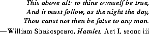
20.5 The Class java.lang.Character
Objects of type Character represent primitive values of type char.
public final class Character {
public static final char MIN_VALUE = '\u0000';
public static final char MAX_VALUE = '\uffff';
public static final int MIN_RADIX = 2;
public static final int MAX_RADIX = 36;
public Character(char value);
public String toString();
public boolean equals(Object obj);
public int hashCode();
public char charValue();
public static boolean isDefined(char ch);
public static boolean isLowerCase(char ch);
public static boolean isUpperCase(char ch);
public static boolean isTitleCase(char ch);
public static boolean isDigit(char ch);
public static boolean isLetter(char ch);
public static boolean isLetterOrDigit(char ch);
public static boolean isJavaLetter(char ch);
public static boolean isJavaLetterOrDigit(char ch);)
public static boolean isSpace(char ch);
public static char toLowerCase(char ch);
public static char toUpperCase(char ch);
public static char toTitleCase(char ch);
public static int digit(char ch, int radix);
public static char forDigit(int digit, int radix);
}
Many of the methods of class Character are defined in terms of a "Unicode attribute table" that specifies a name for every defined Unicode character as well as other possible attributes, such as a decimal value, an uppercase equivalent, a lowercase equivalent, and/or a titlecase equivalent. Prior to Java 1.1, these methods were internal to the Java compiler and based on Unicode 1.1.5, as described here. The most recent versions of these methods should be used in Java compilers that are to run on Java systems that do not yet include these methods.
The Unicode 1.1.5 attribute table is available on the World Wide Web as:
ftp://unicode.org/pub/MappingTables/UnicodeData-1.1.5.txt
However, this file contains a few errors. The term "Unicode attribute table" in the
following sections refers to the contents of this file after the following corrections
have been applied:
- The following entries should have titlecase mappings as shown here:
03D0;GREEK BETA SYMBOL;Ll;0;L;;;;;N;GREEK SMALL LETTER CURLED BETA;;0392;;0392
03D1;GREEK THETA SYMBOL;Ll;0;L;;;;;N;GREEK SMALL LETTER SCRIPT THETA;;0398;;0398
03D5;GREEK PHI SYMBOL;Ll;0;L;;;;;N;GREEK SMALL LETTER SCRIPT PHI;;03A6;;03A6
03D6;GREEK PI SYMBOL;Ll;0;L;;;;;N;GREEK SMALL LETTER OMEGA PI;;03A0;;03A0
03F0;GREEK KAPPA SYMBOL;Ll;0;L;;;;;N;GREEK SMALL LETTER SCRIPT KAPPA;;039A;;039A
03F1;GREEK RHO SYMBOL;Ll;0;L;;;;;N;GREEK SMALL LETTER TAILED RHO;;03A1;;03A1
- The following entries should have numeric values as shown here:
FF10;FULLWIDTH DIGIT ZERO;Nd;0;EN;0030;0;0;0;N;;;;;
FF11;FULLWIDTH DIGIT ONE;Nd;0;EN;0031;1;1;1;N;;;;;
FF12;FULLWIDTH DIGIT TWO;Nd;0;EN;0032;2;2;2;N;;;;;
FF13;FULLWIDTH DIGIT THREE;Nd;0;EN;0033;3;3;3;N;;;;;
FF14;FULLWIDTH DIGIT FOUR;Nd;0;EN;0034;4;4;4;N;;;;;
FF15;FULLWIDTH DIGIT FIVE;Nd;0;EN;0035;5;5;5;N;;;;;
FF16;FULLWIDTH DIGIT SIX;Nd;0;EN;0036;6;6;6;N;;;;;
FF17;FULLWIDTH DIGIT SEVEN;Nd;0;EN;0037;7;7;7;N;;;;;
FF18;FULLWIDTH DIGIT EIGHT;Nd;0;EN;0038;8;8;8;N;;;;;
FF19;FULLWIDTH DIGIT NINE;Nd;0;EN;0039;9;9;9;N;;;;;
- The following entries should have no lowercase equivalents:
03DA;GREEK LETTER STIGMA;Lu;0;L;;;;;N;GREEK CAPITAL LETTER STIGMA;;;;
03DC;GREEK LETTER DIGAMMA;Lu;0;L;;;;;N;GREEK CAPITAL LETTER DIGAMMA;;;;
03DE;GREEK LETTER KOPPA;Lu;0;L;;;;;N;GREEK CAPITAL LETTER KOPPA;;;;
03E0;GREEK LETTER SAMPI;Lu;0;L;;;;;N;GREEK CAPITAL LETTER SAMPI;;;;
- This entry should have uppercase and titlecase equivalents as shown here:
03C2;GREEK SMALL LETTER FINAL SIGMA;Ll;0;L;;;;;N;;;03A3;;03A3
It is anticipated that these problems will be corrected for Unicode version 2.0.
Java 1.1 will include the methods defined here, either based on Unicode 1.1.5 or, we hope, updated versions of the methods that use the newer Unicode 2.0. The character attribute table for Unicode 2.0 is currently available on the World Wide Web as the file:
ftp://unicode.org/pub/MappingTables/UnicodeData-2.0.12.txt
If you are implementing a Java compiler or system, please refer to the page:
http://java.sun.com/Series
which will be updated with information about the Unicode-dependent methods.
The biggest change in Unicode 2.0 is a complete rearrangement of the Korean Hangul characters. There are numerous smaller improvements as well.
It is our intention that Java will track Unicode as it evolves over time. Given that full Unicode support is just emerging in the marketplace, and that changes in Unicode are in areas which are not yet widely used, this should cause minimal problems and further Java's goal of worldwide language support.
20.5.1 public static final char MIN_VALUE = '\u0000';
The constant value of this field is the smallest value of type char.
[This field is scheduled for introduction in Java version 1.1.]
20.5.2 public static final char MAX_VALUE = '\uffff';
The constant value of this field is the smallest value of type char.
[This field is scheduled for introduction in Java version 1.1.]
20.5.3 public static final int MIN_RADIX = 2;
The constant value of this field is the smallest value permitted for the radix argument in radix-conversion methods such as the digit method (§20.5.23), the
forDigit method (§20.5.24), and the toString method of class Integer
(§20.7).
20.5.4 public static final int MAX_RADIX = 36;
The constant value of this field is the largest value permitted for the radix argument in radix-conversion methods such as the digit method (§20.5.23), the forDigit method (§20.5.24), and the toString method of class Integer (§20.7).
20.5.5 public Character(char value)
This constructor initializes a newly created Character object so that it represents
the primitive value that is the argument.
20.5.6 public String toString()
The result is a String whose length is 1 and whose sole component is the primitive char value represented by this Character object.
Overrides the toString method of Object (§20.1.2).
20.5.7 public boolean equals(Object obj)
The result is true if and only if the argument is not null and is a Character
object that represents the same char value as this Character object.
Overrides the equals method of Object (§20.1.3).
20.5.8 public int hashCode()
The result is the primitive char value represented by this Character object, cast
to type int.
Overrides the hashCode method of Object (§20.1.4).
20.5.9 public char charValue()
The primitive char value represented by this Character object is returned.
20.5.10 public static boolean isDefined(char ch)
The result is true if and only if the character argument is a defined Unicode character.
A character is a defined Unicode character if and only if at least one of the following is true:
- It has an entry in the Unicode attribute table.
- It is not less than
\u3040 and not greater than \u9FA5.
- It is not less than
\uF900 and not greater than \uFA2D.
It follows, then, that for Unicode 1.1.5 as corrected above, the defined Unicode characters are exactly those with codes in the following list, which contains both single codes and inclusive ranges: 0000-01F5, 01FA-0217, 0250-02A8, 02B0-02DE, 02E0-02E9, 0300-0345, 0360-0361, 0374-0375, 037A, 037E, 0384-038A, 038C, 038E-03A1, 03A3-03CE, 03D0-03D6, 03DA, 03DC, 03DE, 03E0, 03E2-03F3, 0401-040C, 040E-044F, 0451-045C, 045E-0486, 0490-04C4, 04C7-04C8, 04CB-04CC, 04D0-04EB, 04EE-04F5, 04F8-04F9, 0531-0556, 0559-055F, 0561-0587, 0589, 05B0-05B9, 05BB-05C3, 05D0-05EA, 05F0-05F4, 060C, 061B, 061F, 0621-063A, 0640-0652, 0660-066D, 0670-06B7, 06BA-06BE, 06C0-06CE, 06D0-06ED, 06F0-06F9, 0901-0903, 0905-0939, 093C-094D, 0950-0954, 0958-0970, 0981-0983, 0985-098C, 098F-0990, 0993-09A8, 09AA-09B0, 09B2, 09B6-09B9, 09BC, 09BE-09C4, 09C7-09C8, 09CB-09CD, 09D7, 09DC-09DD, 09DF-09E3, 09E6-09FA, 0A02, 0A05-0A0A, 0A0F-0A10, 0A13-0A28, 0A2A-0A30, 0A32-0A33, 0A35-0A36, 0A38-0A39, 0A3C, 0A3E-0A42, 0A47-0A48, 0A4B-0A4D, 0A59-0A5C, 0A5E, 0A66-0A74, 0A81-0A83, 0A85-0A8B, 0A8D, 0A8F-0A91, 0A93-0AA8, 0AAA-0AB0, 0AB2-0AB3, 0AB5-0AB9, 0ABC-0AC5, 0AC7-0AC9, 0ACB-0ACD, 0AD0, 0AE0, 0AE6-0AEF, 0B01-0B03, 0B05-0B0C, 0B0F-0B10, 0B13-0B28, 0B2A-0B30, 0B32-0B33, 0B36-0B39, 0B3C-0B43, 0B47-0B48, 0B4B-0B4D, 0B56-0B57, 0B5C-0B5D, 0B5F-0B61, 0B66-0B70, 0B82-0B83, 0B85-0B8A, 0B8E-0B90, 0B92-0B95, 0B99-0B9A, 0B9C, 0B9E-0B9F, 0BA3-0BA4, 0BA8-0BAA, 0BAE-0BB5, 0BB7-0BB9, 0BBE-0BC2, 0BC6-0BC8, 0BCA-0BCD, 0BD7, 0BE7-0BF2, 0C01-0C03, 0C05-0C0C, 0C0E-0C10, 0C12-0C28, 0C2A-0C33, 0C35-0C39, 0C3E-0C44, 0C46-0C48, 0C4A-0C4D, 0C55-0C56, 0C60-0C61, 0C66-0C6F, 0C82-0C83, 0C85-0C8C, 0C8E-0C90, 0C92-0CA8, 0CAA-0CB3, 0CB5-0CB9, 0CBE-0CC4, 0CC6-0CC8, 0CCA-0CCD, 0CD5-0CD6, 0CDE, 0CE0-0CE1, 0CE6-0CEF, 0D02-0D03, 0D05-0D0C, 0D0E-0D10, 0D12-0D28, 0D2A-0D39, 0D3E-0D43, 0D46-0D48, 0D4A-0D4D, 0D57, 0D60-0D61, 0D66-0D6F, 0E01-0E3A, 0E3F-0E5B, 0E81-0E82, 0E84, 0E87-0E88, 0E8A, 0E8D, 0E94-0E97, 0E99-0E9F, 0EA1-0EA3, 0EA5, 0EA7, 0EAA-0EAB, 0EAD-0EB9, 0EBB-0EBD, 0EC0-0EC4, 0EC6, 0EC8-0ECD, 0ED0-0ED9, 0EDC-0EDD, 10A0-10C5, 10D0-10F6, 10FB, 1100-1159, 115F-11A2, 11A8-11F9, 1E00-1E9A, 1EA0-1EF9, 1F00-1F15, 1F18-1F1D, 1F20-1F45, 1F48-1F4D, 1F50-1F57, 1F59, 1F5B, 1F5D, 1F5F-1F7D, 1F80-1FB4, 1FB6-1FC4, 1FC6-1FD3, 1FD6-1FDB, 1FDD-1FEF, 1FF2-1FF4, 1FF6-1FFE, 2000-202E, 2030-2046, 206A-2070, 2074-208E, 20A0-20AA, 20D0-20E1, 2100-2138, 2153-2182, 2190-21EA, 2200-22F1, 2300, 2302-237A, 2400-2424, 2440-244A, 2460-24EA, 2500-2595, 25A0-25EF, 2600-2613, 261A-266F, 2701-2704, 2706-2709, 270C-2727, 2729-274B, 274D, 274F-2752, 2756, 2758-275E, 2761-2767, 2776-2794, 2798-27AF, 27B1-27BE, 3000-3037, 303F, 3041-3094, 3099-309E, 30A1-30FE, 3105-312C, 3131-318E, 3190-319F, 3200-321C, 3220-3243, 3260-327B, 327F-32B0, 32C0-32CB, 32D0-32FE, 3300-3376, 337B-33DD, 33E0-33FE, 3400-9FA5, F900-FA2D, FB00-FB06, FB13-FB17, FB1E-FB36, FB38-FB3C, FB3E, FB40-FB41, FB43-FB44, FB46-FBB1, FBD3-FD3F, FD50-FD8F, FD92-FDC7, FDF0-FDFB, FE20-FE23, FE30-FE44, FE49-FE52, FE54-FE66, FE68-FE6B, FE70-FE72, FE74, FE76-FEFC, FEFF, FF01-FF5E, FF61-FFBE, FFC2-FFC7, FFCA-FFCF, FFD2-FFD7, FFDA-FFDC, FFE0-FFE6, FFE8-FFEE, FFFD.
[This method is scheduled for introduction in Java version 1.1, either as defined here, or updated for Unicode 2.0; see §20.5.]
20.5.11 public static boolean isLowerCase(char ch)
The result is true if and only if the character argument is a lowercase character.
A character is considered to be lowercase if and only if all of the following are true:
- The character
ch is not in the range \u2000 through \u2FFF.
- The Unicode attribute table does not specify a mapping to lowercase for this character (the purpose of this requirement is to exclude titlecase characters).
- At least one of the following is true:
- The Unicode attribute table specifies a mapping to uppercase for this character.
- The name for the character in the Unicode attribute table contains the words
SMALL LETTER or the words SMALL LIGATURE.
It follows, then, that for Unicode 1.1.5 as corrected above, the lowercase Unicode characters are exactly those with codes in the following list, which contains both single codes and inclusive ranges: 0061-007A, 00DF-00F6, 00F8-00FF, 0101-0137 (odds only), 0138-0148 (evens only), 0149-0177 (odds only), 017A-017E (evens only), 017F-0180, 0183, 0185, 0188, 018C-018D, 0192, 0195, 0199-019B, 019E, 01A1-01A5 (odds only), 01A8, 01AB, 01AD, 01B0, 01B4, 01B6, 01B9-01BA, 01BD, 01C6, 01C9, 01CC-01DC (evens only), 01DD-01EF (odds only), 01F0, 01F3, 01F5, 01FB-0217 (odds only), 0250-0261, 0263-0269, 026B-0273, 0275, 0277-027F, 0282-028E, 0290-0293, 029A, 029D-029E, 02A0, 02A3-02A8, 0390, 03AC-03CE, 03D0-03D1, 03D5-03D6, 03E3-03EF (odds only), 03F0-03F1, 0430-044F, 0451-045C, 045E-045F, 0461-0481 (odds only), 0491-04BF (odds only), 04C2, 04C4, 04C8, 04CC, 04D1-04EB (odds only), 04EF-04F5 (odds only), 04F9, 0561-0587, 1E01-1E95 (odds only), 1E96-1E9A, 1EA1-1EF9 (odds only), 1F00-1F07, 1F10-1F15, 1F20-1F27, 1F30-1F37, 1F40-1F45, 1F50-1F57, 1F60-1F67, 1F70-1F7D, 1F80-1F87, 1F90-1F97, 1FA0-1FA7, 1FB0-1FB4, 1FB6-1FB7, 1FC2-1FC4, 1FC6-1FC7, 1FD0-1FD3, 1FD6-1FD7, 1FE0-1FE7, 1FF2-1FF4, 1FF6-1FF7, FB00-FB06, FB13-FB17, FF41-FF5A.
Of the first 128 Unicode characters, exactly 26 are considered to be lowercase:
abcdefghijklmnopqrstuvwxyz
[This specification for the method isLowerCase is scheduled for introduction in Java version 1.1, either as defined here, or updated for Unicode 2.0; see §20.5. In previous versions of Java, this method returns false for all arguments larger than \u00FF.]
20.5.12 public static boolean isUpperCase(char ch)
The result is true if and only if the character argument is an uppercase character.
A character is considered to be uppercase if and only if all of the following are true:
- The character
ch is not in the range \u2000 through \u2FFF.
- The Unicode attribute table does not specify a mapping to uppercase for this character (the purpose of this requirement is to exclude titlecase characters).
- At least one of the following is true:
- The Unicode attribute table specifies a mapping to lowercase for this character.
- The name for the character in the Unicode attribute table contains the words
CAPITAL LETTER or the words CAPITAL LIGATURE.
It follows, then, that for Unicode 1.1.5 as corrected above, the uppercase Unicode characters are exactly those with codes in the following list, which contains both single codes and inclusive ranges: 0041-005A, 00C0-00D6, 00D8-00DE, 0100-0136 (evens only), 0139-0147 (odds only), 014A-0178 (evens only), 0179-017D (odds only), 0181-0182, 0184, 0186, 0187, 0189-018B, 018E-0191, 0193-0194, 0196-0198, 019C-019D, 019F-01A0, 01A2, 01A4, 01A7, 01A9, 01AC, 01AE, 01AF, 01B1-01B3, 01B5, 01B7, 01B8, 01BC, 01C4, 01C7, 01CA, 01CD-01DB (odds only), 01DE-01EE (evens only), 01F1, 01F4, 01FA-0216 (evens only), 0386, 0388-038A, 038C, 038E, 038F, 0391-03A1, 03A3-03AB, 03E2-03EE (evens only), 0401-040C, 040E-042F, 0460-0480 (evens only), 0490-04BE (evens only), 04C1, 04C3, 04C7, 04CB, 04D0-04EA (evens only), 04EE-04F4 (evens only), 04F8, 0531-0556, 10A0-10C5, 1E00-1E94 (evens only), 1EA0-1EF8 (evens only), 1F08-1F0F, 1F18-1F1D, 1F28-1F2F, 1F38-1F3F, 1F48-1F4D, 1F59-1F5F (odds only), 1F68-1F6F, 1F88-1F8F, 1F98-1F9F, 1FA8-1FAF, 1FB8-1FBC, 1FC8-1FCC, 1FD8-1FDB, 1FE8-1FEC, 1FF8-1FFC, FF21-FF3A.
Of the first 128 Unicode characters, exactly 26 are considered to be uppercase:
ABCDEFGHIJKLMNOPQRSTUVWXYZ
[This specification for the method isUpperCase is scheduled for introduction in Java version 1.1, either as defined here, or updated for Unicode 2.0; see §20.5. In previous versions of Java, this method returns false for all arguments larger than \u00FF.]
20.5.13 public static boolean isTitleCase(char ch)
The result is true if and only if the character argument is a titlecase character.
The notion of "titlecase" was introduced into Unicode to handle a peculiar situation: there are single Unicode characters whose appearance in each case looks exactly like two ordinary Latin letters. For example, there is a single Unicode character `LJ' (\u01C7) that looks just like the characters `L' and `J' put together. There is a corresponding lowercase letter `lj' (\u01C9) as well. These characters are present in Unicode primarily to allow one-to-one translations from the Cyrillic alphabet, as used in Serbia, for example, to the Latin alphabet. Now suppose the word "LJUBINJE" (which has six characters, not eight, because two of them are the single Unicode characters `LJ' and `NJ', perhaps produced by one-to-one translation from the Cyrillic) is to be written as part of a book title, in capitals and lowercase. The strategy of making the first letter uppercase and the rest lowercase results in "LJubinje"-most unfortunate. The solution is that there must be a third form, called a titlecase form. The titlecase form of `LJ' is `Lj' (\u01C8) and the titlecase form of `NJ' is `Nj'. A word for a book title is then best rendered by converting the first letter to titlecase if possible, otherwise to uppercase; the remaining letters are then converted to lowercase.
A character is considered to be titlecase if and only if both of the following are true:
- The character
ch is not in the range \u2000 through \u2FFF.
- The Unicode attribute table specifies a mapping to uppercase and a mapping to lowercase for this character.
There are exactly four Unicode 1.1.5 characters for which isTitleCase returns
true:
\u01C5 LATIN CAPITAL LETTER D WITH SMALL LETTER Z WITH CARON
\u01C8 LATIN CAPITAL LETTER L WITH SMALL LETTER J
\u01CB LATIN CAPITAL LETTER N WITH SMALL LETTER J
\u01F2 LATIN CAPITAL LETTER D WITH SMALL LETTER Z
[This method is scheduled for introduction in Java version 1.1, either as defined here, or updated for Unicode 2.0; see §20.5.]
20.5.14 public static boolean isDigit(char ch)
The result is true if and only if the character argument is a digit.
A character is considered to be a digit if and only if both of the following are true:
- The character
ch is not in the range \u2000 through \u2FFF.
- The name for the character in the Unicode attribute table contains the word
DIGIT.
The digits are those characters with the following codes:
0030-0039 ISO-Latin-1 (and ASCII) digits ('0'-'9')
0660-0669 Arabic-Indic digits
06F0-06F9 Eastern Arabic-Indic digits
0966-096F Devanagari digits
09E6-09EF Bengali digits
0A66-0A6F Gurmukhi digits
0AE6-0AEF Gujarati digits
0B66-0B6F Oriya digits
0BE7-0BEF Tamil digits (there are only nine of these-no zero digit)
0C66-0C6F Telugu digits
0CE6-0CEF Kannada digits
0D66-0D6F Malayalam digits
0E50-0E59 Thai digits
0ED0-0ED9 Lao digits
FF10-FF19 Fullwidth digits
Of the first 128 Unicode characters, exactly 10 are considered to be digits:
0123456789
[This specification for the method isDigit is scheduled for introduction in Java version 1.1, either as defined here, or updated for Unicode 2.0; see §20.5. In previous versions of Java, this method returns false for all arguments larger than \u00FF.]
20.5.15 public static boolean isLetter(char ch)
The result is true if and only if the character argument is a letter.
A character is considered to be a letter if and only if it is a letter or digit (§20.5.16) but is not a digit (§20.5.14).
[This method is scheduled for introduction in Java version 1.1, either as defined here, or updated for Unicode 2.0; see §20.5.]
20.5.16 public static boolean isLetterOrDigit(char ch)
The result is true if and only if the character argument is a letter-or-digit.
A character is considered to be a letter-or-digit if and only if it is a defined Unicode character (§20.5.10) and its code lies in one of the following ranges:
0030-0039 ISO-Latin-1 (and ASCII) digits ('0'-'9')
0041-005A ISO-Latin-1 (and ASCII) uppercase Latin letters ('A'-'Z')
0061-007A ISO-Latin-1 (and ASCII) lowercase Latin letters ('a'-'z')
00C0-00D6 ISO-Latin-1 supplementary letters
00D8-00F6 ISO-Latin-1 supplementary letters
00F8-00FF ISO-Latin-1 supplementary letters
0100-1FFF Latin extended-A, Latin extended-B, IPA extensions,
spacing modifier letters, combining diacritical marks, basic
Greek, Greek symbols and Coptic, Cyrillic, Armenian,
Hebrew extended-A, Basic Hebrew, Hebrew extended-B,
Basic Arabic, Arabic extended, Devanagari, Bengali,
Gurmukhi, Gujarati, Oriya, Tamil, Telugu, Kannada,
Malayalam, Thai, Lao, Basic Georgian, Georgian extended,
Hanguljamo, Latin extended additional, Greek extended
3040-9FFF Hiragana, Katakana, Bopomofo, Hangul compatibility
Jamo, CJK miscellaneous, enclosed CJK characters and
months, CJK compatibility, Hangul, Hangul
supplementary-A, Hangul supplementary-B, CJK unified
ideographs
F900-FDFF CJK compatibility ideographs, alphabetic presentation
forms, Arabic presentation forms-A
FE70-FEFE Arabic presentation forms-B
FF10-FF19 Fullwidth digits
FF21-FF3A Fullwidth Latin uppercase
FF41-FF5A Fullwidth Latin lowercase
FF66-FFDC Halfwidth Katakana and Hangul
It follows, then, that for Unicode 1.1.5 as corrected above, the Unicode letters and digits are exactly those with codes in the following list, which contains both single codes and inclusive ranges: 0030-0039, 0041-005A, 0061-007A, 00C0-00D6, 00D8-00F6, 00F8-01F5, 01FA-0217, 0250-02A8, 02B0-02DE, 02E0-02E9, 0300-0345, 0360-0361, 0374-0375, 037A, 037E, 0384-038A, 038C, 038E, 038F-03A1, 03A3-03CE, 03D0-03D6, 03DA-03E2, 03DA, 03DC, 03DE, 03E0, 03E2-03F3, 0401-040C, 040E-044F, 0451-045C, 045E-0486, 0490-04C4, 04C7-04C8, 04CB-04CC, 04D0-04EB, 04EE-04F5, 04F8-04F9, 0531-0556, 0559-055F, 0561-0587, 0589, 05B0-05B9, 05BB-05C3, 05D0-05EA, 05F0-05F4, 060C, 061B, 061F, 0621, 0622-063A, 0640-0652, 0660-066D, 0670-06B7, 06BA-06BE, 06C0-06CE, 06D0-06ED, 06F0-06F9, 0901-0903, 0905-0939, 093C-094D, 0950-0954, 0958-0970, 0981-0983, 0985-098C, 098F-0990, 0993-09A8, 09AA-09B0, 09B2, 09B6-09B9, 09BC, 09BE, 09BF-09C4, 09C7-09C8, 09CB-09CD, 09D7, 09DC-09DD, 09DF-09E3, 09E6-09FA, 0A02, 0A05-0A0A, 0A0F-0A10, 0A13-0A28, 0A2A-0A30, 0A32-0A33, 0A35-0A36, 0A38-0A39, 0A3C, 0A3E, 0A3F-0A42, 0A47-0A48, 0A4B-0A4D, 0A59-0A5C, 0A5E, 0A66-0A74, 0A81-0A83, 0A85-0A8B, 0A8D, 0A8F, 0A90-0A91, 0A93-0AA8, 0AAA-0AB0, 0AB2-0AB3, 0AB5-0AB9, 0ABC-0AC5, 0AC7-0AC9, 0ACB-0ACD, 0AD0, 0AE0, 0AE6-0AEF, 0B01-0B03, 0B05-0B0C, 0B0F-0B10, 0B13-0B28, 0B2A-0B30, 0B32-0B33, 0B36-0B39, 0B3C-0B43, 0B47-0B48, 0B4B-0B4D, 0B56-0B57, 0B5C-0B5D, 0B5F-0B61, 0B66-0B70, 0B82-0B83, 0B85-0B8A, 0B8E-0B90, 0B92-0B95, 0B99-0B9A, 0B9C, 0B9E, 0B9F, 0BA3-0BA4, 0BA8-0BAA, 0BAE-0BB5, 0BB7-0BB9, 0BBE-0BC2, 0BC6-0BC8, 0BCA-0BCD, 0BD7, 0BE7-0BF2, 0C01-0C03, 0C05-0C0C, 0C0E-0C10, 0C12-0C28, 0C2A-0C33, 0C35-0C39, 0C3E-0C44, 0C46-0C48, 0C4A-0C4D, 0C55-0C56, 0C60-0C61, 0C66-0C6F, 0C82-0C83, 0C85-0C8C, 0C8E-0C90, 0C92-0CA8, 0CAA-0CB3, 0CB5-0CB9, 0CBE-0CC4, 0CC6-0CC8, 0CCA-0CCD, 0CD5-0CD6, 0CDE, 0CE0, 0CE1, 0CE6-0CEF, 0D02-0D03, 0D05-0D0C, 0D0E-0D10, 0D12-0D28, 0D2A-0D39, 0D3E-0D43, 0D46-0D48, 0D4A-0D4D, 0D57, 0D60-0D61, 0D66-0D6F, 0E01-0E3A, 0E3F-0E5B, 0E81-0E82, 0E84, 0E87-0E88, 0E8A, 0E8D, 0E94-0E97, 0E99-0E9F, 0EA1-0EA3, 0EA5, 0EA7, 0EAA-0EAB, 0EAD-0EB9, 0EBB-0EBD, 0EC0-0EC4, 0EC6, 0EC8, 0EC9-0ECD, 0ED0-0ED9, 0EDC-0EDD, 10A0-10C5, 10D0-10F6, 10FB, 1100-1159, 115F-11A2, 11A8-11F9, 1E00-1E9A, 1EA0-1EF9, 1F00-1F15, 1F18-1F1D, 1F20-1F45, 1F48-1F4D, 1F50-1F57, 1F59, 1F5B, 1F5D, 1F5F-1F7D, 1F80-1FB4, 1FB6-1FC4, 1FC6-1FD3, 1FD6-1FDB, 1FDD-1FEF, 1FF2-1FF4, 1FF6-1FFE, 3041-3094, 3099-309E, 30A1-30FE, 3105-312C, 3131-318E, 3190-319F, 3200-321C, 3220-3243, 3260-327B, 327F-32B0, 32C0-32CB, 32D0-32FE, 3300-3376, 337B-33DD, 33E0-33FE, 3400-9FA5, F900-FA2D, FB00-FB06, FB13-FB17, FB1E-FB36, FB38-FB3C, FB3E, FB40, FB41, FB43, FB44, FB46, FB47-FBB1, FBD3-FD3F, FD50-FD8F, FD92-FDC7, FDF0-FDFB, FE70-FE72, FE74, FE76, FE77-FEFC, FF10-FF19, FF21-FF3A, FF41-FF5A, FF66-FFBE, FFC2-FFC7, FFCA-FFCF, FFD2-FFD7, FFDA-FFDC.
[This method is scheduled for introduction in Java version 1.1, either as defined here, or updated for Unicode 2.0; see §20.5.]
20.5.17 public static boolean isJavaLetter(char ch)
The result is true if and only if the character argument is a character that can begin
a Java identifier.
A character is considered to be a Java letter if and only if it is a letter (§20.5.15) or is the dollar sign character '$' (\u0024) or the underscore ("low line") character '_' (\u005F).
[This method is scheduled for introduction in Java version 1.1, either as defined here, or updated for Unicode 2.0; see §20.5.]
20.5.18 public static boolean isJavaLetterOrDigit(char ch)
The result is true if and only if the character argument is a character that can occur
in a Java identifier after the first character.
A character is considered to be a Java letter-or-digit if and only if it is a letter-or-digit (§20.5.16) or is the dollar sign character '$' (\u0024) or the underscore ("low line") character '_' (\u005F).
[This method is scheduled for introduction in Java version 1.1, either as defined here, or updated for Unicode 2.0; see §20.5.]
20.5.19 public static boolean isSpace(char ch)
The result is true if the argument ch is one of the following characters:
'\t' \u0009 HT HORIZONTAL TABULATION
'\n' \u000A LF LINE FEED (also known as NEW LINE)
'\f' \u000C FF FORM FEED
'\r' \u000D CR CARRIAGE RETURN
' ' \u0020 SP SPACE
Otherwise, the result is false.
20.5.20 public static char toLowerCase(char ch)
If the character ch has a lowercase equivalent specified in the Unicode attribute
table, then that lowercase equivalent character is returned. Otherwise, the argument ch is returned.
The lowercase equivalents specified in the Unicode attribute table, for Unicode 1.1.5 as corrected above, are as follows, where character codes to the right of arrows are the lowercase equivalents of character codes to the left of arrows: 0041-005A
0061-007A, 00C0-00D600E0-00F6, 00D8-00DE00F8-00FE, 0100-012E0101-012F (evens to odds), 0132-01360133-0137 (evens to odds), 0139-0147013A-0148 (odds to evens), 014A-0176014B-0177 (evens to odds), 017800FF, 0179-017D017A-017E (odds to evens), 01810253, 01820183, 01840185, 01860254, 01870188, 018A0257, 018B018C, 018E0258, 018F0259, 0190025B, 01910192, 01930260, 01940263, 01960269, 01970268, 01980199, 019C026F, 019D0272, 01A0-01A401A1-01A5 (evens to odds), 01A701A8, 01A90283, 01AC01AD, 01AE0288, 01AF01B0, 01B1028A, 01B2028B, 01B301B4, 01B501B6, 01B70292, 01B801B9, 01BC01BD, 01C401C6, 01C501C6, 01C701C9, 01C801C9, 01CA01CC, 01CB-01DB01CC-01DC (odds to evens), 01DE-01EE01DF-01EF (evens to odds), 01F101F3, 01F201F3, 01F401F5, 01FA-021601FB-0217 (evens to odds), 038603AC, 0388-038A03AD-03AF, 038C03CC, 038E03CD, 038F03CE, 0391-03A103B1-03C1, 03A3-03AB03C3-03CB, 03E2-03EE03E3-03EF (evens to odds), 0401-040C0451-045C, 040E045E, 040F045F, 0410-042F0430-044F, 0460-04800461-0481 (evens to odds), 0490-04BE0491-04BF (evens to odds), 04C104C2, 04C304C4, 04C704C8, 04CB04CC, 04D0-04EA04D1-04EB (evens to odds), 04EE-04F404EF-04F5 (evens to odds), 04F804F9, 0531-05560561-0586, 10A0-10C510D0-10F5, 1E00-1E941E01-1E95 (evens to odds), 1EA0-1EF81EA1-1EF9 (evens to odds), 1F08-1F0F1F00-1F07, 1F18-1F1D1F10-1F15, 1F28-1F2F1F20-1F27, 1F38-1F3F1F30-1F37, 1F48-1F4D1F40-1F45, 1F591F51, 1F5B1F53, 1F5D1F55, 1F5F1F57, 1F68-1F6F1F60-1F67, 1F88-1F8F1F80-1F87, 1F98-1F9F1F90-1F97, 1FA8-1FAF1FA0-1FA7, 1FB81FB0, 1FB91FB1, 1FBA1F70, 1FBB1F71, 1FBC1FB3, 1FC8-1FCB1F72-1F75, 1FCC1FC3, 1FD81FD0, 1FD91FD1, 1FDA1F76, 1FDB1F77, 1FE81FE0, 1FE91FE1, 1FEA1F7A, 1FEB1F7B, 1FEC1FE5, 1FF81F78, 1FF91F79, 1FFA1F7C, 1FFB1F7D, 1FFC1FF3, 2160-216F2170-217F, 24B6-24CF24D0-24E9, FF21-FF3AFF41-FF5A.
Note that the method isLowerCase (§20.5.11) will not necessarily return true when given the result of the toLowerCase method.
[This specification for the method toLowerCase is scheduled for introduction in Java version 1.1, either as defined here, or updated for Unicode 2.0; see §20.5. In previous versions of Java, this method returns its argument for all arguments larger than \u00FF.]
20.5.21 public static char toUpperCase(char ch)
If the character ch has an uppercase equivalent specified in the Unicode attribute
table, then that uppercase equivalent character is returned. Otherwise, the argument ch is returned.
The uppercase equivalents specified in the Unicode attribute table for Unicode 1.1.5 as corrected above, are as follows, where character codes to the right of arrows are the uppercase equivalents of character codes to the left of arrows: 0061-007A0041-005A, 00E0-00F600C0-00D6, 00F8-00FE00D8-00DE, 00FF0178, 0101-012F0100-012E (odds to evens), 0133-01370132-0136 (odds to evens), 013A-01480139-0147 (evens to odds), 014B-0177014A-0176 (odds to evens), 017A-017E0179-017D (evens to odds), 017F0053, 0183-01850182-0184 (odds to evens), 01880187, 018C018B, 01920191, 01990198, 01A1-01A501A0-01A4 (odds to evens), 01A801A7, 01AD01AC, 01B001AF, 01B401B3, 01B601B5, 01B901B8, 01BD01BC, 01C501C4, 01C601C4, 01C801C7, 01C901C7, 01CB01CA, 01CC01CA, 01CE-01DC01CD-01DB (evens to odds), 01DF-01EF01DE-01EE (odds to evens), 01F201F1, 01F301F1, 01F501F4, 01FB-021701FA-0216 (odds to evens), 02530181, 02540186, 0257018A, 0258018E, 0259018F, 025B0190, 02600193, 02630194, 02680197, 02690196, 026F019C, 0272019D, 028301A9, 028801AE, 028A01B1, 028B01B2, 029201B7, 03AC0386, 03AD-03AF0388-038A, 03B1-03C10391-03A1, 03C203A3, 03C3-03CB03A3-03AB, 03CC038C, 03CD038E, 03CE038F, 03D00392, 03D10398, 03D503A6, 03D603A0, 03E3-03EF03E2-03EE (odds to evens), 03F0039A, 03F103A1, 0430-044F0410-042F, 0451-045C0401-040C, 045E040E, 045F040F, 0461-04810460-0480 (odds to evens), 0491-04BF0490-04BE (odds to evens), 04C204C1, 04C404C3, 04C804C7, 04CC04CB, 04D1-04EB04D0-04EA (odds to evens), 04EF-04F504EE-04F4 (odds to evens), 04F904F8, 0561-05860531-0556, 1E01-1E951E00-1E94 (odds to evens), 1EA1-1EF91EA0-1EF8 (odds to evens), 1F00-1F071F08-1F0F, 1F10-1F151F18-1F1D, 1F20-1F271F28-1F2F, 1F30-1F371F38-1F3F, 1F40-1F451F48-1F4D, 1F511F59, 1F531F5B, 1F551F5D, 1F571F5F, 1F60-1F671F68-1F6F, 1F701FBA, 1F711FBB, 1F72-1F751FC8-1FCB, 1F761FDA, 1F771FDB, 1F781FF8, 1F791FF9, 1F7A1FEA, 1F7B1FEB, 1F7C1FFA, 1F7D1FFB, 1F80-1F871F88-1F8F, 1F90-1F971F98-1F9F, 1FA0-1FA71FA8-1FAF, 1FB01FB8, 1FB11FB9, 1FB31FBC, 1FC31FCC, 1FD01FD8, 1FD11FD9, 1FE01FE8, 1FE11FE9, 1FE51FEC, 1FF31FFC, 2170-217F2160-216F, 24D0-24E924B6-24CF, FF41-FF5AFF21-FF3A.
Note that the method isUpperCase (§20.5.12) will not necessarily return true when given the result of the toUpperCase method.
[This specification for the method toUpperCase is scheduled for introduction in Java version 1.1, either as defined here, or updated for Unicode 2.0; see §20.5. In previous versions of Java, this method returns its argument for all arguments larger than \u00FE. Note that although \u00FF is a lowercase character, its uppercase equivalent is \u0178; toUpperCase in versions of Java prior to version 1.1 simply do not consistently handle or use Unicode character codes above \u00FF.]
20.5.22 public static char toTitleCase(char ch)
If the character ch has a titlecase equivalent specified in the Unicode attribute
table, then that titlecase equivalent character is returned; otherwise, the argument
ch is returned.
Note that the method isTitleCase (§20.5.13) will not necessarily return true when given the result of the toTitleCase method. The Unicode attribute table always has the titlecase attribute equal to the uppercase attribute for characters that have uppercase equivalents but no separate titlecase form.
Example: Character.toTitleCase('a') returns 'A'
Example: Character.toTitleCase('Q') returns 'Q'
Example: Character.toTitleCase('lj') returns 'Lj' where 'lj' is the Unicode character \u01C9 and 'Lj' is its titlecase equivalent character \u01C8.
[This method is scheduled for introduction in Java version 1.1.]
20.5.23 public static int digit(char ch, int radix)
Returns the numeric value of the character ch considered as a digit in the specified
radix. If the value of radix is not a valid radix, or the character ch is not a valid
digit in the specified radix, then -1 is returned.
A radix is valid if and only if its value is not less than Character.MIN_RADIX (§20.5.3) and not greater than Character.MAX_RADIX (§20.5.4).
A character is a valid digit if and only if one of the following is true:
- The method
isDigit returns true for the character, and the decimal digit value of the character, as specified in the Unicode attribute table, is less than the specified radix. In this case, the decimal digit value is returned.
- The character is one of the uppercase Latin letters
'A'-'Z' (\u0041-\u005A) and its code is less than radix+'A'-10. In this case ch-'A'+10 is returned.
- The character is one of the lowercase Latin letters
'a'-'z' (\u0061-\u007A) and its code is less than radix+'a'-10. In this case ch-'a'+10 is returned.
[This specification for the method digit is scheduled for introduction in Java version 1.1, either as defined here, or updated for Unicode 2.0; see §20.5. In previous versions of Java, this method returns -1 for all character codes larger than \u00FF.]
20.5.24 public static char forDigit(int digit, int radix)
Returns a character that represents the given digit in the specified radix. If the
value of radix is not a valid radix, or the value of digit is not a valid digit in the
specified radix, the null character '\u0000' is returned.
A radix is valid if and only if its value is not less than Character.MIN_RADIX (§20.5.3) and not greater than Character.MAX_RADIX (§20.5.4).
A digit is valid if and only if it is nonnegative and less than the radix.
If the digit is less than 10, then the character value '0'+digit is returned; otherwise, 'a'+digit-10 is returned. Thus, the digits produced by forDigit, in increasing order of value, are the ASCII characters:
0123456789abcdefghijklmnopqrstuvwxyz
(these are '\u0030' through '\u0039' and '\u0061' through '\u007a'). If
uppercase letters are desired, the toUpperCase method may be called on the
result:
Character.toUpperCase(Character.forDigit(digit, radix))
20.6 The Class java.lang.Number
The abstract class Number has subclasses Integer, Long, Float, and Double
which wrap primitive types, defining abstract methods to convert the represented
numeric value to int, long, float, and double.
public abstract class Number {
public abstract int intValue();
public abstract long longValue();
public abstract float floatValue();
public abstract double doubleValue();
}
20.6.1 public abstract int intValue()
The general contract of the intValue method is that it returns the numeric value
represented by this Number object after converting it to type int.
Overridden by Integer (§20.7.8), Long (§20.8.8), Float (§20.9.12), and Double (§20.10.11).
20.6.2 public abstract long longValue()
The general contract of the longValue method is that it returns the numeric value
represented by this Number object after converting it to type long.
Overridden by Integer (§20.7.9), Long (§20.8.9), Float (§20.9.13), and Double (§20.10.12).
20.6.3 public abstract float floatValue()
The general contract of the floatValue method is that it returns the numeric
value represented by this Number object after converting it to type float.
Overridden by Integer (§20.7.10), Long (§20.8.10), Float (§20.9.14), and Double (§20.10.13).
20.6.4 public abstract double doubleValue()
The general contract of the doubleValue method is that it returns the numeric
value represented by this Number object after converting it to type double.
Overridden by Integer (§20.7.11), Long (§20.8.11), Float (§20.9.15), and Double (§20.10.14).
20.7 The Class java.lang.Integer
public final class Integer extends Number {
public static final int MIN_VALUE = 0x80000000;
public static final int MAX_VALUE = 0x7fffffff;
public Integer(int value);
public Integer(String s)
throws NumberFormatException;
public String toString();
public boolean equals(Object obj);
public int hashCode();
public int intValue();
public long longValue();
public float floatValue();
public double doubleValue();
public static String toString(int i);
public static String toString(int i, int radix);
public static String toHexString(long i);
public static String toOctalString(long i);
public static String toBinaryString(long i);
public static int parseInt(String s)
throws NumberFormatException;
public static int parseInt(String s, int radix)
throws NumberFormatException;
public static Integer valueOf(String s)
throws NumberFormatException;
public static Integer valueOf(String s, int radix)
throws NumberFormatException;
public static Integer getInteger(String nm);
public static Integer getInteger(String nm, int val);
public static Integer getInteger(String nm, Integer val);
}
20.7.1 public static final int MIN_VALUE = 0x80000000;
The constant value of this field is -2147483648, the lowest value of type int.
20.7.2 public static final int MAX_VALUE = 0x7fffffff;
The constant value of this field is 2147483647, the highest value of type int.
20.7.3 public Integer(int value)
This constructor initializes a newly created Integer object so that it represents
the primitive value that is the argument.
20.7.4 public Integer(String s) throws NumberFormatException
This constructor initializes a newly created Integer object so that it represents
the integer represented by the string in decimal form. The string is converted to an
int in exactly the manner used by the parseInt method (§20.7.18) for radix 10.
20.7.5 public String toString()
The integer value represented by this Integer object is converted to signed decimal representation and returned as a string, exactly as if the integer value were
given as an argument to the toString method that takes one argument (§20.7.12).
Overrides the toString method of Object (§20.1.2).
20.7.6 public boolean equals(Object obj)
The result is true if and only if the argument is not null and is an Integer
object that represents the same int value as this Integer object.
Overrides the equals method of Object (§20.1.3).
20.7.7 public int hashCode()
The result is the primitive int value represented by this Integer object.
Overrides the hashCode method of Object (§20.1.4).
20.7.8 public int intValue()
The int value represented by this Integer object is returned.
Overrides the intValue method of Number (§20.6.1).
20.7.9 public long longValue()
The int value represented by this Integer object is converted (§5.1.2) to type
long and the result of the conversion is returned.
Overrides the longValue method of Number (§20.6.2).
20.7.10 public float floatValue()
The int value represented by this Integer object is converted (§5.1.2) to type
float and the result of the conversion is returned.
Overrides the floatValue method of Number (§20.6.3).
20.7.11 public double doubleValue()
The int value represented by this Integer object is converted (§5.1.2) to type
double and the result of the conversion is returned.
Overrides the doubleValue method of Number (§20.6.4).
20.7.12 public static String toString(int i)
The argument is converted to signed decimal representation and returned as a
string, exactly as if the argument and the radix 10 were given as arguments to the
toString method that takes two arguments (§20.7.13).
20.7.13 public static String toString(int i, int radix)
The first argument is converted to a signed representation in the radix specified by
the second argument; this representation is returned as a string.
If the radix is smaller than Character.MIN_RADIX (§20.5.3) or larger than Character.MAX_RADIX (§20.5.4), then the value 10 is used instead.
If the first argument is negative, the first character of the result will be the character '-' ('\u002d'). If the first argument is not negative, no sign character appears in the result.
The remaining characters of the result represent the magnitude of the first argument. If the magnitude is zero, it is represented by a single zero character '0' ('\u0030'); otherwise, the first character of the representation of the magnitude will not be the zero character.The following ASCII characters are used as digits:
0123456789abcdefghijklmnopqrstuvwxyz
These are '\u0030' through '\u0039' and '\u0061' through '\u007a'. If the
radix is N, then the first N of these characters are used as radix-N digits in the
order shown. Thus, the digits for hexadecimal (radix 16) are 0123456789abcdef.
If uppercase letters are desired, the toUpperCase method (§20.12.36) of class
String may be called on the result:
Integer.toString(n, 16).toUpperCase()
20.7.14 public static String toHexString(int i)
The argument is converted to an unsigned representation in hexadecimal radix
(base 16); this representation is returned as a string.
The result represents the unsigned magnitude of the argument. This equals the argument plus  if the argument is negative; otherwise, it equals the argument.
if the argument is negative; otherwise, it equals the argument.
If the unsigned magnitude is zero, it is represented by a single zero character '0' ('\u0030'); otherwise, the first character of the representation of the unsigned magnitude will not be the zero character. The following characters are used as hexadecimal digits:
0123456789abcdef
These are the characters '\u0030' through '\u0039' and '\u0061' through
'\u0066'. If uppercase letters are desired, the toUpperCase method (§20.12.36)
of class String may be called on the result:
Long.toHexString(n).toUpperCase()
20.7.15 public static String toOctalString(int i)
The argument is converted to an unsigned representation in octal radix (base 8);
this representation is returned as a string.
The result represents the unsigned magnitude of the argument. This equals the argument plus  if the argument is negative; otherwise, it equals the argument.
if the argument is negative; otherwise, it equals the argument.
If the unsigned magnitude is zero, it is represented by a single zero character '0' ('\u0030'); otherwise, the first character of the representation of the unsigned magnitude will not be the zero character. The octal digits are:
01234567
These are the characters '\u0030' through '\u0037'.
20.7.16 public static String toBinaryString(int i)
The argument is converted to an unsigned representation in binary radix (base 2);
this representation is returned as a string.
The result represents the unsigned magnitude of the argument. This equals the argument plus  if the argument is negative; otherwise, it equals the argument.
if the argument is negative; otherwise, it equals the argument.
If the unsigned magnitude is zero, it is represented by a single zero character '0' ('\u0030'); otherwise, the first character of the representation of the unsigned magnitude will not be the zero character. The characters '0' ('\u0030') and '1' ('\u0031') are used as binary digits.
20.7.17 public static int parseInt(String s)
throws NumberFormatException
The argument is interpreted as representing a signed decimal integer. The components of the string must all be decimal digits, except that the first character may be
'-' ('\u002d') to indicate a negative value. The resulting integer value is
returned, exactly as if the argument and the radix 10 were given as arguments to
the parseInt method that takes two arguments (§20.7.18).
20.7.18 public static int parseInt(String s, int radix)
throws NumberFormatException
The first argument is interpreted as representing a signed integer in the radix specified by the second argument. The components of the string must all be digits of
the specified radix (as determined by whether Character.digit (§20.5.23)
returns a nonnegative value), except that the first character may be '-'
('\u002d') to indicate a negative value. The resulting integer value is returned.
An exception of type NumberFormatException is thrown if any of the following situations occurs:
- The first argument is
null or is a string of length zero.
- The
radix is either smaller than Character.MIN_RADIX (§20.5.3) or larger than Character.MAX_RADIX (§20.5.4).
- Any character of the string is not a digit of the specified
radix, except that the first character may be a minus sign '-' ('\u002d') provided that the string is longer than length 1.
- The integer value represented by the string is not a value of type
int.
Examples:
parseInt("0", 10) returns 0
parseInt("473", 10) returns 473
parseInt("-0", 10) returns 0
parseInt("-FF", 16) returns -255
parseInt("1100110", 2) returns 102
parseInt("2147483647", 10) returns 2147483647
parseInt("-2147483648", 10) returns -2147483648
parseInt("2147483648", 10) throws a NumberFormatException
parseInt("99", 8) throws a NumberFormatException
parseInt("Kona", 10) throws a NumberFormatException
parseInt("Kona", 27) returns 411787
20.7.19 public static Integer valueOf(String s)
throws NumberFormatException
The argument is interpreted as representing a signed decimal integer, exactly as if
the argument were given to the parseInt method that takes one argument
(§20.7.17). The result is an Integer object that represents the integer value specified by the string.
In other words, this method returns an Integer object equal to the value of:
new Integer(Integer.parseInt(s))
20.7.20 public static Integer valueOf(String s, int radix)
throws NumberFormatException
The first argument is interpreted as representing a signed integer in the radix specified by the second argument, exactly as if the arguments were given to the
parseInt method that takes two arguments (§20.7.18). The result is an Integer
object that represents the integer value specified by the string.
In other words, this method returns an Integer object equal to the value of:
new Integer(Integer.parseInt(s, radix))
20.7.21 public static Integer getInteger(String nm)
The first argument is treated as the name of a system property to be obtained as if
by the method System.getProperty (§20.18.9). The string value of this property is then interpreted as an integer value and an Integer object representing this
value is returned. If there is no property of the specified name, or if the property
does not have the correct numeric format, then null is returned.
In other words, this method returns an Integer object equal to the value of:
getInteger(nm, null)
20.7.22 public static Integer getInteger(String nm, int val)
The first argument is treated as the name of a system property to be obtained as if
by the method System.getProperty (§20.18.9). The string value of this property is then interpreted as an integer value and an Integer object representing this
value is returned. If the property does not have the correct numeric format, then an
Integer object that represents the value of the second argument is returned.
In other words, this method returns an Integer object equal to the value of:
getInteger(nm, new Integer(val))
but in practice it may be implemented in a manner such as:
Integer result = getInteger(nm, null);
return (result == null) ? new Integer(val) : result;
to avoid the unnecessary allocation of an Integer object when the default value is
not needed.
20.7.23 public static Integer getInteger(String nm, Integer val)
The first argument is treated as the name of a system property to be obtained as if
by the method System.getProperty (§20.18.9). The string value of this property is then interpreted as an integer value and an Integer object representing this
value is returned.
- If the property value begins with the two ASCII characters
0x or the ASCII character #, not followed by a minus sign, then the rest of it is parsed as a hexadecimal integer exactly as for the method Integer.valueOf (§20.7.20) with radix 16.
- If the property value begins with the ASCII character
0 followed by another character, it is parsed as an octal integer exactly as for the method Integer.valueOf (§20.7.20) with radix 8.
- Otherwise, the property value is parsed as a decimal integer exactly as for the method
Integer.valueOf (§20.7.20) with radix 10.
The second argument serves as a default value. If there is no property of the specified name, or if the property does not have the correct numeric format, then the second argument is returned.
20.8 The Class java.lang.Long
public final class Long extends Number {
public static final long MIN_VALUE = 0x8000000000000000L;
public static final long MAX_VALUE = 0x7fffffffffffffffL;
public Long(long value);
public Long(String s)
throws NumberFormatException;
public String toString();
public boolean equals(Object obj);
public int hashCode();
public int intValue();
public long longValue();
public float floatValue();
public double doubleValue();
public static String toString(long i);
public static String toString(long i, int radix);
public static String toHexString(long i);
public static String toOctalString(long i);
public static String toBinaryString(long i);
public static long parseLong(String s)
throws NumberFormatException;
public static long parseLong(String s, int radix)
throws NumberFormatException;
public static Long valueOf(String s)
throws NumberFormatException;
public static Long valueOf(String s, int radix)
throws NumberFormatException;
public static Long getLong(String nm);
public static Long getLong(String nm, long val);
public static Long getLong(String nm, Long val);
}
20.8.1 public static final long MIN_VALUE = 0x8000000000000000L;
The constant value of this field is the lowest value of type long.
20.8.2 public static final long MAX_VALUE = 0x7fffffffffffffffL;
The constant value of this field is the highest value of type long.
20.8.3 public Long(long value)
This constructor initializes a newly created Long object so that it represents the
primitive value that is the argument.
20.8.4 public Long(String s) throws NumberFormatException
This constructor initializes a newly created Long object so that it represents the
integer represented by the string in decimal form. The string is converted to a
long value in exactly the manner used by the parseLong method (§20.8.17) for
radix 10.
20.8.5 public String toString()
The long integer value represented by this Long object is converted to signed decimal representation and returned as a string, exactly as if the integer value were
given as an argument to the toString method that takes one argument (§20.7.12).
Overrides the toString method of Object (§20.1.2).
20.8.6 public boolean equals(Object obj)
The result is true if and only if the argument is not null and is a Long object that
represents the same long value as this Long object.
Overrides the equals method of Object (§20.1.3).
20.8.7 public int hashCode()
The result is the exclusive OR of the two halves of the primitive long value represented by this Long object. That is, the hashcode is the value of the expression:
(int)(this.longValue()^(this.longValue()>>>32))
Overrides the hashCode method of Object (§20.1.4).
20.8.8 public int intValue()
The long value represented by this Long object is converted (§5.1.3) to type int
and the result of the conversion is returned.
Overrides the intValue method of Number (§20.6.1).
20.8.9 public long longValue()
The long value represented by this Long object is returned.
Overrides the longValue method of Number (§20.6.2).
20.8.10 public float floatValue()
The long value represented by this Long object is converted (§5.1.2) to type
float and the result of the conversion is returned.
Overrides the floatValue method of Number (§20.6.3).
20.8.11 public double doubleValue()
The long value represented by this Long object is converted (§5.1.2) to type
double and the result of the conversion is returned.
Overrides the doubleValue method of Number (§20.6.4).
20.8.12 public static String toString(long i)
The argument is converted to signed decimal representation and returned as a
string, exactly as if the argument and the radix 10 were given as arguments to the
toString method that takes two arguments (§20.8.13).
20.8.13 public static String toString(long i, int radix)
The first argument is converted to a signed representation in the radix specified by
the second argument; this representation is returned as a string.
If the radix is smaller than Character.MIN_RADIX (§20.5.3) or larger than Character.MAX_RADIX (§20.5.4), then the value 10 is used instead.
If the first argument is negative, the first character of the result will be the character '-' ('\u002d'). If the first argument is not negative, no sign character appears in the result.
The remaining characters of the result represent the magnitude of the first argument. If the magnitude is zero, it is represented by a single zero character '0' ('\u0030'); otherwise, the first character of the representation of the magnitude will not be the zero character. The following ASCII characters are used as digits:
0123456789abcdefghijklmnopqrstuvwxyz
These are '\u0030' through '\u0039' and '\u0061' through '\u007a'. If the
radix is N, then the first N of these characters are used as radix-N digits in the
order shown. Thus, the digits for hexadecimal (radix 16) are 0123456789abcdef.
If uppercase letters are desired, the toUpperCase method (§20.12.36) of class
String may be called on the result:
Long.toString(n, 16).toUpperCase()
20.8.14 public static String toHexString(long i)
The argument is converted to an unsigned representation in hexadecimal radix
(base 16); this representation is returned as a string.
The result represents the unsigned magnitude of the argument. This equals the argument plus if the argument is negative; otherwise, it equals the argument.
If the unsigned magnitude is zero, it is represented by a single zero character '0' ('\u0030'); otherwise, the first character of the representation of the unsigned magnitude will not be the zero character. The following characters are used as hexadecimal digits:
0123456789abcdef
These are the characters '\u0030' through '\u0039' and '\u0061' through
'\u0066'. If uppercase letters are desired, the toUpperCase method (§20.12.36)
of class String may be called on the result:
Long.toHexString(n).toUpperCase()
20.8.15 public static String toOctalString(long i)
The argument is converted to an unsigned representation in octal radix (base 8);
this representation is returned as a string.
The result represents the unsigned magnitude of the argument. This equals the argument plus  if the argument is negative; otherwise, it equals the argument.
if the argument is negative; otherwise, it equals the argument.
If the unsigned magnitude is zero, it is represented by a single zero character '0' ('\u0030'); otherwise, the first character of the representation of the unsigned magnitude will not be the zero character. The following characters are used as octal digits:
01234567
These are the characters '\u0030' through '\u0037'.
20.8.16 public static String toBinaryString(long i)
The argument is converted to an unsigned representation in binary radix (base 2);
this representation is returned as a string.
The result represents the unsigned magnitude of the argument. This equals the argument plus  if the argument is negative; otherwise, it equals the argument.
if the argument is negative; otherwise, it equals the argument.
If the unsigned magnitude is zero, it is represented by a single zero character '0' ('\u0030'); otherwise, the first character of the representation of the unsigned magnitude will not be the zero character. The characters '0' ('\u0030') and '1' ('\u0031') are used as binary digits.
20.8.17 public static long parseLong(String s)
throws NumberFormatException
The argument is interpreted as representing a signed decimal integer. The components of the string must all be decimal digits, except that the first character may be
'-' ('\u002d') to indicate a negative value. The resulting long value is returned,
exactly as if the argument and the radix 10 were given as arguments to the
parseLong method that takes two arguments (§20.8.18).
Note that neither L nor l is permitted to appear at the end of the string as a type indicator, as would be permitted in Java source code (§3.10.1).
20.8.18 public static long parseLong(String s, int radix)
throws NumberFormatException
The first argument is interpreted as representing a signed integer in the radix specified by the second argument. The components of the string must all be digits of
the specified radix (as determined by whether Character.digit (§20.5.23)
returns a nonnegative value), except that the first character may be '-'
('\u002d') to indicate a negative value. The resulting long value is returned.
Note that neither L nor l is permitted to appear at the end of the string as a type indicator, as would be permitted in Java source code (§3.10.1)-except that either L or l may appear as a digit for a radix greater than 22.
An exception of type NumberFormatException is thrown if any of the following situations occurs:
- The first argument is
null or is a string of length zero.
- The
radix is either smaller than Character.MIN_RADIX (§20.5.3) or larger than Character.MAX_RADIX (§20.5.4).
- The first character of the string is not a digit of the specified
radix and is not a minus sign '-' ('\u002d').
- The first character of the string is a minus sign and the string is of length 1.
- Any character of the string after the first is not a digit of the specified
radix.
- The integer value represented by the string cannot be represented as a value of type
long.
Examples:
parseLong("0", 10) returns 0L
parseLong("473", 10) returns 473L
parseLong("-0", 10) returns 0L
parseLong("-FF", 16) returns -255L
parseLong("1100110", 2) returns 102L
parseLong("99", 8) throws a NumberFormatException
parseLong("Hazelnut", 10) throws a NumberFormatException
parseLong("Hazelnut", 36) returns 1356099454469L
20.8.19 public static Long valueOf(String s)
throws NumberFormatException
The argument is interpreted as representing a signed decimal integer, exactly as if
the argument were given to the parseLong method that takes one argument
(§20.8.17). The result is a Long object that represents the integer value specified
by the string.
In other words, this method returns a Long object equal to the value of:
new Long(Long.parseLong(s))
20.8.20 public static Long valueOf(String s, int radix)
throws NumberFormatException
The first argument is interpreted as representing a signed integer in the radix specified by the second argument, exactly as if the arguments were given to the
parseLong method that takes two arguments (§20.8.18). The result is a Long
object that represents the integer value specified by the string.
In other words, this method returns a Long object equal to the value of:
new Long(Long.parseLong(s, radix))
20.8.21 public static Long getLong(String nm)
The first argument is treated as the name of a system property to be obtained as if
by the method System.getProperty (§20.18.9). The string value of this property is then interpreted as an integer value and a Long object representing this
value is returned. If there is no property of the specified name, or if the property
does not have the correct numeric format, then null is returned.
In other words, this method returns a Long object equal to the value of:
getLong(nm, null)
20.8.22 public static Long getLong(String nm, long val)
The first argument is treated as the name of a system property to be obtained as if
by the method System.getProperty (§20.18.9). The string value of this property is then interpreted as an integer value and a Long object representing this
value is returned. If there is no property of the specified name, or if the property
does not have the correct numeric format, then a Long object that represents the
value of the second argument is returned.
In other words, this method returns a Long object equal to the value of:
getLong(nm, new Long(val))
but in practice it may be implemented in a manner such as:
Long result = getLong(nm, null);
return (result == null) ? new Long(val) : result;
to avoid the unnecessary allocation of a Long object when the default value is not
needed.
20.8.23 public static Long getLong(String nm, Long val)
The first argument is treated as the name of a system property to be obtained as if
by the method System.getProperty (§20.18.9). The string value of this property is then interpreted as an integer value and a Long object representing this
value is returned.
- If the property value begins with the two ASCII characters
0x or the ASCII character #, not followed by a minus sign, then the rest of it is parsed as a hexadecimal integer exactly as for the method Long.valueOf (§20.7.20) with radix 16.
- If the property value begins with the character
0 followed by another character, it is parsed as an octal integer exactly as for the method Long.valueOf (§20.7.20) with radix 8.
- Otherwise the property value is parsed as a decimal integer exactly as for the method
Long.valueOf (§20.7.20) with radix 10.
Note that, in every case, neither L nor l is permitted to appear at the end of the property value as a type indicator, as would be permitted in Java source code (§3.10.1).
The second argument serves as a default value. If there is no property of the specified name, or if the property does not have the correct numeric format, then the second argument is returned.
20.9 The Class java.lang.Float
public final class Float extends Number {
public static final float MIN_VALUE = 1.4e-45f;
public static final float MAX_VALUE = 3.4028235e+38f;
public static final float NEGATIVE_INFINITY = -1.0f/0.0f;
public static final float POSITIVE_INFINITY = 1.0f/0.0f;
public static final float NaN = 0.0f/0.0f;
public Float(float value);
public Float(double value);
public Float(String s)
throws NumberFormatException;
public String toString();
public boolean equals(Object obj);
public int hashCode();
public int intValue();
public long longValue();
public float floatValue();
public double doubleValue();
public static String toString(float f);
public static Float valueOf(String s)
throws NullPointerException, NumberFormatException;
public boolean isNaN();
public static boolean isNaN(float v);
public boolean isInfinite();
public static boolean isInfinite(float v);
public static int floatToIntBits(float value);
public static float intBitsToFloat(int bits);
}
20.9.1 public static final float MIN_VALUE = 1.4e-45f;
The constant value of this field is the smallest positive nonzero value of type
float. It is equal to the value returned by Float.intBitsToFloat(0x1).
20.9.2 public static final float MAX_VALUE = 3.4028235e+38f;
The constant value of this field is the largest positive finite value of type float. It
is equal to the value returned by Float.intBitsToFloat(0x7f7fffff).
20.9.3 public static final float NEGATIVE_INFINITY =
-1.0f/0.0f;
The constant value of this field is the negative infinity of type float. It is equal to
the value returned by Float.intBitsToFloat(0xff800000).
20.9.4 public static final float POSITIVE_INFINITY =
1.0f/0.0f;
The constant value of this field is the positive infinity of type float. It is equal to
the value returned by Float.intBitsToFloat(0x7f800000).
20.9.5 public static final float NaN = 0.0f/0.0f;
The constant value of this field is the Not-a-Number value of type float. It is
equal to the value returned by Float.intBitsToFloat(0x7fc00000).
20.9.6 public Float(float value)
This constructor initializes a newly created Float object so that it represents the
primitive value that is the argument.
20.9.7 public Float(double value)
This constructor initializes a newly created Float object so that it represents the
result of narrowing (§5.1.3) the argument from type double to type float.
20.9.8 public Float(String s) throws NumberFormatException
This constructor initializes a newly created Float object so that it represents the
floating-point value of type float represented by the string. The string is converted to a float value in exactly the manner used by the valueOf method
(§20.9.17).
20.9.9 public String toString()
The primitive float value represented by this Float object is converted to a
string exactly as if by the method toString of one argument (§20.9.16).
Overrides the toString method of Object (§20.1.2).
20.9.10 public boolean equals(Object obj)
The result is true if and only if the argument is not null and is a Float object
that represents the same float value as this Float object. For this purpose, two
float values are considered to be the same if and only if the method
floatToIntBits (§20.9.22) returns the same int value when applied to each.
Note that even though the == operator returns false if both operands are NaN,
this equals method will return true if this Float object and the argument are
both Float objects that represent NaN. On the other hand, even though the ==
operator returns true if one operand is positive zero and the other is negative
zero, this equals method will return false if this Float object and the argument
represent zeroes of different sign. This definition allows hashtables to operate
properly.
Overrides the equals method of Object (§20.1.3).
20.9.11 public int hashCode()
The result is the integer bit representation, exactly as produced by the method
floatToIntBits (§20.9.22), of the primitive float value represented by this
Float object.
Overrides the hashCode method of Object (§20.1.4).
20.9.12 public int intValue()
The float value represented by this Float object is converted (§5.1.3) to type
int and the result of the conversion is returned.
Overrides the intValue method of Number (§20.6.1).
20.9.13 public long longValue()
The float value represented by this Float object is converted (§5.1.3) to type
long and the result of the conversion is returned.
Overrides the longValue method of Number (§20.6.2).
20.9.14 public float floatValue()
The float value represented by this Float object is returned.
Overrides the floatValue method of Number (§20.6.3).
20.9.15 public double doubleValue()
The float value represented by this Float object is converted (§5.1.2) to type
double and the result of the conversion is returned.
Overrides the doubleValue method of Number (§20.6.4).
20.9.16 public static String toString(float f)
The argument is converted to a readable string format as follows. All characters
and characters in strings mentioned below are ASCII characters.
- If the argument is NaN, the result is the string
"NaN".
- Otherwise, the result is a string that represents the sign and magnitude (absolute value) of the argument. If the sign is negative, the first character of the result is
'-' ('\u002d'); if the sign is positive, no sign character appears in the result. As for the magnitude m:
- If m is infinity, it is represented by the characters "
Infinity"; thus, positive infinity produces the result "Infinity" and negative infinity produces the result "-Infinity".
- If m is zero, it is represented by the characters
"0.0"; thus, negative zero produces the result "-0.0" and positive zero produces the result "0.0".
- If m is greater than or equal to but less than
 , then it is represented as the integer part of m, in decimal form with no leading zeroes, followed by
, then it is represented as the integer part of m, in decimal form with no leading zeroes, followed by '.' (\u002E), followed by one or more decimal digits representing the fractional part of m.
- If m is less than
 or not less than
or not less than  , then it is represented in so-called "computerized scientific notation." Let n be the unique integer such that
, then it is represented in so-called "computerized scientific notation." Let n be the unique integer such that  ; then let a be the mathematically exact quotient of m and
; then let a be the mathematically exact quotient of m and  so that . The magnitude is then represented as the integer part of a, as a single decimal digit, followed by
so that . The magnitude is then represented as the integer part of a, as a single decimal digit, followed by '.' (\u002E), followed by decimal digits representing the fractional part of a, followed by the letter 'E' (\u0045), followed by a representation of n as a decimal integer, as produced by the method Integer.toString of one argument (§20.7.12).
How many digits must be printed for the fractional part of m or a? There must be at least one digit to represent the fractional part, and beyond that as many, but only as many, more digits as are needed to uniquely distinguish the argument value from adjacent values of type float. That is, suppose that x is the exact mathematical value represented by the decimal representation produced by this method for a finite nonzero argument f. Then f must be the float value nearest to x; or, if two float values are equally close to x, then f must be one of them and the least significant bit of the significand of f must be 0.
[This specification for the method toString is scheduled for introduction in Java version 1.1. In previous versions of Java, this method produces Inf instead of Infinity for infinite values. Also, it renders finite values in the same form as the %g format of the printf function in the C programming language, which can lose precision because it produces at most six digits after the decimal point.]
20.9.17 public static Float valueOf(String s)
throws NullPointerException, NumberFormatException
The string s is interpreted as the representation of a floating-point value and a
Float object representing that value is created and returned.
If s is null, then a NullPointerException is thrown.
Leading and trailing whitespace (§20.5.19) characters in s are ignored. The rest of s should constitute a FloatValue as described by the lexical syntax rules:
FloatValue:
Signopt Digits . Digitsopt ExponentPartopt
Signopt . Digits ExponentPartopt
where Sign, Digits, and ExponentPart are as defined in §3.10.2. If it does not have
the form of a FloatValue, then a NumberFormatException is thrown. Otherwise,
it is regarded as representing an exact decimal value in the usual "computerized
scientific notation"; this exact decimal value is then conceptually converted to an
"infinitely precise" binary value that is then rounded to type float by the usual
round-to-nearest rule of IEEE 754 floating-point arithmetic. Finally, a new object
of class Float is created to represent this float value.
Note that neither F nor f is permitted to appear in s as a type indicator, as would be permitted in Java source code (§3.10.1).
20.9.18 public boolean isNaN()
The result is true if and only if the value represented by this Float object is
NaN.
20.9.19 public static boolean isNaN(float v)
The result is true if and only if the value of the argument is NaN.
20.9.20 public boolean isInfinite()
The result is true if and only if the value represented by this Float object is positive infinity or negative infinity.
20.9.21 public static boolean isInfinite(float v)
The result is true if and only if the value of the argument is positive infinity or
negative infinity.
20.9.22 public static int floatToIntBits(float value)
The result is a representation of the floating-point argument according to the IEEE
754 floating-point "single format" bit layout:
- Bit 31 (the bit that is selected by the mask
0x80000000) represents the sign of the floating-point number.
- Bits 30-23 (the bits that are selected by the mask
0x7f800000) represent the exponent.
- Bits 22-0 (the bits that are selected by the mask
0x007fffff) represent the significand (sometimes called the mantissa) of the floating-point number.
- If the argument is positive infinity, the result will be
0x7f800000.
- If the argument is negative infinity, the result will be
0xff800000.
- If the argument is NaN, the result will be
0x7fc00000.
In all cases, the result is an integer that, when given to the intBitsToFloat method (§20.9.23), will produce a floating-point value equal to the argument to floatToIntBits.
20.9.23 public static float intBitsToFloat(int bits)
The argument is considered to be a representation of a floating-point value according to the IEEE 754 floating-point "single format" bit layout. That floating-point
value is returned as the result.
- If the argument is
0x7f800000, the result will be positive infinity.
- If the argument is
0xff800000, the result will be negative infinity.
- If the argument is any value in the range
0x7f800001 through 0x7fffffff or in the range 0xff800001 through 0xffffffff, the result will be NaN. (All IEEE 754 NaN values are, in effect, lumped together by the Java language into a single value called NaN.)
- In all other cases, let s, e, and m be three values that can be computed from the argument:
int s = ((bits >> 31) == 0) ? 1 : -1;
int e = ((bits >> 23) & 0xff);
int m = (e == 0) ?
(bits & 0x7fffff) << 1 :
(bits & 0x7fffff) | 0x800000;
Then the floating-point result equals the value of the mathematical expression
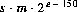.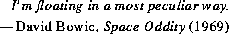
20.10 The Class java.lang.Double
public final class Double extends Number {
public static final double MIN_VALUE =
5e-324;
public static final double MAX_VALUE =
1.7976931348623157e+308;
public static final double NEGATIVE_INFINITY = -1.0/0.0;
public static final double POSITIVE_INFINITY = 1.0/0.0;
public static final double NaN = 0.0/0.0;
public Double(double value);
public Double(String s)
throws NumberFormatException;
public String toString();
public boolean equals(Object obj);
public int hashCode();
public int intValue();
public long longValue();
public float floatValue();
public double doubleValue();
public static String toString(double d);
public static Double valueOf(String s)
throws NullPointerException, NumberFormatException;
public boolean isNaN();
public static boolean isNaN(double v);
public boolean isInfinite();
public static boolean isInfinite(double v);
public static long doubleToLongBits(double value);
public static double longBitsToDouble(long bits);
}
20.10.1 public static final double MIN_VALUE = 5e-324;
The constant value of this field is the smallest positive nonzero value of type
double. It is equal to the value returned by Double.longBitsToDouble(0x1L).
20.10.2 public static final double MAX_VALUE = 1.7976931348623157e+308;
The constant value of this field is the largest positive finite value of type double.
It is equal to the returned by:
Double.longBitsToDouble(0x7fefffffffffffffL)
20.10.3 public static final double NEGATIVE_INFINITY = -1.0/0.0;
The constant value of this field is the negative infinity of type double. It is equal
to the value returned by Double.longBitsToDouble(0xfff0000000000000L).
20.10.4 public static final double POSITIVE_INFINITY = 1.0/0.0;
The constant value of this field is the positive infinity of type double. It is equal to
the value returned by Double.longBitsToDouble(0x7ff0000000000000L).
20.10.5 public static final double NaN = 0.0/0.0;
The constant value of this field is the Not-a-Number of type double. It is equal to
the value returned by Double.longBitsToDouble(0x7ff8000000000000L).
20.10.6 public Double(double value)
This constructor initializes a newly created Double object so that it represents the
primitive value that is the argument.
20.10.7 public Double(String s)
throws NumberFormatException
This constructor initializes a newly created Double object so that it represents the
floating-point value of type double represented by the string. The string is converted to a double value in exactly the manner used by the valueOf method
(§20.9.17).
20.10.8 public String toString()
The primitive double value represented by this Double object is converted to a
string exactly as if by the method toString of one argument (§20.10.15).
Overrides the toString method of Object (§20.1.2).
20.10.9 public boolean equals(Object obj)
The result is true if and only if the argument is not null and is a Double object
that represents the same double value as this Double object. For this purpose,
two double values are considered to be the same if and only if the method
doubleToLongBits (§20.10.21) returns the same long value when applied to
each. Note that even though the == operator returns false if both operands are
NaN, this equals method will return true if this Double object and the argument
are both Double objects that represent NaN. On the other hand, even though the
== operator returns true if one operand is positive zero and the other is negative
zero, this equals method will return false if this Double object and the argument represent zeroes of different sign. This allows hashtables to operate properly.
Overrides the equals method of Object (§20.1.3).
20.10.10 public int hashCode()
The result is the exclusive OR of the two halves of the long integer bit representation, exactly as produced by the method doubleToLongBits (§20.10.21), of the
primitive double value represented by this Double object. That is, the hashcode is
the value of the expression:
(int)(v^(v>>>32))
where v is defined by:
long v = Double.doubleToLongBits(this.longValue());
Overrides the hashCode method of Object (§20.1.4).
20.10.11 public int intValue()
The double value represented by this Double object is converted (§5.1.3) to type
int and the result of the conversion is returned.
Overrides the intValue method of Number (§20.6.1).
20.10.12 public long longValue()
The double value represented by this Double object is converted (§5.1.3) to type
long and the result of the conversion is returned.
Overrides the longValue method of Number (§20.6.2).
20.10.13 public float floatValue()
The double value represented by this Double object is converted (§5.1.3) to type
float and the result of the conversion is returned.
Overrides the floatValue method of Number (§20.6.3).
20.10.14 public double doubleValue()
The double value represented by this Double object is returned.
Overrides the doubleValue method of Number (§20.6.4).
20.10.15 public static String toString(double d)
The argument is converted to a readable string format as follows. All characters
mentioned below are ASCII characters.
- If the argument is NaN, the result is the string
"NaN".
- Otherwise, the result is a string that represents the sign and magnitude (absolute value) of the argument. If the sign is negative, the first character of the result is
'-' ('\u002d'); if the sign is positive, no sign character appears in the result. As for the magnitude m:
- If m is infinity, it is represented by the characters
"Infinity"; thus, positive infinity produces the result "Infinity" and negative infinity produces the result "-Infinity".
- If m is zero, it is represented by the characters
"0.0"; thus, negative zero produces the result "-0.0" and positive zero produces the result "0.0".
- If m is greater than or equal to
 but less than
but less than  , then it is represented as the integer part of m, in decimal form with no leading zeroes, followed by
, then it is represented as the integer part of m, in decimal form with no leading zeroes, followed by '.' (\u002E), followed by one or more decimal digits representing the fractional part of m.
- If m is less than
 or not less than
or not less than  , then it is represented in so-called "computerized scientific notation." Let n be the unique integer such that ; then let a be the mathematically exact quotient of m and so that . The magnitude is then represented as the integer part of a, as a single decimal digit, followed by
, then it is represented in so-called "computerized scientific notation." Let n be the unique integer such that ; then let a be the mathematically exact quotient of m and so that . The magnitude is then represented as the integer part of a, as a single decimal digit, followed by '.' (\u002E), followed by decimal digits representing the fractional part of a, followed by the letter 'E' (\u0045), followed by a representation of n as a decimal integer, as produced by the method Integer.toString of one argument (§20.7.12).
How many digits must be printed for the fractional part of m or a? There must be at least one digit to represent the fractional part, and beyond that as many, but only as many, more digits as are needed to uniquely distinguish the argument value from adjacent values of type double. That is, suppose that x is the exact mathematical value represented by the decimal representation produced by this method for a finite nonzero argument d. Then d must be the double value nearest to x; or if two double values are equally close to x, then d must be one of them and the least significant bit of the significand of d must be 0.
[This specification for the method toString is scheduled for introduction in Java version 1.1. In previous versions of Java, this method produces Inf instead of Infinity for infinite values. Also, it rendered finite values in the same form as the %g format of the printf function in the C programming language, which can lose information because it produces at most six digits after the decimal point.]
20.10.16 public static Double valueOf(String s)
throws NullPointerException, NumberFormatException
The string s is interpreted as the representation of a floating-point value and a
Double object representing that value is created and returned.
If s is null, then a NullPointerException is thrown.
Leading and trailing whitespace (§20.5.19) characters in s are ignored. The rest of s should constitute a FloatValue as described by the lexical syntax rule:
FloatValue:
Signopt Digits . Digitsopt ExponentPartopt
Signopt . Digits ExponentPartopt
where Sign, Digits, and ExponentPart are as defined in §3.10.2. If it does not have
the form of a FloatValue, then a NumberFormatException is thrown. Otherwise,
it is regarded as representing an exact decimal value in the usual "computerized
scientific notation"; this exact decimal value is then conceptually converted to an
"infinitely precise" binary value that is then rounded to type double by the usual
round-to-nearest rule of IEEE 754 floating-point arithmetic. Finally, a new object
of class Double is created to represent the double value.
Note that neither D nor d is permitted to appear in s as a type indicator, as would be permitted in Java source code (§3.10.1).
20.10.17 public boolean isNaN()
The result is true if and only if the value represented by this Double object is
NaN.
20.10.18 public static boolean isNaN(double v)
The result is true if and only if the value of the argument is NaN.
20.10.19 public boolean isInfinite()
The result is true if and only if the value represented by this Double object is
positive infinity or negative infinity.
20.10.20 public static boolean isInfinite(double v)
The result is true if and only if the value of the argument is positive infinity or
negative infinity.
20.10.21 public static long doubleToLongBits(double value)
The result is a representation of the floating-point argument according to the IEEE
754 floating-point "double format" bit layout:
- Bit 63 (the bit that is selected by the mask
0x8000000000000000L) represents the sign of the floating-point number.
- Bits 62-52 (the bits that are selected by the mask
0x7ff0000000000000L) represent the exponent.
- Bits 51-0 (the bits that are selected by the mask
0x000fffffffffffffL) represent the significand (sometimes called the mantissa) of the floating-point number.
- If the argument is positive infinity, the result will be
0x7ff0000000000000L.
- If the argument is negative infinity, the result will be
0xfff0000000000000L.
- If the argument is NaN, the result will be
0x7ff8000000000000L.
In all cases, the result is a long integer that, when given to the longBitsToDouble method (§20.10.22), will produce a floating-point value equal to the argument to doubleToLongBits.
20.10.22 public static double longBitsToDouble(long bits)
The argument is considered to be a representation of a floating-point value according to the IEEE 754 floating-point "double format" bit layout. That floating-point
value is returned as the result.
- If the argument is
0x7f80000000000000L, the result will be positive infinity.
- If the argument is
0xff80000000000000L, the result will be negative infinity.
- If the argument is any value in the range
0x7ff0000000000001L through 0x7fffffffffffffffL or in the range 0xfff0000000000001L through 0xffffffffffffffffL, the result will be NaN. (All IEEE 754 NaN values are, in effect, lumped together by the Java language into a single value called NaN.)
- In all other cases, let s, e, and m be three values that can be computed from the argument:
int s = ((bits >> 63) == 0) ? 1 : -1;
int e = (int)((bits >> 52) & 0x7ffL);
long m = (e == 0) ?
(bits & 0xfffffffffffffL) << 1 :
(bits & 0xfffffffffffffL) | 0x10000000000000L;
Then the floating-point result equals the value of the mathematical expression
 .
.
20.11 The Class java.lang.Math
The class Math contains useful basic numerical constants and methods.
public final class Math {
public static final double E = 2.7182818284590452354;
public static final double PI = 3.14159265358979323846;
public static double sin(double a);
public static double cos(double a);
public static double tan(double a);
public static double asin(double a);
public static double acos(double a);
public static double atan(double a);
public static double atan2(double a, double b);
public static double exp(double a);
public static double log(double a);
public static double sqrt(double a);
public static double pow(double a, double b);
public static double IEEEremainder(double f1, double f2);
public static double ceil(double a);
public static double floor(double a);
public static double rint(double a);
public static int round(float a);
public static long round(double a);
public static double random();
public static int abs(int a);
public static long abs(long a);
public static float abs(float a);
public static double abs(double a);
public static int min(int a, int b);
public static long min(long a, long b);
public static float min(float a, float b);
public static double min(double a, double b);
public static int max(int a, int b);
public static long max(long a, long b);
public static float max(float a, float b);
public static double max(double a, double b);
}
To ensure portability of Java programs, the specifications of many of the numerical functions in this package require that they produce the same results as certain published algorithms. These algorithms are available from the well-known network library netlib as the package fdlibm ("Freely Distributable Math Library"). These algorithms, which are written in the C programming language, are to be understood as if executed in Java execution order with all floating-point operations following the rules of Java floating-point arithmetic.
The network library may be found at http://netlib.att.com on the World Wide Web; then perform a keyword search for fdlibm. The library may also be retrieved by E-mail; to begin the process, send a message containing the line:
send index from fdlibm
to netlib@research.att.com. The Java math library is defined with respect to
the version of fdlibm dated 95/01/04. Where fdlibm provides more than one definition for a function (such as acos), the "IEEE754 core function" version is to be
used (residing in a file whose name begins with the letter e).
A complete and self-contained description of the algorithms to be used for these functions will be provided in a future version of this specification. It is also anticipated that the algorithms will be coded in Java to provide a reference implementation that is not tied to fdlibm.
20.11.1 public static final double E = 2.7182818284590452354;
The constant value of this field is the double value that is closer than any other
to e, the base of the natural logarithms.
20.11.2 public static final double PI = 3.14159265358979323846;
The constant value of this field is the double value that is closer than any other
to  , the ratio of the circumference of a circle to its diameter.
, the ratio of the circumference of a circle to its diameter.
20.11.3 public static double sin(double a)
This method computes an approximation to the sine of the argument, using the
sin algorithm as published in fdlibm (see the introduction to this section).
Special cases:
- If the argument is NaN or an infinity, then the result is NaN.
- If the argument is positive zero, then the result is positive zero; if the argument is negative zero, then the result is negative zero.
20.11.4 public static double cos(double a)
This method computes an approximation to the cosine of the argument, using the
cos algorithm as published in fdlibm (see the introduction to this section).
Special case:
- If the argument is NaN or an infinity, then the result is NaN.
20.11.5 public static double tan(double a)
This method computes an approximation to the tangent of the argument, using the
tan algorithm as published in fdlibm (see the introduction to this section).
Special cases:
- If the argument is NaN or an infinity, then the result is NaN.
- If the argument is positive zero, then the result is positive zero; if the argument is negative zero, then the result is negative zero.
20.11.6 public static double asin(double a)
This method computes an approximation to the arc sine of the argument, using the
asin algorithm as published in fdlibm (see the introduction to this section).
Special cases:
- If the argument is NaN or its absolute value is greater than 1, then the result is NaN.
- If the argument is positive zero, then the result is positive zero; if the argument is negative zero, then the result is negative zero.
20.11.7 public static double acos(double a)
This method computes an approximation to the arc cosine of the argument, using
the acos algorithm as published in fdlibm (see the introduction to this section).
Special case:
- If the argument is NaN or its absolute value is greater than 1, then the result is NaN.
20.11.8 public static double atan(double a)
This method computes an approximation to the arc tangent of the argument, using
the atan algorithm as published in fdlibm (see the introduction to this section).
Special cases:
- If the argument is NaN, then the result is NaN.
- If the argument is positive zero, then the result is positive zero; if the argument is negative zero, then the result is negative zero.
20.11.9 public static double atan2(double y, double x)
This method computes an approximation to the arc tangent of the quotient  of
the arguments, using the a
of
the arguments, using the atan2 algorithm as published in fdlibm (see the introduction to this section).
Special cases:
- If either argument is NaN, then the result is NaN.
- If the first argument is positive zero and the second argument is positive, or the first argument is positive and finite and the second argument is positive infinity, then the result is positive zero.
- If the first argument is negative zero and the second argument is positive, or the first argument is negative and finite and the second argument is positive infinity, then the result is negative zero.
- If the first argument is positive zero and the second argument is negative, or the first argument is positive and finite and the second argument is negative infinity, then the result is the
double value closest to  .
.
- If the first argument is negative zero and the second argument is negative, or the first argument is negative and finite and the second argument is negative infinity, then the result is the
double value closest to .
- If the first argument is positive and the second argument is positive zero or negative zero, or the first argument is positive infinity and the second argument is finite, then the result is the
double value closest to  .
.
- If the first argument is negative and the second argument is positive zero or negative zero, or the first argument is negative infinity and the second argument is finite, then the result is the
double value closest to  .
.
- If both arguments are positive infinity, then the result is the
double value closest to 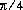.
- If the first argument is positive infinity and the second argument is negative infinity, then the result is the
double value closest to 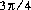.
- If the first argument is negative infinity and the second argument is positive infinity, then the result is the
double value closest to 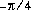.
- If both arguments are negative infinity, then the result is the
double value closest to 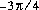.
20.11.10 public static double exp(double a)
This method computes an approximation to the exponential function of the argument (e raised to the power of the argument, where e is the base of the natural logarithms (§20.11.1)), using the exp algorithm as published in fdlibm (see the
introduction to this section).
Special cases:
- If the argument is NaN, then the result is NaN.
- If the argument is positive infinity, then the result is positive infinity.
- If the argument is negative infinity, then the result is positive zero.
20.11.11 public static double log(double a)
This method computes an approximation to the natural logarithm of the argument,
using the log algorithm as published in fdlibm (see the introduction to this section).
Special cases:
- If the argument is NaN or less than zero, then the result is NaN.
- If the argument is positive infinity, then the result is positive infinity.
- If the argument is positive zero or negative zero, then the result is negative infinity.
20.11.12 public static double sqrt(double a)
This method computes an approximation to the square root of the argument.
Special cases:
- If the argument is NaN or less than zero, then the result is NaN.
- If the argument is positive infinity, then the result is positive infinity.
- If the argument is positive zero or negative zero, then the result is the same as the argument.
Otherwise, the result is the double value closest to the true mathematical square
root of the argument value.
20.11.13 public static double pow(double a, double b)
This method computes an approximation to the mathematical operation of raising
the first argument to the power of the second argument, using the pow algorithm as
published in fdlibm (see the introduction to this section).
Special cases:
- If the second argument is positive or negative zero, then the result is
1.0.
- If the second argument is
1.0, then the result is the same as the first argument.
- If the second argument is NaN, then the result is NaN.
- If the first argument is NaN and the second argument is nonzero, then the result is NaN.
- If the absolute value of the first argument is greater than 1 and the second argument is positive infinity, or the absolute value of the first argument is less than 1 and the second argument is negative infinity, then the result is positive infinity.
- If the absolute value of the first argument is greater than 1 and the second argument is negative infinity, or the absolute value of the first argument is less than 1 and the second argument is positive infinity, then the result is positive zero.
- If the absolute value of the first argument equals 1 and the second argument is infinite, then the result is NaN.
- If the first argument is positive zero and the second argument is greater than zero, or the first argument is positive infinity and the second argument is less than zero, then the result is positive zero.
- If the first argument is positive zero and the second argument is less than zero, or the first argument is positive infinity and the second argument is greater than zero, then the result is positive infinity.
- If the first argument is negative zero and the second argument is greater than zero but not a finite odd integer, or the first argument is negative infinity and the second argument is less than zero but not a finite odd integer, then the result is positive zero.
- If the first argument is negative zero and the second argument is a positive finite odd integer, or the first argument is negative infinity and the second argument is a negative finite odd integer, then the result is negative zero.
- If the first argument is negative zero and the second argument is less than zero but not a finite odd integer, or the first argument is negative infinity and the second argument is greater than zero but not a finite odd integer, then the result is positive infinity.
- If the first argument is negative zero and the second argument is a negative finite odd integer, or the first argument is negative infinity and the second argument is a positive finite odd integer, then the result is negative infinity.
- If the first argument is less than zero and the second argument is a finite even integer, then the result is equal to the result of raising the absolute value of the first argument to the power of the second argument.
- If the first argument is less than zero and the second argument is a finite odd integer, then the result is equal to the negative of the result of raising the absolute value of the first argument to the power of the second argument.
- If the first argument is finite and less than zero and the second argument is finite and not an integer, then the result is NaN.
- If both arguments are integers, then the result is exactly equal to the mathematical result of raising the first argument to the power of the second argument if that result can in fact be represented exactly as a
double value.
(In the foregoing descriptions, a floating-point value is considered to be an integer
if and only if it is a fixed point of the method ceil (§20.11.15) or, which is the
same thing, a fixed point of the method floor (§20.11.16). A value is a fixed
point of a one-argument method if and only if the result of applying the method to
the value is equal to the value.)
20.11.14 public static double IEEEremainder(double x, double y)
This method computes the remainder operation on two arguments as prescribed
by the IEEE 754 standard: the remainder value is mathematically equal to
where is the mathematical integer closest to the exact mathematical
value of the quotient  ; if two mathematical integers are equally close to
; if two mathematical integers are equally close to  then n is the integer that is even. If the remainder is zero, its sign is the same as the
sign of the first argument.
then n is the integer that is even. If the remainder is zero, its sign is the same as the
sign of the first argument.
Special cases:
- If either argument is NaN, or the first argument is infinite, or the second argument is positive zero or negative zero, then the result is NaN.
- If the first argument is finite and the second argument is infinite, then the result is the same as the first argument.
20.11.15 public static double ceil(double a)
The result is the smallest (closest to negative infinity) double value that is not less
than the argument and is equal to a mathematical integer.
Special cases:
- If the argument value is already equal to a mathematical integer, then the result is the same as the argument.
- If the argument is NaN or an infinity or positive zero or negative zero, then the result is the same as the argument.
- If the argument value is less than zero but greater than
-1.0, then the result is negative zero.
Note that the value of Math.ceil(x) is exactly the value of -Math.floor(-x).
20.11.16 public static double floor(double a)
The result is the largest (closest to positive infinity) double value that is not
greater than the argument and is equal to a mathematical integer.
Special cases:
- If the argument value is already equal to a mathematical integer, then the result is the same as the argument.
- If the argument is NaN or an infinity or positive zero or negative zero, then the result is the same as the argument.
20.11.17 public static double rint(double a)
The result is the double value that is closest in value to the argument and is equal
to a mathematical integer. If two double values that are mathematical integers are
equally close to the value of the argument, the result is the integer value that is
even.
Special cases:
- If the argument value is already equal to a mathematical integer, then the result is the same as the argument.
- If the argument is NaN or an infinity or positive zero or negative zero, then the result is the same as the argument.
20.11.18 public static int round(float a)
The result is rounded to an integer by adding , taking the floor of the result,
and casting the result to type int.
In other words, the result is equal to the value of the expression:
(int)Math.floor(a + 0.5f)
Special cases:
- If the argument is NaN, the result is
0.
- If the argument is negative infinity, or indeed any value less than or equal to the value of
Integer.MIN_VALUE (§20.7.1), the result is equal to the value of Integer.MIN_VALUE.
- If the argument is positive infinity, or indeed any value greater than or equal to the value of
Integer.MAX_VALUE (§20.7.2), the result is equal to the value of Integer.MAX_VALUE.
20.11.19 public static long round(double a)
The result is rounded to an integer by adding  , taking the floor of the result,
and casting the result to type
, taking the floor of the result,
and casting the result to type long.
In other words, the result is equal to the value of the expression:
(long)Math.floor(a + 0.5d)
Special cases:
- If the argument is NaN, the result is
0.
- If the argument is negative infinity, or indeed any value less than or equal to the value of
Long.MIN_VALUE (§20.7.1), the result is equal to the value of Long.MIN_VALUE.
- If the argument is positive infinity, or indeed any value greater than or equal to the value of
Long.MAX_VALUE (§20.7.2), the result is equal to the value of Long.MAX_VALUE.
20.11.20 public static double random()
The result is a double value with positive sign, greater than or equal to zero but
less than 1.0, chosen pseudorandomly with (approximately) uniform distribution
from that range.
When this method is first called, it creates a single new pseudorandom-number generator, exactly as if by the expression
new java.util.Random()
This new pseudorandom-number generator is used thereafter for all calls to this method and is used nowhere else.
This method is properly synchronized to allow correct use by more than one thread. However, if many threads need to generate pseudorandom numbers at a great rate, it may reduce contention for each thread to have its own pseudorandom number generator.
20.11.21 public static int abs(int a)
The result is the absolute value of the argument, if possible.
If the argument is not negative, the argument is returned.
If the argument is negative, the negation of the argument is returned. Note that if the argument is equal to the value of Integer.MIN_VALUE (§20.7.1), the most negative representable int value, the result will be that same negative value.
20.11.22 public static long abs(long a)
The result is the absolute value of the argument, if possible.
If the argument is not negative, the argument is returned.
If the argument is negative, the negation of the argument is returned. Note that if the argument is equal to the value of Long.MIN_VALUE (§20.8.1), the most negative representable long value, the result will be that same negative value.
20.11.23 public static float abs(float a)
The argument is returned with its sign changed to be positive.
Special cases:
- If the argument is positive zero or negative zero, the result is positive zero.
- If the argument is infinite, the result is positive infinity.
- If the argument is NaN, the result is NaN.
In other words, the result is equal to the value of the expression:
Float.intBitsToFloat(0x7fffffff & Float.floatToIntBits(a))
[This specification for the method abs is scheduled for introduction in Java version 1.1. In previous versions of Java, abs(-0.0f) returns -0.0f, which is not correct.]
20.11.24 public static double abs(double a)
The argument is returned with its sign changed to be positive.
Special cases:
- If the argument is positive zero or negative zero, the result is positive zero.
- If the argument is infinite, the result is positive infinity.
- If the argument is NaN, the result is NaN.
In other words, the result is equal to the value of the expression:
Double.longBitsToDouble((Double.doubleToLongBits(a)<<1)>>>1)
[This specification for the method abs is scheduled for introduction in Java version 1.1. In previous versions of Java, abs(-0.0d) returns -0.0d, which is not correct.]
20.11.25 public static int min(int a, int b)
The result is the smaller of the two arguments-that is, the one closer to the value
of Integer.MIN_VALUE (§20.7.1). If the arguments have the same value, the
result is that same value.
20.11.26 public static long min(long a, long b)
The result is the smaller of the two arguments-that is, the one closer to the value
of Long.MIN_VALUE (§20.8.1). If the arguments have the same value, the result is
that same value.
20.11.27 public static float min(float a, float b)
The result is the smaller of the two arguments-that is, the one closer to negative
infinity. If the arguments have the same value, the result is that same value.
Special cases:
- If one argument is positive zero and the other is negative zero, the result is negative zero.
- If either argument is NaN, the result is NaN.
[This specification for the method min is scheduled for introduction in Java version 1.1. In previous versions of Java, min(0.0f, -0.0f) returns 0.0f, which is not correct.]
20.11.28 public static double min(double a, double b)
The result is the smaller of the two arguments-that is, the one closer to negative
infinity. If the arguments have the same value, the result is that same value.
Special cases:
- If one argument is positive zero and the other is negative zero, the result is negative zero.
- If either argument is NaN, the result is NaN.
[This specification for the method min is scheduled for introduction in Java version 1.1. In previous versions of Java, min(0.0d, -0.0d) returns 0.0d, which is not correct.]
20.11.29 public static int max(int a, int b)
The result is the larger of the two arguments-that is, the one closer to the value of
Integer.MAX_VALUE (§20.7.2). If the arguments have the same value, the result
is that same value.
20.11.30 public static long max(long a, long b)
The result is the larger of the two arguments-that is, the one closer to the value of
Long.MAX_VALUE (§20.8.2). If the arguments have the same value, the result is
that same value.
20.11.31 public static float max(float a, float b)
The result is the larger of the two arguments-that is, the one closer to positive
infinity. If the arguments have the same value, the result is that same value.
Special cases:
- If one argument is positive zero and the other is negative zero, the result is positive zero.
- If either argument is NaN, the result is NaN.
[This specification for the method max is scheduled for introduction in Java version 1.1. In previous versions of Java, max(-0.0f, 0.0f) returns -0.0f, which is not correct.]
20.11.32 public static double max(double a, double b)
The result is the larger of the two arguments-that is, the one closer to positive
infinity. If the arguments have the same value, the result is that same value.
Special cases:
- If one argument is positive zero and the other is negative zero, the result is positive zero.
- If either argument is NaN, the result is NaN.
[This specification for the method max is scheduled for introduction in Java version 1.1. In previous versions of Java, max(-0.0d, 0.0d) returns -0.0d, which is not correct.].
20.12 The Class java.lang.String
An object of type String, once created, is immutable. It represents a fixed-length
sequence of characters. Compare this to the class StringBuffer (§20.13), which
represents a modifiable, variable-length sequence of characters.
The class String has methods for examining individual characters of the sequence, for comparing strings, for searching strings, for extracting substrings, for creating a copy of a string with all characters translated to uppercase or to lowercase, and so on.
public final class String {
public String();
public String(String value)
throws NullPointerException;
public String(StringBuffer buffer)
throws NullPointerException;
public String(char[] value)
throws NullPointerException;
public String(char[] value, int offset, int count)
throws NullPointerException, IndexOutOfBoundsException;
public String(byte[] ascii, int hibyte)
throws NullPointerException;
public String(byte[] ascii, int hibyte,
int offset, int count)
throws NullPointerException, IndexOutOfBoundsException;
public String toString();
public boolean equals(Object anObject);
public int hashCode();
public int length();
public char charAt(int index);
public void getChars(int srcBegin, int srcEnd,
char dst[], int dstBegin)
throws NullPointerException, IndexOutOfBoundsException;
public void getBytes(int srcBegin, int srcEnd,
byte dst[], int dstBegin)
throws NullPointerException, IndexOutOfBoundsException;
public char[] toCharArray();
public boolean equalsIgnoreCase(String anotherString);
public int compareTo(String anotherString)
throws NullPointerException;
public boolean regionMatches(int toffset, String other,
int ooffset, int len)
throws NullPointerException;
public boolean regionMatches(boolean ignoreCase, int toffset,
String other, int ooffset, int len)
throws NullPointerException;
public boolean startsWith(String prefix)
throws NullPointerException;
public boolean startsWith(String prefix, int toffset)
throws NullPointerException;
public boolean endsWith(String suffix)
throws NullPointerException;
public int indexOf(int ch);
public int indexOf(int ch, int fromIndex);
public int indexOf(String str)
throws NullPointerException;
public int indexOf(String str, int fromIndex)
throws NullPointerException;
public int lastIndexOf(int ch);
public int lastIndexOf(int ch, int fromIndex);
public int lastIndexOf(String str)
throws NullPointerException;
public int lastIndexOf(String str, int fromIndex)
throws NullPointerException;
public String substring(int beginIndex);
public String substring(int beginIndex, int endIndex);
public String concat(String str)
throws NullPointerException;
public String replace(char oldChar, char newChar);
public String toLowerCase();
public String toUpperCase();
public String trim();
public static String valueOf(Object obj);
public static String valueOf(char[] data)
throws NullPointerException;
public static String valueOf(char[] data,
int offset, int count)
throws NullPointerException, IndexOutOfBoundsException;
public static String valueOf(boolean b);
public static String valueOf(char c);
public static String valueOf(int i);
public static String valueOf(long l);
public static String valueOf(float f);
public static String valueOf(double d);
public String intern();
}
20.12.1 public String()
This constructor initializes a newly created String object so that it represents an
empty character sequence.
20.12.2 public String(String value)
This constructor initializes a newly created String object so that it represents the
same sequence of characters as the argument; in other words, the newly created
string is a copy of the argument string.
20.12.3 public String(StringBuffer buffer)
throws NullPointerException
This constructor initializes a newly created String object so that it represents the
sequence of characters that is currently contained in the StringBuffer argument
(§20.13). The contents of the string buffer are copied; subsequent modification of
the string buffer does not affect the newly created string.
If buffer is null, then a NullPointerException is thrown.
20.12.4 public String(char[] data)
throws NullPointerException
This constructor initializes a newly created String object so that it represents the
sequence of characters currently contained in the character array argument. The
contents of the character array are copied; subsequent modification of the character array does not affect the newly created string.
If data is null, then a NullPointerException is thrown.
20.12.5 public String(char[] data, int offset, int count)
throws NullPointerException, IndexOutOfBoundsException
This constructor initializes a newly created String object so that it represents the
sequence of characters currently contained in a subarray of the character array
argument. The offset argument is the index of the first character of the subarray
and the count argument specifies the length of the subarray. The contents of the
subarray are copied; subsequent modification of the character array does not affect
the newly created string.
If data is null, then a NullPointerException is thrown.
If offset is negative, or count is negative, or offset+count is larger than data.length, then an IndexOutOfBoundsException is thrown.
20.12.6 public String(byte[] ascii, int hibyte)
throws NullPointerException
This constructor initializes a newly created String object so that it represents a
sequence of characters constructed from an array of 8-bit integer values. Each
character c in the result string is constructed from the corresponding element b of
the byte array in such a way that:
c == ((hibyte & 0xff) << 8) | (b & 0xff)
If ascii is null, then a NullPointerException is thrown.
20.12.7 public String(byte[] ascii, int hibyte,
int offset, int count)
throws NullPointerException,
IndexOutOfBoundsException
This constructor initializes a newly created String object so that it represents the
sequence of characters constructed from a subarray of an array of 8-bit integer
values. The offset argument is the index of the first byte of the subarray and the
count argument specifies the length of the subarray. Each character c in the result
string is constructed from the corresponding element b of the byte subarray in
such a way that:
c == ((hibyte & 0xff) << 8) | (b & 0xff)
If ascii is null, then a NullPointerException is thrown.
If offset is negative, or count is negative, or offset+count is larger than ascii.length, then an IndexOutOfBoundsException is thrown.
20.12.8 public String toString()
A reference to this object (which is, after all, already a String) is returned.
Overrides the toString method of Object (§20.1.2).
20.12.9 public boolean equals(Object anObject)
The result is true if and only if the argument is not null and is a String object
that represents the same sequence of characters as this String object.
Overrides the equals method of Object (§20.1.3).
See also the methods equalsIgnoreCase (§20.12.16) and compareTo (§20.12.17).
20.12.10 public int hashCode()
The hashcode for a String object is computed in one of two ways, depending on
its length. Let n be the length (§20.12.11) of the character sequence and let
mean the character with index i.
- If , then the hashcode is computed as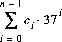
using int arithmetic.
- If , then the hashcode is computed as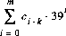
using int arithmetic, where  and 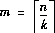, sampling only eight or nine characters of the string.
and 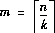, sampling only eight or nine characters of the string.
Overrides the hashCode method of Object (§20.1.4).
20.12.11 public int length()
The length of the sequence of characters represented by this String object is
returned.
20.12.12 public char charAt(int index)
throws IndexOutOfBoundsException
This method returns the character indicated by the index argument within the
sequence of characters represented by this String. The first character of the
sequence is at index 0, the next at index 1, and so on, as for array indexing. If the
index argument is negative or not less than the length (§20.12.11) of this string,
then an IndexOutOfBoundsException is thrown.
20.12.13 public void getChars(int srcBegin, int srcEnd,
char dst[], int dstBegin)
throws NullPointerException,
IndexOutOfBoundsException
Characters are copied from this String object into the destination character array
dst. The first character to be copied is at index srcBegin; the last character to be
copied is at index srcEnd-1 (thus the total number of characters to be copied is
srcEnd-srcBegin). The characters are copied into the subarray of dst starting at
index dstBegin and ending at index dstbegin+(srcEnd-srcBegin)-1.
If dst is null, then a NullPointerException is thrown.
An IndexOutOfBoundsException is thrown if any of the following is true:
srcBegin is negative
srcBegin is greater than srcEnd
srcEnd is greater than the length of this String
dstBegin is negative
dstBegin+(srcEnd-srcBegin) is larger than dst.length
20.12.14 public void getBytes(int srcBegin, int srcEnd,
byte dst[], int dstBegin)
throws NullPointerException,
IndexOutOfBoundsException
Characters are copied from this String object into the destination byte array dst.
Each byte receives only the eight low-order bits of the corresponding character.
The eight high-order bits of each character are not copied and do not participate in
the transfer in any way. The first character to be copied is at index srcBegin; the
last character to be copied is at index srcEnd-1 (thus the total number of characters to be copied is srcEnd-srcBegin). The characters, converted to bytes, are
copied into the subarray of dst starting at index dstBegin and ending at index
dstbegin+(srcEnd-srcBegin)-1.
If dst is null, then a NullPointerException is thrown.
An IndexOutOfBoundsException is thrown if any of the following is true:
srcBegin is negative
srcBegin is greater than srcEnd
srcEnd is greater than the length of this String
dstBegin is negative
dstBegin+(srcEnd-srcBegin) is larger than dst.length
20.12.15 public char[] toCharArray()
A new character array is created and returned. The length of the array is equal to
the length (§20.12.11) of this String object. The array is initialized to contain the
character sequence represented by this String object.
20.12.16 public boolean equalsIgnoreCase(String anotherString)
The result is true if and only if the argument is not null and is a String object
that represents the same sequence of characters as this String object, where case
is ignored.
Two characters are considered the same, ignoring case, if at least one of the following is true:
- The two characters are the same (as compared by the
== operator).
- Applying the method
Character.toUppercase (§20.5.21) to each character produces the same result.
- Applying the method
Character.toLowercase (§20.5.20) to each character produces the same result.
Two sequences of characters are the same, ignoring case, if the sequences have the same length and corresponding characters are the same, ignoring case.
See also the method equals (§20.12.9).
20.12.17 public int compareTo(String anotherString)
throws NullPointerException
The character sequence represented by this String object is compared lexicographically to the character sequence represented by the argument string. The
result is a negative integer if this String object lexicographically precedes the
argument string. The result is a positive integer if this String object lexicographically follows the argument string. The result is zero if the strings are equal; compareTo returns 0 exactly when the equals method (§20.12.9) would return true.
If anotherString is null, then a NullPointerException is thrown.
This is the definition of lexicographic ordering. If two strings are different, then either they have different characters at some index that is a valid index for both strings, or their lengths are different, or both. If they have different characters at one or more index positions, let k be the smallest such index; then the string whose character at position k has the smaller value, as determined by using the < operator, lexicographically precedes the other string. In this case, compareTo returns the difference of the two character values at position k in the two strings- that is, the value:
this.charAt(k)-anotherString.charAt(k)
If there is no index position at which they differ, then the shorter string lexicographically precedes the longer string. In this case, compareTo returns the difference of the lengths of the strings-that is, the value:
this.length()-anotherString.length()
20.12.18 public boolean regionMatches(int toffset,
String other, int ooffset, int len)
throws NullPointerException
A substring of this String object is compared to a substring of the argument
other. The result is true if these substrings represent identical character
sequences. The substring of this String object to be compared begins at index
toffset and has length len. The substring of other to be compared begins at
index ooffset and has length len. The result is false if and only if at least one
of the following is true:
toffset is negative.
ooffset is negative.
toffset+len is greater than the length of this String object.
ooffset+len is greater than the length of the other argument.
- There is some nonnegative integer k less than
len such that:
this.charAt(toffset+k) != other.charAt(ooffset+k)
If other is null, then a NullPointerException is thrown.
20.12.19 public boolean regionMatches(boolean ignoreCase,
int toffset, String other, int ooffset, int len)
throws NullPointerException
A substring of this String object is compared to a substring of the argument
other. The result is true if these substrings represent character sequences that
are the same, ignoring case if and only if ignoreCase is true. The substring of
this String object to be compared begins at index toffset and has length len.
The substring of other to be compared begins at index ooffset and has length
len. The result is false if and only if at least one of the following is true:
toffset is negative.
ooffset is negative.
toffset+len is greater than the length of this String object.
ooffset+len is greater than the length of the other argument.
- There is some nonnegative integer k less than
len such that:
this.charAt(toffset+k) != other.charAt(ooffset+k)
ignoreCase is true and there is some nonnegative integer k less than len such that:
Character.toLowerCase(this.charAt(toffset+k)) !=
Character.toLowerCase(other.charAt(ooffset+k))
Character.toUpperCase(this.charAt(toffset+k)) !=
Character.toUpperCase(other.charAt(ooffset+k))
If other is null, then a NullPointerException is thrown.
20.12.20 public boolean startsWith(String prefix)
throws NullPointerException
The result is true if and only if the character sequence represented by the argument is a prefix of the character sequence represented by this String object.
If prefix is null, a NullPointerException is thrown.
Note that the result will be true if the argument is an empty string or is equal to this String object as determined by the equals method (§20.12.9).
20.12.21 public boolean startsWith(String prefix, int toffset)
throws NullPointerException
The result is true if and only if the character sequence represented by the argument is a prefix of the substring of this String object starting at index toffset.
If prefix is null, then a NullPointerException is thrown.
The result is false if toffset is negative or greater than the length of this String object; otherwise, the result is the same as the result of the expression
this.subString(toffset).startsWith(prefix)
20.12.22 public boolean endsWith(String suffix)
throws NullPointerException
The result is true if and only if the character sequence represented by the argument is a suffix of the character sequence represented by this String object.
If suffix is null, then a NullPointerException is thrown.
Note that the result will be true if the argument is an empty string or is equal to this String object as determined by the equals method (§20.12.9).
20.12.23 public int indexOf(int ch)
If a character with value ch occurs in the character sequence represented by this
String object, then the index of the first such occurrence is returned-that is, the
smallest value k such that:
this.charAt(k) == ch
is true. If no such character occurs in this string, then -1 is returned.
20.12.24 public int indexOf(int ch, int fromIndex)
If a character with value ch occurs in the character sequence represented by this
String object at an index no smaller than fromIndex, then the index of the first
such occurrence is returned-that is, the smallest value k such that:
(this.charAt(k) == ch) && (k >= fromIndex)
is true. If no such character occurs in this string at or after position fromIndex, then -1 is returned.
There is no restriction on the value of fromIndex. If it is negative, it has the same effect as if it were zero: this entire string may be searched. If it is greater than the length of this string, it has the same effect as if it were equal to the length of this string: -1 is returned.
20.12.25 public int indexOf(String str)
throws NullPointerException
If the string str occurs as a substring of this String object, then the index of the
first character of the first such substring is returned-that is, the smallest value k
such that:
this.startsWith(str, k)
is true. If str does not occur as a substring of this string, then -1 is returned.
If str is null, a NullPointerException is thrown.
20.12.26 public int indexOf(String str, int fromIndex)
throws NullPointerException
If the string str occurs as a substring of this String object starting at an index no
smaller than fromIndex, then the index of the first character of the first such substring is returned-that is, the smallest value k such that:
this.startsWith(str, k) && (k >= fromIndex)
is true. If str does not occur as a substring of this string at or after position fromIndex, then -1 is returned.
There is no restriction on the value of fromIndex. If it is negative, it has the same effect as if it were zero: this entire string may be searched. If it is greater than the length of this string, it has the same effect as if it were equal to the length of this string: -1 is returned.
If str is null, a NullPointerException is thrown.
20.12.27 public int lastIndexOf(int ch)
If a character with value ch occurs in the character sequence represented by this
String object, then the index of the last such occurrence is returned-that is, the
largest value k such that:
this.charAt(k) == ch
is true. If no such character occurs in this string, then -1 is returned.
20.12.28 public int lastIndexOf(int ch, int fromIndex)
If a character with value ch occurs in the character sequence represented by this
String object at an index no larger than fromIndex, then the index of the last
such occurrence is returned-that is, the largest value k such that:
(this.charAt(k) == ch) && (k <= fromIndex)
is true. If no such character occurs in this string at or before position fromIndex, then -1 is returned.
There is no restriction on the value of fromIndex. If it is greater than or equal to the length of this string, it has the same effect as if it were equal to one less than the length of this string: this entire string may be searched. If it is negative, it has the same effect as if it were -1: -1 is returned.
20.12.29 public int lastIndexOf(String str)
throws NullPointerException
If the string str occurs as a substring of this String object, then the index of the
first character of the last such substring is returned-that is, the largest value k
such that:
this.startsWith(str, k)
is true. If str does not occur as a substring of this string, then -1 is returned.
If str is null, a NullPointerException is thrown.
20.12.30 public int lastIndexOf(String str, int fromIndex)
throws NullPointerException
If the string str occurs as a substring of this String object starting at an index no
larger than fromIndex, then the index of the first character of the last such substring is returned-that is, the largest value k such that:
this.startsWith(str, k) && (k <= fromIndex)
is true. If str does not occur as a substring of this string at or before position fromIndex, then -1 is returned.
There is no restriction on the value of fromIndex. If it is greater than the length of this string, it has the same effect as if it were equal to the length of this string: this entire string may be searched. If it is negative, it has the same effect as if it were -1: -1 is returned.
If str is null, a NullPointerException is thrown.
20.12.31 public String substring(int beginIndex)
throws IndexOutOfBoundsException
The result is a newly created String object that represents a subsequence of the
character sequence represented by this String object; this subsequence begins
with the character at position beginIndex and extends to the end of the character
sequence.
If beginIndex is negative or larger than the length of this String object, then an IndexOutOfBoundsException is thrown.
Examples:
"unhappy".substring(2) returns "happy"
"Harbison".substring(3) returns "bison"
"emptiness".substring(9) returns "" (an empty string)
20.12.32 public String substring(int beginIndex, int endIndex)
throws IndexOutOfBoundsException
The result is a newly created String object that represents a subsequence of the
character sequence represented by this String object; this subsequence begins
with the character at position beginIndex and ends with the character at position
endIndex-1. Thus, the length of the subsequence is endIndex-beginIndex.
If beginIndex is negative, or endIndex is larger than the length of this String object, or beginIndex is larger than endIndex, then this method throws an IndexOutOfBoundsException.
Examples:
"hamburger".substring(4, 8) returns "urge"
"smiles".substring(1, 5) returns "mile"
20.12.33 public String concat(String str)
throws NullPointerException
If the length of the argument string is zero, then a reference to this String object
is returned. Otherwise, a new String object is created, representing a character
sequence that is the concatenation of the character sequence represented by this
String object and the character sequence represented by the argument string.
Examples:
"cares".concat("s") returns "caress"
"to".concat("get").concat("her") returns "together"
If str is null, a NullPointerException is thrown.
20.12.34 public String replace(char oldChar, char newChar)
If the character oldChar does not occur in the character sequence represented by
this String object, then a reference to this String object is returned. Otherwise,
a new String object is created that represents a character sequence identical to
the character sequence represented by this String object, except that every occurrence of oldChar is replaced by an occurrence of newChar.
Examples:
"mesquite in your cellar".replace('e', 'o')
returns "mosquito in your collar"
"the war of baronets".replace('r', 'y')
returns "the way of bayonets"
"sparring with a purple porpoise".replace('p', 't')
returns "starring with a turtle tortoise"
"JonL".replace('q', 'x') returns "JonL" (no change)
20.12.35 public String toLowerCase()
If this String object does not contain any character that is mapped to a different
character by the method Character.toLowerCase (§20.5.20), then a reference
to this String object is returned. Otherwise, this method creates a new String
object that represents a character sequence identical in length to the character
sequence represented by this String object, with every character equal to the
result of applying the method Character.toLowerCase to the corresponding
character of this String object.
Examples:
"French Fries".toLowerCase() returns "french fries"
"


 ".toLowerCase() returns "
".toLowerCase() returns "


 "
"
20.12.36 public String toUpperCase()
If this String object does not contain any character that is mapped to a different
character by the method Character.toUpperCase (§20.5.21), then a reference
to this String object is returned. Otherwise, this method creates a new String
object representing a character sequence identical in length to the character
sequence represented by this String object and with every character equal to the
result of applying the method Character.toUpperCase to the corresponding
character of this String object.
Examples:
"Fahrvergnügen".toUpperCase() returns "FAHRVERGNÜGEN"
"Visit Ljubinje!".toUpperCase() returns "VISIT LJUBINJE!"
20.12.37 public String trim()
If this String object represents an empty character sequence, or the first and last
characters of character sequence represented by this String object both have
codes greater than \u0020 (the space character), then a reference to this String
object is returned.
Otherwise, if there is no character with a code greater than \u0020 in the string, then a new String object representing an empty string is created and returned.
Otherwise, let k be the index of the first character in the string whose code is greater than \u0020, and let m be the index of the last character in the string whose code is greater than \u0020. A new String object is created, representing the substring of this string that begins with the character at index k and ends with the character at index m-that is, the result of this.substring(k, m+1).
This method may be used to trim whitespace (§20.5.19) from the beginning and end of a string; in fact, it trims all ASCII control characters as well.
20.12.38 public static String valueOf(Object obj)
If the argument is null, then a string equal to "null" is returned. Otherwise, the
value of obj.toString() is returned. See the toString method (§20.1.2).
20.12.39 public static String valueOf(char[] data)
throws NullPointerException
A string is created and returned. The string represents the sequence of characters
currently contained in the character array argument. The contents of the character
array are copied; subsequent modification of the character array does not affect
the newly created string.
20.12.40 public static String valueOf(char[] data,
int offset, int count)
throws NullPointerException,
IndexOutOfBoundsException
A string is created and returned. The string represents the sequence of characters
currently contained in a subarray of the character array argument. The offset
argument is the index of the first character of the subarray and the count argument specifies the length of the subarray. The contents of the subarray are copied;
subsequent modification of the character array does not affect the newly created
string.
If data is null, then a NullPointerException is thrown.
If offset is negative, or count is negative, or offset+count is larger than data.length, then an IndexOutOfBoundsException is thrown.
20.12.41 public static String valueOf(boolean b)
A string representation of b is returned.
If the argument is true, the string "true" is returned.
If the argument is false, the string "false" is returned.
20.12.42 public static String valueOf(char c)
A string is created and returned. The string contains one character, equal to c.
20.12.43 public static String valueOf(int i)
A string is created and returned. The string is computed exactly as if by the
method Integer.toString of one argument (§20.7.12).
20.12.44 public static String valueOf(long l)
A string is created and returned. The string is computed exactly as if by the
method Long.toString of one argument (§20.8.12).
20.12.45 public static String valueOf(float f)
A string is created and returned. The string is computed exactly as if by the
method Float.toString of one argument (§20.9.16).
20.12.46 public static String valueOf(double d)
A string is created and returned. The string is computed exactly as if by the
method Double.toString of one argument (§20.10.15).
20.12.47 public String intern()
A pool of strings, initially empty, is maintained privately by the class String.
When the intern method is invoked, if the pool already contains a string equal to this String object as determined by the equals method (§20.12.9), then the string from the pool is returned. Otherwise, this String object is added to the pool and a reference to this String object is returned.
It follows that for any two strings s and t, s.intern() == t.intern() is true if and only if s.equals(t) is true.
All literal strings and string-valued constant expressions are interned (§3.10.5).
20.13 The Class java.lang.StringBuffer
A string buffer is like a String (§20.12), but can be modified. At any point in
time it contains some particular sequence of characters, but the length and content
of the sequence can be changed through certain method calls.
public class StringBuffer {
public StringBuffer();
public StringBuffer(int length)
throws NegativeArraySizeException;
public StringBuffer(String str);
public String toString();
public int length();
public void setLength(int newLength)
throws IndexOutOfBoundsException;
public int capacity();
public void ensureCapacity(int minimumCapacity);
public char charAt(int index)
throws IndexOutOfBoundsException;
public void setCharAt(int index, char ch)
throws IndexOutOfBoundsException;
public void getChars(int srcBegin, int srcEnd,
char[] dst, int dstBegin)
throws NullPointerException, IndexOutOfBoundsException;
public StringBuffer append(Object obj);
public StringBuffer append(String str);
public StringBuffer append(char[] str)
throws NullPointerException;
public StringBuffer append(char[] str, int offset, int len)
throws NullPointerException, IndexOutOfBoundsException;
public StringBuffer append(boolean b);
public StringBuffer append(char c);
public StringBuffer append(int i);
public StringBuffer append(long l);
public StringBuffer append(float f);
public StringBuffer append(double d);
public StringBuffer insert(int offset, Object obj)
throws IndexOutOfBoundsException;
public StringBuffer insert(int offset, String str)
throws IndexOutOfBoundsException;
public StringBuffer insert(int offset, char[] str)
throws NullPointerException, IndexOutOfBoundsException;
public StringBuffer insert(int offset, boolean b)
throws IndexOutOfBoundsException;
public StringBuffer insert(int offset, char c)
throws IndexOutOfBoundsException;
public StringBuffer insert(int offset, int i)
throws IndexOutOfBoundsException;
public StringBuffer insert(int offset, long l)
throws IndexOutOfBoundsException;
public StringBuffer insert(int offset, float f)
throws IndexOutOfBoundsException;
public StringBuffer insert(int offset, double d)
throws IndexOutOfBoundsException;
public StringBuffer reverse();
}
A string buffer has a capacity. As long as the length of the character sequence contained in the string buffer does not exceed the capacity, it is not necessary to create a new internal buffer array.
String buffers are safe for use by multiple threads. The methods are synchronized where necessary so that all the operations on any particular instance behave as if they occur in some serial order that is consistent with the order of the method calls made by each of the individual threads involved.
String buffers can be used by a compiler to implement the binary string concatenation operator + (§15.17.1). For example, suppose k has type int and a has type Object. Then the expression:
k + "/" + a
can be compiled as if it were the expression:
new StringBuffer().append(k).append("/").
append(a).toString()
which creates a new string buffer (initially empty), appends the string representation of each operand to the string buffer in turn, and then converts the contents of the string buffer to a string. Overall, this avoids creating many temporary strings.
The principal operations on a StringBuffer are the append and insert methods, which are overloaded so as to accept data of any type. Each effectively converts a given datum to a string and then adds the characters of that string to the contents of the string buffer. The append method always adds these characters at the end of the buffer; the insert method adds the characters at a specified point.
For example, if z refers to a string buffer object whose current contents are the characters "start", then the method call z.append("le") would alter the string buffer to contain the characters "startle", but z.insert(4, "le") would alter the string buffer to contain the characters "starlet".
In general, if sb refers to an instance of a StringBuffer, then sb.append(x) has the same effect as sb.insert(sb.length(), x).
20.13.1 public StringBuffer()
This constructor initializes a newly created StringBuffer object so that it initially represents an empty character sequence and has capacity 16.
20.13.2 public StringBuffer(int length)
throws NegativeArraySizeException
This constructor initializes a newly created StringBuffer object so that it initially represents an empty character sequence, but has the capacity specified by
the argument.
If the argument is negative, a NegativeArraySizeException is thrown.
20.13.3 public StringBuffer(String str)
This constructor initializes a newly created StringBuffer object so that it represents the same sequence of characters as the argument; in other words, the initial
contents of the string buffer is a copy of the argument string. The initial capacity
of the string buffer is 16 plus the length of the argument string.
20.13.4 public String toString()
A new String object is created and initialized to contain the character sequence
currently represented by the string buffer; the new String is then returned. Any
subsequent changes to the string buffer do not affect the contents of the returned
string.
Implementation advice: This method can be coded so as to create a new String object without allocating new memory to hold a copy of the character sequence. Instead, the string can share the memory used by the string buffer. Any subsequent operation that alters the content or capacity of the string buffer must then make a copy of the internal buffer at that time. This strategy is effective for reducing the amount of memory allocated by a string concatenation operation (§15.17.1) when it is implemented using a string buffer.
Overrides the toString method of Object (§20.1.2).
20.13.5 public int length()
This method returns the length of the sequence of characters currently represented
by this StringBuffer object.
20.13.6 public int capacity()
The current capacity of this StringBuffer object is returned.
20.13.7 public void ensureCapacity(int minimumCapacity)
If the current capacity of this StringBuffer object is less than the argument, then
a new internal buffer is created with greater capacity. The new capacity will be the
larger of:
- the
minimumCapacity argument
- twice the old capacity, plus
2
If the minimumCapacity argument is nonpositive, this method takes no action and simply returns.
20.13.8 public void setLength(int newLength)
throws IndexOutOfBoundsException
This string buffer is altered to represent a new character sequence whose length is
specified by the argument. For every nonnegative index k less than newLength,
the character at index k in the new character sequence is the same as the character
at index k in the old sequence if k is less than the length of the old character
sequence; otherwise, it is the null character '\u0000'. This method also calls the
ensureCapacity method (§20.13.7) with argument newLength.
If the argument is negative, an IndexOutOfBoundsException is thrown.
20.13.9 public char charAt(int index)
throws IndexOutOfBoundsException
The specified character of the sequence currently represented by the string buffer,
as indicated by the index argument, is returned. The first character of the
sequence is at index 0, the next at index 1, and so on, as for array indexing.
If the index argument is negative or not less than the current length (§20.13.5) of the string buffer, an IndexOutOfBoundsException is thrown.
20.13.10 public void setCharAt(int index, char ch)
throws IndexOutOfBoundsException
The string buffer is altered to represent a new character sequence that is identical
to the old character sequence, except that it contains the character ch at position
index.
If the index argument is negative or not less than the current length (§20.13.5) of the string buffer, an IndexOutOfBoundsException is thrown.
20.13.11 public void getChars(int srcBegin, int srcEnd,
char[] dst, int dstBegin)
throws NullPointerException,
IndexOutOfBoundsException
Characters are copied from this StringBuffer object into the destination array
dst. The first character to be copied is at index srcBegin; the last character to be
copied is at index srcEnd-1 (thus, the total number of characters to be copied is
srcEnd-srcBegin). The characters are copied into the subarray of dst starting at
index dstBegin and ending at index dstbegin+(srcEnd-srcBegin)-1.
If dst is null, then a NullPointerException is thrown.
Otherwise, if any of the following is true, an IndexOutOfBoundsException is thrown and the destination is not modified:
- The
srcBegin argument is negative.
- The
srcBegin argument is greater than the srcEnd argument.
srcEnd is greater than this.length(), the current length of this string buffer.
dstBegin+srcEnd-srcBegin is greater than dst.length.
20.13.12 public StringBuffer append(Object obj)
The argument is converted to a string as if by the method String.valueOf
(§20.12.38) and the characters of that string are then appended (§20.13.13) to this
StringBuffer object. A reference to this StringBuffer object is returned.
20.13.13 public StringBuffer append(String str)
The characters of the String argument are appended, in order, to the contents of
this string buffer, increasing the length of this string buffer by the length of the
argument. If str is null, then the four characters "null" are appended to this
string buffer. The method ensureCapacity (§20.13.7) is first called with this new
string buffer length as its argument. A reference to this StringBuffer object is
returned.
Let n be the length of the old character sequence, the one contained in the string buffer just prior to execution of the append method. Then the character at index k in the new character sequence is equal to the character at index k in the old character sequence, if k is less than n; otherwise, it is equal to the character at index k-n in the argument str.
20.13.14 public StringBuffer append(char[] str)
throws NullPointerException
The characters of the array argument are appended, in order, to the contents of this
string buffer, increasing the length of this string buffer by the length of the argument. The method ensureCapacity (§20.13.7) is first called with this new string
buffer length as its argument. A reference to this StringBuffer object is
returned.
The overall effect is exactly as if the argument were converted to a string by the method String.valueOf (§20.12.39) and the characters of that string were then appended (§20.13.13) to this StringBuffer object.
20.13.15 public StringBuffer append(char[] str,
int offset, int len)
throws NullPointerException,
IndexOutOfBoundsException
Characters of the character array str, starting at index offset, are appended, in
order, to the contents of this string buffer, increasing the length of this string
buffer by len. The method ensureCapacity (§20.13.7) is first called with this
new string buffer length as its argument. A reference to this StringBuffer object
is returned.
The overall effect is exactly as if the arguments were converted to a string by the method String.valueOf of three arguments (§20.12.40) and the characters of that string were then appended (§20.13.13) to this StringBuffer object.
20.13.16 public StringBuffer append(boolean b)
The argument is converted to a string as if by the method String.valueOf
(§20.12.41) and the characters of that string are then appended (§20.13.13) to this
StringBuffer object. A reference to this StringBuffer object is returned.
20.13.17 public StringBuffer append(char c)
The argument is appended to the contents of this string buffer, increasing the
length of this string buffer by 1. The method ensureCapacity (§20.13.7) is first
called with this new string buffer length as its argument. A reference to this
StringBuffer object is returned.
The overall effect is exactly as if the argument were converted to a string by the method String.valueOf (§20.12.42) and the character in that string were then appended (§20.13.13) to this StringBuffer object.
20.13.18 public StringBuffer append(int i)
The argument is converted to a string as if by the method String.valueOf
(§20.12.43) and the characters of that string are then appended (§20.13.13) to this
StringBuffer object. A reference to this StringBuffer object is returned.
20.13.19 public StringBuffer append(long l)
The argument is converted to a string as if by the method String.valueOf
(§20.12.44) and the characters of that string are then appended (§20.13.13) to this
StringBuffer object. A reference to this StringBuffer object is returned.
20.13.20 public StringBuffer append(float f)
The argument is converted to a string as if by the method String.valueOf
(§20.12.45) and the characters of that string are then appended (§20.13.13) to this
StringBuffer object. A reference to this StringBuffer object is returned.
20.13.21 public StringBuffer append(double d)
The argument is converted to a string as if by the method String.valueOf
(§20.12.46) and the characters of that string are then appended (§20.13.13) to this
StringBuffer object. A reference to this StringBuffer object is returned.
20.13.22 public StringBuffer insert(int offset, Object obj)
throws IndexOutOfBoundsException
The argument is converted to a string as if by the method String.valueOf
(§20.12.38) and the characters of that string are then inserted (§20.13.23) into this
StringBuffer object at the position indicated by offset. A reference to this
StringBuffer object is returned.
20.13.23 public StringBuffer insert(int offset, String str)
throws IndexOutOfBoundsException
The characters of the String argument are inserted, in order, into the string buffer
at the position indicated by offset, moving up any characters originally above
that position and increasing the length of the string buffer by the length of the
argument. If str is null, then the four characters "null" are inserted into this
string buffer. The method ensureCapacity (§20.13.7) is first called with this new
string buffer length as its argument. A reference to this StringBuffer object is
returned.
The character at index k in the new character sequence is equal to:
- the character at index k in the old character sequence, if k is less than
offset
- the character at index k
-offset in the argument str, if k is not less than offset but is less than offset+str.length()
- the character at index k
-str.length() in the old character sequence, if k is not less than offset+str.length()
20.13.24 public StringBuffer insert(int offset, char[] str)
throws NullPointerException,
IndexOutOfBoundsException
The characters of the array argument, taken in order, are inserted into this string
buffer, increasing the length of the string buffer by the length of the argument. The
method ensureCapacity (§20.13.7) is first called with this new string buffer
length as its argument. A reference to this StringBuffer object is returned.
The overall effect is exactly as if the argument were converted to a string by the method String.valueOf (§20.12.39) and the characters of that string were then inserted (§20.13.23) into this StringBuffer object at the position indicated by offset.
Note that while the StringBuffer class provides an append method that takes an offset, a character array, and two other arguments (§20.13.15), it does not currently provide an insert method that takes an offset, a character array, and two other arguments.
20.13.25 public StringBuffer insert(int offset, boolean b)
throws IndexOutOfBoundsException
The argument is converted to a string as if by the method String.valueOf
(§20.12.41) and the characters of that string are then inserted (§20.13.23) into this
StringBuffer object at the position indicated by offset. A reference to this
StringBuffer object is returned.
20.13.26 public StringBuffer insert(int offset, char c)
throws IndexOutOfBoundsException
The argument is inserted into the contents of this string buffer at the position indicated by offset, increasing the length of this string buffer by 1. The method
ensureCapacity (§20.13.7) is first called with this new string buffer length as its
argument. A reference to this StringBuffer object is returned.
The overall effect is exactly as if the argument were converted to a string by the method String.valueOf (§20.12.42) and the character in that string were then inserted (§20.13.23) into this StringBuffer object at the position indicated by offset.
20.13.27 public StringBuffer insert(int offset, int i)
throws IndexOutOfBoundsException
The argument is converted to a string as if by the method String.valueOf
(§20.12.43) and the characters of that string are then inserted (§20.13.23) into this
StringBuffer object at the position indicated by offset. A reference to this
StringBuffer object is returned.
20.13.28 public StringBuffer insert(int offset, long l)
throws IndexOutOfBoundsException
The argument is converted to a string as if by the method String.valueOf
(§20.12.44) and the characters of that string are inserted (§20.13.23) into this
StringBuffer object at the position indicated by offset. A reference to this
StringBuffer object is returned.
20.13.29 public StringBuffer insert(int offset, float f)
throws IndexOutOfBoundsException
The argument is converted to a string as if by the method String.valueOf
(§20.12.45) and the characters of that string are then inserted (§20.13.23) into this
StringBuffer object at the position indicated by offset. A reference to this
StringBuffer object is returned.
20.13.30 public StringBuffer insert(int offset, double d)
throws IndexOutOfBoundsException
The argument is converted to a string as if by the method String.valueOf
(§20.12.46) and the characters of that string are then inserted (§20.13.23) into this
StringBuffer object at the position indicated by offset. A reference to this
StringBuffer object is returned.
20.13.31 public StringBuffer reverse()
The character sequence contained in this StringBuffer object is replaced by the
reverse of that sequence. A reference to this StringBuffer object is returned.
Let n be the length of the old character sequence, the one contained in the string buffer just prior to execution of the reverse method. Then the character at index k in the new character sequence is equal to the character at index n-k-1 in the old character sequence.
20.14 The Class java.lang.ClassLoader
A class loader is an object that is responsible for loading classes. Given the name
of a class, it should attempt to locate or generate data that constitutes a definition
for the class. A typical strategy is to transform the name into a file name and then
read a "class file" of that name from a file system.
Every Class object contains a reference to the ClassLoader that defined it (§20.3.7). Whenever executable Java code needs to use a class that has not yet been loaded, the loadClass method is invoked for the class loader of the class containing the code in question.
Class objects for array classes are not created by class loaders, but are created automatically as required by the Java runtime. The class loader for an array class, as returned by the getClassLoader method of class Class (§20.3.7), is the same as the class loader for its element type; if the element type is a primitive type, then the array class has no class loader.
Class loaders may typically be used by security managers (§20.17) to indicate security domains: two classes may considered to be "friendly" or "related" to each other only if they were defined by the same class loader.
public abstract class ClassLoader {
protected ClassLoader() throws SecurityException;
protected abstract Class loadClass(String name,
boolean resolve)
throws ClassNotFoundException;
protected final Class defineClass(byte data[],
int offset, int length)
throws NullPointerException, IndexOutOfBoundsException,
ClassFormatError;
protected final void resolveClass(Class c)
throws NullPointerException;
protected final Class findSystemClass(String name)
throws ClassNotFoundException;
}
20.14.1 protected ClassLoader() throws SecurityException
This constructor is invoked for every newly created class loader. Because the class
ClassLoader is abstract, it is not possible to create a new instance of the class
ClassLoader itself; however, every constructor for a subclass of ClassLoader
necessarily invokes this constructor, explicitly or implicitly, directly or indirectly.
All this constructor does is to enforce a security check: if there is a security manager, its checkCreateClassLoader method (§20.17.10) is called.
20.14.2 protected abstract Class loadClass(String name,
boolean link)
throws ClassNotFoundException
Every subclass of ClassLoader that is not itself abstract must provide an implementation of the method loadClass.
The general contract of loadClass is that, given the name of a class, it either returns the Class object for the class or throws a ClassNotFoundException.
If a Class object is to be returned and link is true, then the Class object should be linked (§12.3, §20.14.4) before it is returned.
In most cases, it is wise for a subclass of ClassLoader (§20.14) to implement the loadClass method as a synchronized method.
20.14.3 protected final Class defineClass(byte data[],
int offset, int length)
throws NullPointerException, IndexOutOfBoundsException, ClassFormatError
This method may be used by a class loader to define a new class.
The bytes in the array data in positions offset through offset+length-1 should have the format of a valid class file as defined by the Java Virtual Machine Specification.
If data is null, then a NullPointerException is thrown.
An IndexOutOfBoundsException is thrown if any of the following are true:
offset is negative
length is negative
offset+length is greater than data.length
If the indicated bytes of data do not constitute a valid class definition, then a ClassFormatError is thrown. Otherwise, this method creates and returns a Class object as described by the data bytes
20.14.4 protected final void resolveClass(Class c)
throws NullPointerException
This (misleadingly named) method may be used by a class loader to link (§12.3,
§20.14.4) a class.
If c is null, then a NullPointerException is thrown.
If the Class object c has already been linked, then this method simply returns.
Otherwise, the class is linked as described in §12.3.
20.14.5 protected final Class findSystemClass(String name)
throws ClassNotFoundException
This method may be used by a class loader to locate a class that has no class
loader. This includes built-in classes such as java.lang.Object, as well as
classes that the host implementation may keep in, for example, a local file system.
Given the name of a class, this method, like the loadClass method, either returns the Class object for the class or throws a ClassNotFoundException.
20.15 The Class java.lang.Process
The method exec (§20.16.3) of class Runtime returns a reference to a Process
object. The class Process provides methods for performing input from the process, performing output to the process, waiting for the process to complete, checking the exit status of the process, and destroying (killing) the process.
Dropping the last reference to a Process instance, thus allowing the Process object to be reclaimed, does not automatically kill the associated process.
There is no requirement that a process represented by a Process object execute asynchronously or concurrently with respect to the Java process that owns the Process object.
public abstract class Process {
public abstract OutputStream getOutputStream();
public abstract InputStream getInputStream();
public abstract InputStream getErrorStream();
public abstract int waitFor()
throws InterruptedException;
public abstract int exitValue()
throws IllegalThreadStateException;
public abstract void destroy();
}
20.15.1 public abstract OutputStream getOutputStream()
This method returns an OutputStream. Output to the stream is piped into the
standard input stream of the process represented by this Process object.
Implementation note: It is a good idea for the output stream to be buffered.
20.15.2 public abstract InputStream getInputStream()
This method returns an InputStream. The stream obtains data piped from the
standard output stream of the process represented by this Process object.
Implementation note: It is a good idea for the input stream to be buffered.
20.15.3 public abstract InputStream getErrorStream()
This method returns an InputStream. The stream obtains data piped from the
error output stream of the process represented by this Process object.
Implementation note: It is a good idea for the input stream to be buffered.
20.15.4 public abstract int waitFor()
throws InterruptedException
This method causes the current thread to wait, if necessary, until the process represented by this Process object has terminated. Then the exit value of the process
is returned. By convention, the value 0 indicates normal termination.
If the current thread is interrupted (§20.20.31) by another thread while it is waiting, then the wait is ended and an InterruptedException is thrown.
20.15.5 public abstract int exitValue()
throws IllegalThreadStateException
If the process represented by this Process object has not yet terminated, then an
IllegalThreadStateException is thrown. Otherwise, the exit value of the process is returned. By convention, the value 0 indicates normal termination.
20.15.6 public abstract void destroy()
The process represented by this Process object is forcibly terminated.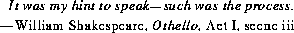
20.16 The Class java.lang.Runtime
public class Runtime {
public static Runtime getRuntime();
public void exit(int status) throws SecurityException;
public Process exec(String command) throws
IOException,SecurityException,IndexOutOfBoundsException;
public Process exec(String command, String envp[]) throws
IOException,SecurityException,IndexOutOfBoundsException;
public Process exec(String cmdarray[]) throws
IOException,SecurityException,IndexOutOfBoundsException;
public Process exec(String cmdarray[], String envp[]) throws
IOException,SecurityException,IndexOutOfBoundsException;
public long totalMemory();
public long freeMemory();
public void gc();
public void runFinalization();
public void traceInstructions(boolean on);
public void traceMethodCalls(boolean on);
public void load(String filename)
throws SecurityException, UnsatisfiedLinkError;
public void loadLibrary(String libname)
throws SecurityException, UnsatisfiedLinkError;
public InputStream getLocalizedInputStream(InputStream in);
public OutputStream
getLocalizedOutputStream(OutputStream out);
}
20.16.1 public static Runtime getRuntime()
This method returns the current Runtime object. Most of the methods of class
Runtime are instance methods and must be invoked with respect to the current
runtime object.
20.16.2 public void exit(int status)
throws SecurityException
First, if there is a security manager, its checkExit method (§20.17.13) is called
with the status value as its argument.
This method terminates the currently running Java Virtual Machine. The argument serves as a status code; by convention, a nonzero status code indicates abnormal termination.
This method never returns normally.
See also the method exit (§20.18.11) of class System, which is the conventional and convenient means of invoking this method.
20.16.3 public Process exec(String command)
throws IOException, SecurityException,
IndexOutOfBoundsException
The command argument is parsed into tokens and then executed as a command in a
separate process. The token parsing is done by a StringTokenizer (§21.10) created by the call:
new StringTokenizer(command)
with no further modification of the character categories.
This method behaves exactly as if it performs the call:
exec(command, null)
See §20.16.4.
20.16.4 public Process exec(String command, String envp[])
throws IOException, SecurityException,
IndexOutOfBoundsException
The command argument is parsed into tokens and then executed as a command in a
separate process with an environment specified by envp. The token parsing is
done by a StringTokenizer (§21.10) created by the call:
new StringTokenizer(command)
with no further modification of the character categories.
This method breaks the command string into tokens and creates a new array cmdarray containing the tokens in the order that they were produced by the string tokenizer; it then behaves exactly as if it performs the call:
exec(cmdarray, envp)
See §20.16.6.
20.16.5 public Process exec(String cmdarray[])
throws IOException, SecurityException,
NullPointerException, IndexOutOfBoundsException
The command specified by the tokens in cmdarray is executed as a command in a
separate process.
This method behaves exactly as if it performs the call:
exec(cmdarray, null)
See §20.16.6.
20.16.6 public Process exec(String cmdarray[], String envp[])
throws IOException, SecurityException,
NullPointerException, IndexOutOfBoundsException
First, if there is a security manager, its checkExec method (§20.17.14) is called
with the first component of the array cmdarray as its argument.
If cmdarray is null, a NullPointerException is thrown. If cmdarray is an empty array (has length 0), an IndexOutOfBoundsException is thrown.
Given an array of strings cmdarray, representing the tokens of a command line, and an array of strings envp, representing an "environment" that defines system properties, this method creates a new process in which to execute the specified command and returns a Process object (§20.15) representing the new process.
20.16.7 public long totalMemory()
The total amount of memory currently available for current and future created
objects, measured in bytes, is returned. The value returned by this method may
vary over time, depending on the host environment.
Note that the amount of memory required to hold an object of any given type may be implementation-dependent.
20.16.8 public long freeMemory()
An approximation to the total amount of memory currently available for future
created objects, measured in bytes, is returned. This value is always less than the
current value returned by the totalMemory method. Calling the gc method may
increase the value returned by freeMemory.
20.16.9 public void gc()
Calling this method suggests that the Java Virtual Machine expend effort toward
recycling discarded objects in order to make the memory they currently occupy
available for quick reuse. When control returns from the method call, the Java
Virtual Machine has made a best effort to recycle all discarded objects. (The name
gc stands for "garbage collector.")
The Java runtime system will perform this recycling process automatically as needed, in a separate thread, if the gc method is not invoked explicitly.
See also the method gc (§20.18.12) of class System, which is the conventional and convenient means of invoking this method.
20.16.10 public void runFinalization()
Calling this method suggests that the Java Virtual Machine expend effort toward
running the finalize methods of objects that have been found to be discarded
but whose finalize methods have not yet been run. When control returns from
the method call, the Java Virtual Machine has made a best effort to complete all
outstanding finalizations.
The Java runtime system will perform the finalization process automatically as needed, in a separate thread, if the runFinalization method is not invoked explicitly.
See also the method runFinalization (§20.18.13) of class System, which is the conventional and convenient means of invoking this method.
20.16.11 public void traceInstructions(boolean on)
Calling this method with argument true suggests that the Java Virtual Machine
emit debugging information for every instruction it executes. The format of this
information, and the file or other output stream to which it is emitted, depends on
the host environment.
Calling this method with argument false suggests that the Java Virtual Machine cease emitting per-instruction debugging information.
20.16.12 public void traceMethodCalls(boolean on)
Calling this method with argument true suggests that the Java Virtual Machine
emit debugging information for every method call it executes. The format of this
information, and the file or other output stream to which it is emitted, depends on
the host environment.
Calling this method with argument false suggests that the Java Virtual Machine cease emitting per-call debugging information.
20.16.13 public void load(String filename)
First, if there is a security manager, its checkLink method (§20.17.17) is called
with the filename as its argument.
This is similar to the method loadLibrary (§20.16.14), but accepts a general file name as an argument rather than just a library name, allowing any file of native code to be loaded.
See also the method load (§20.18.14) of class System, which is the conventional and convenient means of invoking this method.
20.16.14 public void loadLibrary(String libname)
First, if there is a security manager, its checkLink method (§20.17.17) is called
with the libname as its argument.
A file containing native code is loaded from the local file system from a place where library files are conventionally obtained. The details of this process are implementation-dependent.
See also the method loadLibrary (§20.18.15) of class System, which is the conventional and convenient means of invoking this method. If native methods are to be used in the implementation of a class, a standard strategy is to put the native code in a library file (call it LibFile) and then to put a static initializer:
static { System.loadLibrary("LibFile"); }
within the class declaration. When the class is loaded and initialized (§12.4), the
necessary native code implementation for the native methods will then be loaded
as well.
20.16.15 public InputStream
getLocalizedInputStream(InputStream in)
This method takes an InputStream (§22.3) and returns an InputStream equivalent to the argument in all respects except that it is localized: as data is read from
the stream, it is automatically converted from the local format to Unicode. If the
argument is already a localized stream, then it will be returned as the result.
20.16.16 public OutputStream
getLocalizedOutputStream(OutputStream out)
This method takes an OutputStream (§22.15) and returns an OutputStream
equivalent to the argument in all respects except that it is localized: as data is written to the stream, it is automatically converted from Unicode to the local format. If
the argument is already a localized stream, then it will be returned as the result.
20.17 The Class java.lang.SecurityManager
public abstract class SecurityManager {
protected boolean inCheck;
protected SecurityManager()
throws SecurityException;
protected Class[] getClassContext();
protected int classDepth(String name);
protected boolean inClass(String name);
protected ClassLoader currentClassLoader();
protected int classLoaderDepth();
protected boolean inClassLoader();
public boolean getInCheck();
public void checkCreateClassLoader()
throws SecurityException;
public void checkAccess(Thread t)
throws SecurityException;
public void checkAccess(ThreadGroup g)
throws SecurityException;
public void checkExit(int status)
throws SecurityException;
public void checkExec(String cmd)
throws SecurityException;
public void checkPropertiesAccess()
throws SecurityException;
public void checkPropertyAccess(String key)
throws SecurityException;
public void checkLink(String libname)
throws SecurityException;
public void checkRead(int fd)
throws SecurityException;
public void checkRead(String file)
throws SecurityException;
public void checkWrite(int fd)
throws SecurityException;
public void checkWrite(String file)
throws SecurityException;
public void checkDelete(String file)
throws SecurityException;
public void checkConnect(String host, int port)
throws SecurityException;
public void checkListen(int port)
throws SecurityException;
public void checkAccept(String host, int port)
throws SecurityException;
public void checkSetFactory()
throws SecurityException;
public boolean checkTopLevelWindow()
throws SecurityException;
public void checkPackageAccess(String packageName)
throws SecurityException;
public void checkPackageDefinition(String packageName)
throws SecurityException;
}
A running Java program may have a security manager, which is an instance of class SecurityManager. The current security manager is the one returned by the method invocation System.getSecurityManager() (§20.18.4).
The SecurityManager class contains a large number of methods whose names begin with "check". They are called by various methods throughout the Java libraries before those methods perform certain sensitive operations. The invocation of such a check method typically looks like this:
SecurityManager security = System.getSecurityManager();
if (security != null) {
security.checkXXX(arguments);
}
The security manager is thereby given an opportunity to prevent completion of the operation by throwing an exception. The usual convention is that a security manager checking routine simply returns if the operation is permitted, or throws a SecurityException if the operation is not permitted. In one case, namely checkTopLevelWindow (§20.17.27), the checking routine must return a boolean value to indicate one of two levels of permission.
20.17.1 protected boolean inCheck = false;
By convention, this field should be assigned the value true whenever a security
check is in progress. This matters when one of the checking routines needs to call
outside code to do its work. Outside code can then use the method getInCheck
(§20.17.9) to test the status of this flag.
20.17.2 protected SecurityManager()
throws SecurityException
This constructor checks to see whether a security manager has already been
installed (§20.18.5); if so, creation of another security manager is not permitted,
and so a SecurityException is thrown.
20.17.3 protected Class[] getClassContext()
This utility method for security managers scans the execution stack for the current
thread and returns an array with one component for each stack frame. The component at position 0 corresponds to the top of the stack. If a component is a Class
object, then the corresponding stack frame is for an invocation of a method of the
class represented by that Class object.
20.17.4 protected int classDepth(String name)
This utility method for security managers searches the execution stack for the current thread to find the most recently invoked method whose execution has not yet
completed and whose class has name as its fully qualified name. If such a method
is found, its distance from the top of the stack is returned as a nonnegative integer;
otherwise, -1 is returned.
20.17.5 protected boolean inClass(String name)
This utility method for security managers searches the execution stack for the current thread to find the most recently invoked method whose execution has not yet
completed and whose class has name as its fully qualified name. If such a method
is found, true is returned; otherwise, false is returned.
20.17.6 protected ClassLoader currentClassLoader()
This utility method for security managers searches the execution stack for the current thread to find the most recently invoked method whose execution has not yet
completed and whose class was created by a class loader (§20.14). If such a
method is found, a reference to the ClassLoader object for its class is returned;
otherwise, null is returned.
20.17.7 protected int classLoaderDepth()
This utility method for security managers searches the execution stack for the current thread to find the most recently invoked method whose execution has not yet
completed and whose class was created by a class loader (§20.14). If such a
method is found, its distance from the top of the stack is returned as a nonnegative
integer; otherwise, -1 is returned.
20.17.8 protected boolean inClassLoader()
This utility method for security managers searches the execution stack for the current thread to find the most recently invoked method whose execution has not yet
completed and whose class was created by a class loader (§20.14). If such a
method is found, true is returned; otherwise false is returned.
20.17.9 public boolean getInCheck()
The value of the inCheck field (§20.17.1) is returned.
20.17.10 public void checkCreateClassLoader()
throws SecurityException
The general contract of this method is that it should throw a SecurityException
if creation of a class loader is not permitted.
This method is invoked for the current security manager (§20.18.4) by the constructor for class ClassLoader (§20.14.1).
The checkCreateClassLoader method defined by class SecurityManager always throws a SecurityException. A subclass must override this method if a class loader creation operation is to be permitted with a security manager installed.
20.17.11 public void checkAccess(Thread t)
throws SecurityException
The general contract of this method is that it should throw a SecurityException
if an operation that would modify the thread t is not permitted.
This method is invoked for the current security manager (§20.18.4) by method checkAccess (§20.20.12) of class Thread.
The checkAccess method defined by class SecurityManager always throws a SecurityException. A subclass must override this method if a thread modification operation is to be permitted with a security manager installed.
20.17.12 public void checkAccess(ThreadGroup g)
throws SecurityException
The general contract of this method is that it should throw a SecurityException
if an operation that would modify the thread group g is not permitted.
This method is invoked for the current security manager (§20.18.4) by method checkAccess (§20.21.4) of class ThreadGroup.
The checkAccess method defined by class SecurityManager always throws a SecurityException. A subclass must override this method if a thread group modification operation is to be permitted with a security manager installed.
20.17.13 public void checkExit(int status)
throws SecurityException
The general contract of this method is that it should throw a SecurityException
if an exit operation that would terminate the running Java Virtual Machine is not
permitted.
This method is invoked for the current security manager (§20.18.4) by method exit (§20.16.2) of class Runtime.
The checkExit method defined by class SecurityManager always throws a SecurityException. A subclass must override this method if the exit operation is to be permitted with a security manager installed.
20.17.14 public void checkExec(String cmd)
throws SecurityException
The general contract of this method is that it should throw a SecurityException
if a command exec operation is not permitted. The argument cmd is the name of
the command to be executed.
This method is invoked for the current security manager (§20.18.4) by method exec (§20.16.6) of class Runtime.
The checkExec method defined by class SecurityManager always throws a SecurityException. A subclass must override this method if a command exec operation is to be permitted with a security manager installed.
20.17.15 public void checkPropertiesAccess()
throws SecurityException
The general contract of this method is that it should throw a SecurityException
if getting or setting the system properties data structure is not permitted.
This method is invoked for the current security manager (§20.18.4) by the methods getProperties (§20.18.7) and setProperties (§20.18.8) of class System.
The checkPropertiesAccess method defined by class SecurityManager always throws a SecurityException. A subclass must override this method if a properties access operation is to be permitted with a security manager installed.
20.17.16 public void checkPropertyAccess(String key)
throws SecurityException
The general contract of this method is that it should throw a SecurityException
if getting the value of the system property named by the key is not permitted.
This method is invoked for the current security manager (§20.18.4) by the methods getProperty of one argument (§20.18.9) and getProperty of two arguments (§20.18.10) of class System.
The checkPropertyAccess method defined by class SecurityManager always throws a SecurityException. A subclass must override this method if accessing the value of a system property is to be permitted with a security manager installed.
20.17.17 public void checkLink(String libname)
throws SecurityException
The general contract of this method is that it should throw a SecurityException
if dynamic linking of the specified library code file is not permitted. The argument
may be a simple library name or a complete file name.
This method is invoked for the current security manager (§20.18.4) by methods load (§20.16.13) and loadLibrary (§20.16.14) of class Runtime.
The checkLink method defined by class SecurityManager always throws a SecurityException. A subclass must override this method if a dynamic code linking operation is to be permitted with a security manager installed.
20.17.18 public void checkRead(int fd)
throws SecurityException
The general contract of this method is that it should throw a SecurityException
if creating an input stream using the specified file descriptor is not permitted.
This method is invoked for the current security manager (§20.18.4) by one constructor for java.io.FileInputStream (§22.4.3).
The checkRead method defined by class SecurityManager always throws a SecurityException. A subclass must override this method if creating an input stream from an existing file descriptor is to be permitted with a security manager installed.
20.17.19 public void checkRead(String file)
throws SecurityException
The general contract of this method is that it should throw a SecurityException
if reading the specified file or directory, or examining associated file-system information, or testing for its existence, is not permitted.
This method is invoked for the current security manager (§20.18.4) by two constructors for java.io.FileInputStream (§22.4.1, §22.4.2); by two constructors for java.io.RandomAccessFile (§22.23.1, §22.23.2); and by methods exists (§22.24.16), canRead (§22.24.17), isFile (§22.24.19), isDirectory (§22.24.20), lastModified (§22.24.21), length (§22.24.22), list with no arguments (§22.24.25), and list with one argument (§22.24.26) of the class java.io.File.
The checkRead method defined by class SecurityManager always throws a SecurityException. A subclass must override this method if read access to a file is to be permitted with a security manager installed.
20.17.20 public void checkWrite(int fd)
throws SecurityException
The general contract of this method is that it should throw a SecurityException
if creating an output stream using the specified file descriptor is not permitted.
This method is invoked for the current security manager (§20.18.4) by one constructor for java.io.FileOutputStream (§22.16.3).
The checkWrite method defined by class SecurityManager always throws a SecurityException. A subclass must override this method if creating an output stream from an existing file descriptor is to be permitted with a security manager installed.
20.17.21 public void checkWrite(String file)
throws SecurityException
The general contract of this method is that it should throw a SecurityException
if writing, modifying, creating (for output), or renaming the specified file or directory is not permitted.
This method is invoked for the current security manager (§20.18.4) by two constructors for java.io.FileOutputStream (§22.16.1, §22.16.2); by two constructors for java.io.RandomAccessFile (§22.23.1, §22.23.2); and by methods canWrite (§22.24.18), mkdir (§22.24.23), and renameTo (§22.24.27) of class java.io.File.
The checkWrite method defined by class SecurityManager always throws a SecurityException. A subclass must override this method if write access to a file is to be permitted with a security manager installed.
20.17.22 public void checkDelete(String file)
throws SecurityException
The general contract of this method is that it should throw a SecurityException
if deleting the specified file is not permitted.
This method is invoked for the current security manager (§20.18.4) by method delete (§22.24.28) of class java.io.File.
The checkDelete method defined by class SecurityManager always throws a SecurityException. A subclass must override this method if a file deletion operation is to be permitted with a security manager installed.
20.17.23 public void checkConnect(String host, int port)
throws SecurityException
The general contract of this method is that it should throw a SecurityException
if connecting to the indicated port of the indicated network host is not permitted.
This method is invoked for the current security manager (§20.18.4) by two constructors for class java.net.Socket, methods send and receive of class java.net.DatagramSocket, and methods getByName and getAllByName of class java.net.InetAddress. (These classes are not documented in this specification. See The Java Application Programming Interface.)
The checkConnect method defined by class SecurityManager always throws a SecurityException. A subclass must override this method if a network connection is to be permitted with a security manager installed.
20.17.24 public void checkListen(int port)
throws SecurityException
The general contract of this method is that it should throw a SecurityException
if listening to the specified local network port is not permitted.
This method is invoked for the current security manager (§20.18.4) by the constructor of one argument for class java.net.DatagramSocket and by the constructors for class java.net.ServerSocket. (These classes are not documented in this specification. See The Java Application Programming Interface.)
The checkListen method defined by class SecurityManager always throws a SecurityException. A subclass must override this method if listening to a local network port is to be permitted with a security manager installed.
20.17.25 public void checkAccept(String host, int port)
throws SecurityException
The general contract of this method is that it should throw a SecurityException
if accepting a connection from the indicated port of the indicated network host
is not permitted.
This method is invoked for the current security manager (§20.18.4) by method accept of class java.net.ServerSocket. (This class is not documented in this specification. See The Java Application Programming Interface.)
The checkAccept method defined by class SecurityManager always throws a SecurityException. A subclass must override this method if accepting a network connection is to be permitted with a security manager installed.
20.17.26 public void checkSetFactory()
throws SecurityException
The general contract of this method is that it should throw a SecurityException
if installing a "factory" for a socket, server socket, URL, or URL connection is not
permitted.
This method is invoked for the current security manager (§20.18.4) by:
method setSocketFactory of class java.net.ServerSocket
method setSocketImplFactory of class java.net.Socket
method setURLStreamHandlerFactory of class java.net.URL
method setContentHandlerFactory of class java.net.URLConnection
(These classes are not documented in this specification. See The Java Application
Programming Interface.)
The checkSetFactory method defined by class SecurityManager always throws a SecurityException. A subclass must override this method if a factory installation operation is to be permitted with a security manager installed.
20.17.27 public boolean checkTopLevelWindow()
throws SecurityException
The general contract of this method is that it should throw a SecurityException
if creation of a top-level window is not permitted. If creation of a top-level window is permitted, then this method should return false if the window ought to
bear a clear warning that it is a window for an executable applet. A returned value
of true means that the security manager places no restriction on window creation.
This method is invoked for the current security manager (§20.18.4) by the constructors for class java.awt.Window. (This class is not documented in this specification. See The Java Application Programming Interface.)
The checkTopLevelWindow method defined by class SecurityManager always returns false. A subclass must override this method if a window creation operation is to be unrestricted or forbidden with a security manager installed.
20.17.28 public void checkPackageAccess(String packageName)
throws SecurityException
The general contract of this method is that it should throw a SecurityException
if the current applet is not permitted to access the package named by the argument. This method is intended for use by Java-capable web browsers.
The checkPackageAccess method defined by class SecurityManager always throws a SecurityException. A subclass must override this method if package access by an applet is to be permitted with a security manager installed.
20.17.29 public void checkPackageDefinition(String packageName)
throws SecurityException
The general contract of this method is that it should throw a SecurityException
if the current applet is not permitted to define a class (or interface) in the package
named by the argument. This method is intended for use by Java-capable web
browsers.
The checkPackageAccess method defined by class SecurityManager always throws a SecurityException. A subclass must override this method if class definition by an applet is to be permitted with a security manager installed.
20.18 The Class java.lang.System
The System class contains a number of useful class variables and class methods.
It cannot be instantiated. Among the facilities provided by the System class are
standard input, output, and error output streams; access to externally defined
"properties"; a means of loading files and libraries; and a utility method for
quickly copying a portion of an array.
public final class System {
public static InputStream in;
public static PrintStream out;
public static PrintStream err;
public static SecurityManager getSecurityManager();
public static void setSecurityManager(SecurityManager s)
throws SecurityException;
public static long currentTimeMillis();
public static Properties getProperties()
throws SecurityException;
public static void setProperties(Properties props)
throws SecurityException;
public static String getProperty(String key)
throws SecurityException;
public static String getProperty(String key, String defaults)
throws SecurityException;
public static void exit(int status) throws SecurityException;
public static void gc();
public static void runFinalization();
public static void load(String filename)
throws SecurityException, UnsatisfiedLinkError;
public static void loadLibrary(String libname)
throws SecurityException, UnsatisfiedLinkError;
public static void arraycopy(Object src, int srcOffset,
Object dst, int dstOffset, int length)
throws NullPointerException,
ArrayStoreException, IndexOutOfBoundsException;
}
20.18.1 public static InputStream in;
The initial value of this variable is a "standard" input stream, already open and
ready to supply input data. Typically, this corresponds to keyboard input or
another input source specified by the host environment or user. Note that this field
is not final, so its value may be updated if necessary.
20.18.2 public static PrintStream out;
The initial value of this variable is a "standard" output stream, already open and
ready to accept output data. Typically, this corresponds to display output or
another output destination specified by the host environment or user. Note that this
field is not final, so its value may be updated if necessary.
For simple Java applications, a typical way to write a line of output data is:
System.out.println(data)
See the println method of class PrintStream (§22.22).
20.18.3 public static PrintStream err;
The initial value of this variable is a "standard" error output stream, already open
and ready to accept output data. Typically, this corresponds to display output or
another output destination specified by the host environment or user. By convention, this output stream is used to display error messages or other information that
should come to the immediate attention of a user even if the principal output
stream, the value of the variable out, has been redirected to a file or other destination that is typically not continuously monitored. Note that this field is not final,
so its value may be updated if necessary.
20.18.4 public static SecurityManager getSecurityManager()
If a security manager has already been established for the currently running Java
system, a reference to that security manager is returned. Otherwise, null is
returned.
20.18.5 public static void setSecurityManager(SecurityManager s)
throws SecurityException
If a security manager has already been established for the currently running Java
system, a SecurityException is thrown. Otherwise, the argument is established
as the current security manager. If the argument is null and no security manager
has been established, then no action is taken and the method simply returns normally.
20.18.6 public static long currentTimeMillis()
Returns the difference, measured in milliseconds, between the current time and
the standard base time known as "the epoch," 00:00:00 GMT on January 1, 1970.
See the description of the class Date (§21.3) for a discussion of slight discrepancies that may arise between "computer time" and UTC (Coordinated Universal
Time).
20.18.7 public static Properties getProperties()
throws SecurityException
First, if there is a security manager, its checkPropertiesAccess method
(§20.17.15) is called with no arguments.
The current set of system properties for use by the getProperty method is returned as a Properties object (§21.6). If there is no current set of system properties, a set of system properties is first created and initialized. This set of system properties always includes values for the following keys:
Key Description of associated value
java.version Java version number
java.vendor Java-vendor-specific string
java.vendor.url Java vendor URL
java.home Java installation directory
java.class.version Java class format version number
java.class.path Java classpath
os.name Operating system name
os.arch Operating system architecture
os.version Operating system version
file.separator File separator (/ on UNIX)
path.separator Path separator (: on UNIX)
line.separator Line separator (\n on UNIX)
user.name User account name
user.home User home directory
user.dir User's current working directory
Note that even if the security manager does not permit the getProperties operation, it may choose to permit the getProperty operation (§20.18.9).
20.18.8 public static void setProperties(Properties props)
throws SecurityException
First, if there is a security manager, its checkPropertiesAccess method
(§20.17.15) is called with no arguments.
The argument becomes the current set of system properties for use by the getProperty method. See the class Properties (§21.6). If the argument is null, then the current set of system properties is forgotten.
20.18.9 public static String getProperty(String key)
throws SecurityException
First, if there is a security manager, its checkPropertyAccess method
(§20.17.16) is called with the key as its argument.
If there is no current set of system properties, a set of system properties is first created and initialized in the same manner as for the getProperties method (§20.18.7).
The system property value associated with the specified key string is returned. If there is no property with that key, then null is returned.
20.18.10 public static String getProperty(String key,
String defaults)
throws SecurityException
First, if there is a security manager, its checkPropertyAccess method
(§20.17.16) is called with the key as its argument.
If there is no current set of system properties, a set of system properties is first created and initialized in the same manner as for the getProperties method (§20.18.7).
The system property value associated with the specified key string is returned. If there is no property with that key, then the argument defaults is returned.
20.18.11 public static void exit(int status)
throws SecurityException
This method terminates the currently running Java Virtual Machine. The argument
serves as a status code; by convention, a nonzero status code indicates abnormal
termination.
This method never returns normally.
The call System.exit(n) is effectively equivalent to the call:
Runtime.getRuntime().exit(n)
For a more complete description, see the exit method of class Runtime
(§20.16.2).
20.18.12 public static void gc()
Calling this method suggests that the Java Virtual Machine expend effort toward
recycling discarded objects in order to make the memory they currently occupy
available for quick reuse. When control returns from the method call, the Java Virtual Machine has made a best effort to recycle all discarded objects.
The call System.gc() is effectively equivalent to the call:
Runtime.getRuntime().gc()
For a more complete description, see the gc method of class Runtime (§20.16.9).
20.18.13 public static void runFinalization()
Calling this method suggests that the Java Virtual Machine expend effort toward
running the finalization methods of objects that have been found to be discarded
but whose finalization methods have not yet been run. When control returns from
the method call, the Java Virtual Machine has made a best effort to complete all
outstanding finalizations.
The call System.runFinalization() is effectively equivalent to the call:
Runtime.getRuntime().runFinalization()
For a more complete description, see the runFinalization method of class
Runtime (§20.16.10).
20.18.14 public static void load(String filename)
throws SecurityException, UnsatisfiedLinkError
This method loads a code file with the specified file name from the local file system.
The call System.load(name) is effectively equivalent to the call:
Runtime.getRuntime().load(name)
For a more complete description, see the load method of class Runtime
(§20.16.13).
20.18.15 public static void loadLibrary(String libname)
throws SecurityException, UnsatisfiedLinkError
This method loads a library code file with the specified library name from the
local file system.
The call System.loadLibrary(name) is effectively equivalent to the call
Runtime.getRuntime().loadLibrary(name)
For a more complete description, see the loadLibrary method of class Runtime
(§20.16.14).
20.18.16 public static void arraycopy(Object src, int srcOffset,
Object dst, int dstOffset, int length)
throws NullPointerException, ArrayStoreException,
IndexOutOfBoundsException
A subsequence of array components is copied from the source array referenced by
src to the destination array referenced by dst. The number of components copied
is equal to the length argument. The components at the positions srcOffset
through srcOffset+length-1 in the source array are copied into the positions
dstOffset through dstOffset+length-1, respectively, of the destination array.
If the src and dst arguments refer to the same array object, then copying is performed as if the components of the source array at positions srcOffset through srcOffset+length-1 were first copied to a temporary array of length length and then the contents of the temporary array were copied into positions dstOffset through dstOffset+length-1 of the destination array.
If dst is null, then a NullPointerException is thrown.
If src is null, then a NullPointerException is thrown and the destination array is not modified.
Otherwise, if any of the following is true, then an ArrayStoreException is thrown and the destination is not modified:
- The
src argument refers to an object that is not an array.
- The
dst argument refers to an object that is not an array.
- The
src argument and dst argument refer to arrays whose component types are different primitive types.
- The
src argument refers to an array of primitive component type and the dst argument refers to an array of reference component type.
- The
src argument refers to an array of reference component type and the dst argument refers to an array of primitive component type.
Otherwise, if any of the following is true, an IndexOutOfBoundsException is thrown and the destination is not modified:
- The
srcOffset argument is negative.
- The
dstOffset argument is negative.
- The
length argument is negative.
srcOffset+length is greater than src.length, the length of the src array.
dstOffset+length is greater than dst.length, the length of the dst array.
Otherwise, if the actual value of any component of the source array from position srcOffset through srcOffset+length-1 cannot be converted to the component type of the destination array by assignment conversion, then an ArrayStoreException is thrown. In this case, let k be the smallest nonnegative integer less than length such that src[srcOffset+k] cannot be converted to the component type of the destination array. When the exception is thrown, the source array components from positions srcOffset through srcOffset+k-1 have been copied to destination array positions dstOffset through dstOffset+k-1 and no other positions of the destination array will have been modified. (Because of the restrictions already itemized, this paragraph effectively applies only to the situation where both arrays have component types that are reference types.)
20.19 The Interface java.lang.Runnable
The Runnable interface should be implemented by any class whose instances are
intended to be executed by a new thread. All that is required of such a class is that
it implement a method of no arguments called run.
public interface Runnable {
public abstract void run();
}
20.19.1 public abstract void run()
The general contract of the method run is that it may take any action whatsoever.
If an object implementing interface Runnable is used to create a thread (§20.20), then starting the thread will (normally) lead to the invocation of the object's run method in that separately executing thread.
20.20 The Class java.lang.Thread
A thread is a single sequential flow of control. Thread objects allow multithreaded
Java programming; a single Java Virtual Machine can execute many threads in an
interleaved or concurrent manner.
In the method descriptions that follow, it is very important to distinguish among "the current thread" (the thread executing the method), "this Thread" (the object for which the method was invoked), and "this thread" (the thread that is represented by the Thread object for which the method was invoked).
public class Thread implements Runnable {
public final static int MIN_PRIORITY = 1;
public final static int MAX_PRIORITY = 10;
public final static int NORM_PRIORITY = 5;
public Thread();
public Thread(String name);
public Thread(Runnable runObject);
public Thread(Runnable runObject, String name);
public Thread(ThreadGroup group, String name)
throws SecurityException, IllegalThreadStateException;
public Thread(ThreadGroup group, Runnable runObject)
throws SecurityException, IllegalThreadStateException;
public Thread(ThreadGroup group, Runnable runObject,
String name)
throws SecurityException, IllegalThreadStateException;
public String toString();
public void checkAccess() throws SecurityException;
public void run();
public void start()
throws IllegalThreadStateException;
public final void stop()
throws SecurityException;
public final void stop(Throwable thr)
throws SecurityException, NullPointerException;
public final void suspend()
throws SecurityException;
public final void resume()
throws SecurityException;
public final String getName();
public final void setName(String name)
throws SecurityException;
public final ThreadGroup getThreadGroup();
public final int getPriority();
public final void setPriority(int newPriority)
throws SecurityException, IllegalArgumentException;
public final boolean isDaemon();
public final void setDaemon(boolean on)
throws SecurityException, IllegalThreadStateException;
public final boolean isAlive();
public int countStackFrames();
public final void join()
throws InterruptedException;
public final void join(long millis)
throws InterruptedException;
public final void join(long millis, int nanos)
throws InterruptedException;
public void interrupt();
public boolean isInterrupted();
public static boolean interrupted();
public static Thread currentThread();
public static int activeCount(); // deprecated
public static int enumerate(Thread tarray[]); // deprecated
public static void dumpStack();
public static void yield();
public static void sleep(long millis)
throws InterruptedException;
public static void sleep(long millis, int nanos)
throws InterruptedException;
public void destroy();
}
When a new Thread object is created, the thread it represents is not yet active. It is activated when some other thread calls the start method (§20.20.14) of the Thread object. This causes the thread represented by the Thread object to invoke the run method (§20.20.13) of the Thread object. The newly activated thread then remains alive until it stops because one of five things occurs:
- The initial invocation of the
run method by the newly activated thread completes normally through a normal return from the run method.
- The initial invocation of the
run method by the newly activated thread completes abruptly because an exception was thrown.
- The thread invokes the
stop method (§20.20.15) of the Thread object (and the security manager (§20.17.11) approves execution of the stop operation).
- Some other thread invokes the
stop method of the Thread object (and the security manager (§20.17.11) approves execution of the stop operation).
- Some thread invokes the
exit method (§20.16.2) of class Runtime (and the security manager (§20.17.13) approves execution of the exit operation); this stops every thread being run by the Java Virtual Machine that is running the thread that invokes the exit method.
As a thread dies, the notifyAll method (§20.1.10) is invoked for the Thread object that represents it; this fact is important for the proper operation of the join methods (§20.20.28, §20.20.29, §20.20.30). A thread is also removed from its thread group as it dies. Once a thread has been stopped, it is no longer alive and it cannot be restarted.
A thread that is alive can be suspended and resumed. A suspended thread is considered to be alive, but it performs no work, makes no progress, executes no virtual machine instructions. Resumption restores a thread to the state of active execution. A thread is suspended when it or another thread calls the suspend method (§20.20.17) of the Thread object that represents it (and the security manager (§20.17.11) approves execution of the suspend operation). A thread is resumed when another thread calls the resume method (§20.20.18) of the Thread object that represents it (and the security manager (§20.17.11) approves execution of the resume operation).
Every thread has a priority. When there is competition for processing resources, threads with higher priority are generally executed in preference to threads with lower priority. Such preference is not, however, a guarantee that the highest priority thread will always be running, and thread priorities cannot be used to implement mutual exclusion. When code running in some thread creates a new Thread object, the newly created thread has its priority initially set equal to the priority of the creating thread. But the priority of a thread T may be changed at any time if some thread invokes the setPriority method of the Thread object that represents T (and the security manager (§20.17.11) approves execution of the setPriority operation).
Each thread may or may not be marked as a daemon. When code running in some thread creates a new Thread object, the newly created thread is a daemon thread if and only if the creating thread is a daemon. But the daemonhood of a thread T may be changed before it is activated if some other thread invokes the setDaemon method of the Thread object that represents T (and the security manager (§20.17.11) approves execution of the setDaemon operation).
When a Java Virtual Machine starts up, there is usually a single non-daemon thread, which typically begins by invoking the method main of some designated class. The Java Virtual Machine continues to execute threads according to the thread execution model until all threads that are not daemon threads have stopped.
There are two ways to create a new thread of execution. One is to declare some class to be a subclass of Thread; this subclass should override the run method of class Thread. An instance of the subclass can then be created and started. For example, consider code for a thread whose job is to compute primes larger than a stated value:
class PrimeThread extends Thread {
long minPrime;
PrimeThread(long minPrime) {
this.minPrime = minPrime;
}
public void run() {
// compute primes larger than minPrime
...
}
}
The following code would then create a thread and start it running:
PrimeThread p = new PrimeThread(143);
p.start();
The other way to create a thread is to is to declare some class to implement the Runnable interface, which also requires that the class implement the run method. An instance of the class can then be created, used to create a Thread, and started. The same example in this other style looks like this:
class PrimeRun implements Runnable {
long minPrime;
PrimeRun(long minPrime) {
this.minPrime = minPrime;
}
public void run() {
// compute primes larger than minPrime
...
}
}
The following code would then create a thread and start it running:
PrimeRun p = new PrimeRun(143);
new Thread(p).start();
Every thread has a name, which is a String, for identification purposes. More than one thread may have the same name. If a name is not specified when a thread is created, a new name is generated for it.
Every thread that has not yet been stopped belongs to a thread group (§20.21). A thread can always create a new thread in its own thread group. To create a thread in some other thread group requires the approval of the checkAccess method (§20.21.4) of that thread group, which forwards the decision to the security manager (§20.17.11).
20.20.1 public final static int MIN_PRIORITY = 1;
The constant value of this field is 1, the smallest allowed priority for a thread.
20.20.2 public final static int MAX_PRIORITY = 10;
The constant value of this field is 10, the largest allowed priority value for a
thread.
20.20.3 public final static int NORM_PRIORITY = 5;
The constant value of this field is 5, the normal priority for a thread that is not a
daemon.
20.20.4 public Thread()
This constructor initializes a newly created Thread object so that it has no separate run object, has a newly generated name, and belongs to the same thread group
as the thread that is creating the new thread.
This constructor has exactly the same effect as the explicit constructor call this(null, null, gname) (§20.20.10), where gname is a newly generated name. Automatically generated names are of the form "Thread-"+n, where n is an integer.
20.20.5 public Thread(String name)
This constructor initializes a newly created Thread object so that it has no separate run object, has the specified name as its name, and belongs to the same thread
group as the thread that is creating the new thread.
This constructor has exactly the same effect as the explicit constructor call this(null, null, name) (§20.20.10).
20.20.6 public Thread(Runnable runObject)
This constructor initializes a newly created Thread object so that it has the given
runObject as its separate run object, has a newly generated name, and belongs to
the same thread group as the thread that is creating the new thread.
This constructor has exactly the same effect as the explicit constructor call this(null, runObject, gname) (§20.20.10) where gname is a newly generated name. Automatically generated names are of the form "Thread-"+n where n is an integer.
20.20.7 public Thread(Runnable runObject, String name)
This constructor initializes a newly created Thread object so that it has the given
runObject as its separate run object, has the specified name as its name, and
belongs to the same thread group as the thread that is creating the new thread.
This constructor has exactly the same effect as the explicit constructor call this(null, runObject, name) (§20.20.10).
20.20.8 public Thread(ThreadGroup group, String name)
throws SecurityException, IllegalThreadStateException
First, if group is not null, the checkAccess method (§20.21.4) of that thread
group is called with no arguments.
This constructor initializes a newly created Thread object so that it has no separate run object, has the specified name as its name, and belongs to the thread group referred to by group (but if group is null, then the new thread will belong to the same thread group as the thread that is creating the new thread).
If group is a ThreadGroup that has been destroyed by method destroy (§20.21.11), then an IllegalThreadStateException is thrown.
This constructor has exactly the same effect as the explicit constructor call Thread(group, null, name) (§20.20.10).
20.20.9 public Thread(ThreadGroup group, Runnable runObject)
throws SecurityException, IllegalThreadStateException
First, if group is not null, the checkAccess method (§20.21.4) of that thread
group is called with no arguments.
This constructor initializes a newly created Thread object so that it has the given runObject as its separate run object, has a newly generated name, and belongs to the thread group referred to by group (but if group is null, then the new thread will belong to the same thread group as the thread that is creating the new thread).
If group is a ThreadGroup that has been destroyed by method destroy (§20.21.11), then an IllegalThreadStateException is thrown.
This constructor has exactly the same effect as the explicit constructor call this(group, runObject, gname) (§20.20.10) where gname is a newly generated name. Automatically generated names are of the form "Thread-"+n where n is an integer.
20.20.10 public Thread(ThreadGroup group, Runnable runObject,
String name)
throws SecurityException, IllegalThreadStateException
First, if group is not null, the checkAccess method (§20.21.4) of that thread
group is called with no arguments; this may result in a SecurityException
being thrown.
This constructor initializes a newly created Thread object so that it has the given runObject as its separate run object, has the specified name as its name, and belongs to the thread group referred to by group (but if group is null, then the new thread will belong to the same thread group as the thread that is creating the new thread).
If group is a ThreadGroup that has been destroyed by method destroy (§20.21.11), then an IllegalThreadStateException is thrown.
The priority of the newly created thread is set equal to the priority of the creating thread-that is, the currently running thread. The method setPriority (§20.20.23) may be used to change the priority to a new value.
The newly created thread is initially marked as being a daemon thread if and only if the thread creating it is a daemon thread. The method setDaemon (§20.20.25) may be used to change whether or not a thread is a daemon.
20.20.11 public String toString()
The returned value is a concatenation of the following seven strings:
All literal characters mentioned above are from the ACSII subset of Unicode.
Overrides the toString method of Object (§20.1.3).
20.20.12 public void checkAccess() throws SecurityException
If there is a security manager, its checkAccess method (§20.17.11) is called with
this Thread object as its argument. This may result in a SecurityException
being thrown in the current thread,.
This method is called by methods stop of no arguments (§20.20.15), stop of one argument (§20.20.16), suspend (§20.20.17), resume (§20.20.18), setName (§20.20.20), setPriority (§20.20.23), and setDaemon (§20.20.25).
20.20.13 public void run()
The general contract of this method is that it should perform the intended action of
the thread.
The run method of class Thread simply calls the run method of the separate run object, if there is one; otherwise, it does nothing.
20.20.14 public void start()
throws IllegalThreadStateException
Invoking this method causes this thread to begin execution; this thread calls the
run method of this Thread object. The result is that two threads are running concurrently: the current thread (which returns from the call to the start method)
and the thread represented by this Thread object (which executes its run method).
20.20.15 public final void stop()
throws SecurityException
First, the checkAccess method (§20.20.12) of this Thread object is called with
no arguments. This may result in throwing a SecurityException (in the current
thread).
This thread is forced to complete abnormally whatever it was doing and to throw a ThreadDeath object as an exception. For this purpose, this thread is resumed if it had been suspended, and is awakened if it had been asleep.
It is permitted to stop a thread that has not yet been started. If the thread is eventually started, it will immediately terminate.
User code should not normally try to catch ThreadDeath unless some extraordinary cleanup operation is necessary (note that the process of throwing a ThreadDeath exception will cause finally clauses of try statements to be executed before the thread officially dies). If a catch clause does catch a ThreadDeath object, it is important to rethrow the object so that the thread will actually die. The top-level error handler that reacts to otherwise uncaught exceptions will not print a message or otherwise signal or notify the user if the uncaught exception is an instance of ThreadDeath.
20.20.16 public final void stop(Throwable thr)
throws SecurityException, NullPointerException
First, the checkAccess method (§20.20.12) of this Thread object is called with
no arguments. This may result in throwing a SecurityException (in the current
thread).
If the argument thr is null, then a NullPointerException is thrown (in the current thread).
This thread is forced to complete abnormally whatever it was doing and to throw the Throwable object thr as an exception. For this purpose, this thread is resumed if it had been suspended, and is awakened if it had been asleep. This is an unusual action to take; normally, the stop method that takes no arguments (§20.20.15) should be used.
It is permitted to stop a thread that has not yet been started. If the thread is eventually started, it will immediately terminate.
20.20.17 public final void suspend()
throws SecurityException
First, the checkAccess method (§20.20.12) of this Thread object is called with
no arguments. This may result in throwing a SecurityException (in the current
thread).
If this thread is alive (§20.20.26), it is suspended and makes no further progress unless and until it is resumed. It is permitted to suspend a thread that is already in a suspended state; it remains suspended. Suspensions are not tallied; even if a thread is suspended more than once, only one call to resume is required to resume it.
20.20.18 public final void resume()
throws SecurityException
First, the checkAccess method (§20.20.12) of this Thread object is called with
no arguments. This may result in throwing a SecurityException (in the current
thread).
If this thread is alive (§20.20.26) but suspended, it is resumed and is permitted to make progress in its execution. It is permitted to resume a thread that has never been suspended or has already been resumed; it continues to make progress in its execution. Resumptions are not tallied; even if a thread is resumed more than once, only one call to suspend is required to suspend it.
20.20.19 public final String getName()
The current name of this Thread object is returned as a String.
20.20.20 public final void setName(String name)
throws SecurityException
First, the checkAccess method (§20.20.12) of this Thread object is called with
no arguments. This may result in throwing a SecurityException (in the current
thread).
The name of this Thread object is changed to be equal to the argument name.
20.20.21 public final ThreadGroup getThreadGroup()
If this thread is alive, this method returns a reference to the ThreadGroup object
that represents the thread group to which this thread belongs. If this thread has
died (has been stopped), this method returns null.
20.20.22 public final int getPriority()
The current priority of this Thread object is returned.
20.20.23 public final void setPriority(int newPriority)
throws SecurityException, IllegalArgumentException
First, the checkAccess method (§20.20.12) of this Thread object is called with
no arguments. This may result in throwing a SecurityException (in the current
thread).
If the newPriority argument is less than MIN_PRIORITY (§20.20.1) or greater than MAX_PRIORITY (§20.20.2), then an IllegalArgumentException is thrown.
Otherwise, the priority of this Thread object is set to the smaller of the specified newPriority and the maximum permitted priority (§20.21.12) of the thread's thread group (§20.20.21).
20.20.24 public final boolean isDaemon()
The result is true if and only if this thread is marked as a daemon thread.
20.20.25 public final void setDaemon(boolean on)
throws SecurityException, IllegalThreadStateException
First, the checkAccess method (§20.20.12) of this Thread object is called with
no arguments. This may result in throwing a SecurityException (in the current
thread).
If this thread is alive, an IllegalThreadStateException is thrown. Otherwise, this thread is marked as being a daemon thread if the argument is true, and as not being a daemon thread if the argument is false.
20.20.26 public final boolean isAlive()
The result is true if and only if this thread is alive (it has been started and has not
yet died).
20.20.27 public int countStackFrames()
This method returns the number of Java Virtual Machine stack frames currently
active for this thread.
20.20.28 public final void join() throws InterruptedException
This method causes the current thread to wait (using the wait method (§20.1.6) of
class Object) until this thread is no longer alive.
If the current thread is interrupted (§20.20.31) by another thread while it is waiting, then the wait is ended and an InterruptedException is thrown.
20.20.29 public final void join(long millis)
throws InterruptedException
This method causes the current thread to wait (using the wait method (§20.1.7) of
class Object) until either this thread is no longer alive or a certain amount of real
time has elapsed, more or less.
The amount of real time, measured in milliseconds, is given by millis. If millis is zero, however, then real time is not taken into consideration and this method simply waits until this thread is no longer alive.
If the current thread is interrupted (§20.20.31) by another thread while it is waiting, then the wait is ended and an InterruptedException is thrown.
20.20.30 public final void join(long millis, int nanos)
throws InterruptedException
This method causes the current thread to wait (using the wait method (§20.1.8) of
class Object) until either this thread is no longer alive or a certain amount of real
time has elapsed, more or less.
The amount of real time, measured in nanoseconds, is given by:
1000000*millis+nanos
In all other respects, this method does the same thing as the method join of one
argument (§20.20.29). In particular, join(0, 0) means the same thing as
join(0).
If the current thread is interrupted (§20.20.31) by another thread while it is waiting, then the wait is ended and an InterruptedException is thrown.
20.20.31 public void interrupt()
An interrupt request is posted for this thread. This thread does not necessarily
react immediately to the interrupt, however. If this thread is waiting, it is awakened and it then throws an InterruptedException.
[This method is scheduled for introduction in Java version 1.1.]
20.20.32 public boolean isInterrupted()
The result is true if and only if an interrupt request has been posted for this
thread.
[This method is scheduled for introduction in Java version 1.1.]
20.20.33 public static boolean interrupted()
The result is true if and only if an interrupt request has been posted for the current thread.
[This method is scheduled for introduction in Java version 1.1.]
20.20.34 public static Thread currentThread()
The Thread object that represents the current thread is returned.
20.20.35 public static int activeCount()
This method returns the number of active threads in the thread group to which the
current thread belongs. This count includes threads in subgroups of that thread
group. This is the same as the value of the expression:
Threads.currentThread().getThreadGroup().activeCount()
[This method is deprecated for use in new code after Java version 1.1 becomes available. Instead, an expression equivalent to:
Threads.currentThread().getThreadGroup().allThreadsCount()
should be used. See the method allThreadsCount of class ThreadGroup.]
20.20.36 public static int enumerate(Thread tarray[])
The active threads in the thread group to which the current thread belongs, including threads in subgroups of that thread group, are enumerated and their Thread
objects are put into the array tarray. The number of threads actually put into the
array is returned. Call this value n; then the threads have been put into elements 0
through n-1 of tarray. If the number of threads exceeds the length of tarray,
then some of the threads, tarray.length of them, are chosen arbitrarily and
used to fill the array tarray.
[This method is deprecated for use in new code after Java version 1.1 becomes available. Instead, an expression equivalent to:
Threads.currentThread().getThreadGroup().allThreads()
should be used. See the method allThreads of class ThreadGroup.]
20.20.37 public static void dumpStack()
This is a utility method that makes it easy to print a stack dump for the current
thread. It is equivalent in effect to:
new Exception("Stack trace").printStackTrace()
See the printStackTrace method (§20.22.6) of class Throwable.
20.20.38 public static void yield()
This method causes the current thread to yield, allowing the thread scheduler to
choose another runnable thread for execution.
20.20.39 public static void sleep(long millis)
throws InterruptedException
This method causes the current thread to yield and not to be scheduled for further
execution until a certain amount of real time has elapsed, more or less.
The amount of real time, measured in milliseconds, is given by millis.
If the current thread is interrupted (§20.20.31) by another thread while it is waiting, then the sleep is ended and an InterruptedException is thrown.
20.20.40 public static void sleep(long millis, int nanos)
throws InterruptedException
This method causes the current thread to yield and not to be scheduled for further
execution until a certain amount of real time has elapsed, more or less.
The amount of real time, measured in nanoseconds, is given by:
1000000*millis+nanos
In all other respects, this method does the same thing as the method sleep of one
argument (§20.20.39). In particular, sleep(0, 0) means the same thing as
sleep(0).
If the current thread is interrupted (§20.20.31) by another thread while it is waiting, then the sleep is ended and an InterruptedException is thrown.
20.20.41 public void destroy()
throws SecurityException
First, the checkAccess method (§20.20.12) of this Thread object is called with
no arguments. This may result in throwing a SecurityException (in the current
thread).
Then destroys this thread, without any cleanup. Any monitors the thread has locked remain locked.
[This method is not implemented in early versions of Java, through 1.1.]
20.21 The Class java.lang.ThreadGroup
A thread group is a set of threads and thread groups. Every thread belongs to
exactly one thread group, and every thread group but one (called the "system
thread group") belongs to some other thread group. Thus thread groups form a
tree with the system thread group at the root.
Thread groups provide a way to manage threads and to impose security boundaries; for example, a thread may always create a new thread within its own thread group, but creating a thread in another thread group requires the approval of the security manager (§20.17), as does the creation of a new thread group.
public class ThreadGroup {
public ThreadGroup(String name)
throws SecurityException;
public ThreadGroup(ThreadGroup parent, String name)
throws NullPointerExpression, SecurityException,
IllegalThreadStateException;
public String toString();
public final void checkAccess();
public final String getName();
public final ThreadGroup getParent();
public final boolean parentOf(ThreadGroup g);
public final void stop()
throws SecurityException;
public final void suspend()
throws SecurityException;
public final void resume()
throws SecurityException;
public final void destroy()
throws SecurityException, IllegalThreadStateException;
public final int getMaxPriority();
public final void setMaxPriority(int newMaxPriority)
throws SecurityException, IllegalArgumentException;
public final boolean isDaemon();
public final void setDaemon(boolean daemon)
throws SecurityException;
public int threadsCount();
public int allThreadsCount() ;
public int groupsCount();
public int allGroupsCount();
public Thread[] threads();
public Thread[] allThreads();
public ThreadGroup[] groups();
public ThreadGroup[] allGroups();
public int activeCount(); // deprecated
public int activeGroupCount(); // deprecated
public int enumerate(Thread list[]); // deprecated
public int enumerate(Thread list[], // deprecated
boolean recurse);
public int enumerate(ThreadGroup list[]); // deprecated
public int enumerate(ThreadGroup list[], // deprecated
boolean recurse);
public void list();
public void uncaughtException(Thread t, Throwable e);
}
Every thread group has a maximum priority. The priority of a thread cannot be set (§20.20.23) higher than the maximum priority of its thread group.
Each thread group may or may not be marked as a daemon. When a new ThreadGroup object is created, the newly created thread group is marked as a daemon thread group if and only if the thread group to which it belongs is currently a daemon thread group. But the daemonhood of a thread group G may be changed at any time by calling the setDaemon method of the ThreadGroup object that represents G (provided that the security manager (§20.17.12) approves execution of the setDaemon operation).
Every thread group has a name, which is a String, for identification purposes. More than one thread group may have the same name.
Creation of a thread group requires the approval of the checkAccess method (§20.21.4) of its proposed parent thread group, which forwards the decision to the security manager (§20.17.11).
20.21.1 public ThreadGroup(String name)
throws SecurityException
First, the checkAccess method (§20.21.4) of the thread group to which the current thread belongs is called with no arguments.
This constructor initializes a newly created ThreadGroup object so that it has the specified name as its name and belongs to the same thread group as the thread that is creating the new thread group.
This constructor has exactly the same effect as the explicit constructor call this(Thread.currentThread().getThreadGroup(), name) (§20.21.2).
20.21.2 public ThreadGroup(ThreadGroup parent, String name)
throws NullPointerExpression, SecurityException, IllegalThreadStateException
First, the checkAccess method (§20.21.4) of the parent thread group is called
with no arguments.
If parent is null, then a NullPointerExpression is thrown. If parent is a ThreadGroup that has been destroyed by method destroy (§20.21.11), then an IllegalThreadStateException is thrown.
This constructor initializes a newly created ThreadGroup object so that it has the specified name as its name and belongs to the thread group represented by parent.
The maximum priority for the newly created thread group is set equal to the maximum priority of parent. The method setMaxPriority (§20.21.13) may be used to change the maximum priority to a lower value.
The newly created thread group is initially marked as being a daemon thread group if and only parent is a daemon thread group. The method setDaemon (§20.21.15) may be used to change whether or not a thread group is a daemon thread group.
20.21.3 public String toString()
The returned value is a concatenation of the following six strings:
- The name of the class of this thread group object
"[name="
- The name (§20.21.5) of this thread group
",maxpri="
- The current maximum priority (§20.21.12) for this thread group, as a decimal numeral
"]"
All literal characters mentioned above are from the ASCII subset of Unicode.
Overrides the toString method of Object (§20.1.3).
20.21.4 public final void checkAccess()
If there is a security manager, its checkAccess method (§20.17.12) is called with
this ThreadGroup object as its argument. This may result in throwing, in the current thread, a SecurityException.
This method is called by methods stop (§20.21.8), suspend (§20.21.9), resume (§20.21.10), destroy (§20.21.11), setMaxPriority (§20.21.13), and setDaemon (§20.21.15).
20.21.5 public final String getName()
The current name of this ThreadGroup object is returned as a String.
20.21.6 public final ThreadGroup getParent()
This method returns the ThreadGroup object that represents the thread group to
which this thread group belongs. If this thread group is the system thread group,
which is at the root of the thread group hierarchy, then null is returned.
20.21.7 public final boolean parentOf(ThreadGroup g)
This method returns true if and only if either this thread group is g or this method
is true when applied to the parent of g. In other words, this method says whether
this thread group is an ancestor of g or perhaps g itself.
(This method arguably is misnamed; a more accurate, if clumsy and abstruse, name would be parentOfReflexiveTransitiveClosure.)
20.21.8 public final void stop() throws SecurityException
First, the checkAccess method (§20.21.4) of this ThreadGroup object is called
with no arguments. This may result in a SecurityException being thrown (in
the current thread).
Every thread in this thread group or any of its subgroups is stopped. More precisely, the method stop is called for every ThreadGroup and every Thread (§20.20.15) that belongs to this ThreadGroup.
20.21.9 public final void suspend() throws SecurityException
First, the checkAccess method (§20.21.4) of this ThreadGroup object is called
with no arguments. This may result in a SecurityException being thrown (in
the current thread).
Every thread in this thread group or any of its subgroups is suspended. More precisely, the method suspend is called for every ThreadGroup and every Thread (§20.20.17) that belongs to this ThreadGroup.
20.21.10 public final void resume() throws SecurityException
First, the checkAccess method (§20.21.4) of this ThreadGroup object is called
with no arguments. This may result in a SecurityException being thrown (in
the current thread).
Every thread in this thread group or any of its subgroups is resumed. More precisely, the method resume is called for every ThreadGroup and every Thread (§20.20.18) that belongs to this ThreadGroup.
20.21.11 public final void destroy()
throws SecurityException, IllegalThreadStateException
First, the checkAccess method (§20.21.4) of this ThreadGroup object is called
with no arguments. This may result in a SecurityException being thrown (in
the current thread).
This thread group is destroyed. If it has already been destroyed, or if any threads belong to it directly, then an IllegalThreadStateException is thrown. Otherwise, this method is called recursively for every thread group that belongs to this thread group, and this thread group is removed from its parent thread group.
A thread group that is currently marked as a daemon thread group is destroyed automatically if both of the following conditions are true:
- A thread or thread group has just been removed from it (because the thread has died or the thread group has been destroyed).
- The thread group now contains no more threads or thread groups.
20.21.12 public final int getMaxPriority()
The current maximum priority of this ThreadGroup object is returned.
20.21.13 public final void setMaxPriority(int newMaxPriority)
throws SecurityException, IllegalArgumentException
First, the checkAccess method (§20.21.4) of this ThreadGroup object is called
with no arguments. This may result in a SecurityException being thrown (in
the current thread).
If the newMaxPriority argument is less than MIN_PRIORITY (§20.20.1) or greater than MAX_PRIORITY (§20.20.2), then an IllegalArgumentException is thrown.
Otherwise, the priority of this ThreadGroup object is set to the smaller of the specified newMaxPriority and the maximum permitted priority (§20.21.12) of the parent of this thread group (§20.21.12). (If this thread group is the system thread group, which has no parent, then its maximum priority is simply set to newMaxPriority.) Then this method is called recursively, with newMaxPriority as its argument, for every thread group that belongs to this thread group.
20.21.14 public final boolean isDaemon()
The result is true if and only if this thread group is currently marked as a daemon
thread group.
20.21.15 public final void setDaemon(boolean daemon)
throws SecurityException
First, the checkAccess method (§20.21.4) of this ThreadGroup object is called
with no arguments. This may result in a SecurityException being thrown (in
the current thread).
This thread group is marked as being a daemon thread group if the argument is true, and as not being a daemon thread group if the argument is false.
20.21.16 public int threadsCount()
This method returns the number of threads that directly belong to this thread
group.
20.21.17 public int allThreadsCount()
This method returns the number of threads that belong to this thread group or to
any of its subgroups.
20.21.18 public int groupsCount()
This method returns the number of thread groups that directly belong to this
thread group.
20.21.19 public int allGroupsCount()
This method returns the number of thread groups that belong to this thread group
or to any of its subgroups.
20.21.20 public Thread[] threads()
This method returns a newly created array containing the Thread objects for all
threads that directly belong to this thread group.
20.21.21 public Thread[] allThreads()
This method returns a newly created array containing the Thread objects for all
threads that belong to this thread group or to any of its subgroups.
20.21.22 public ThreadGroup[] groups()
This method returns a newly created array containing the ThreadGroup objects
for all thread groups that directly belong to this thread group.
20.21.23 public ThreadGroup[] allGroups()
This method returns a newly created array containing the ThreadGroup objects
for all thread groups that belong to this thread group or to any of its subgroups.
20.21.24 public int activeCount()
[This method is deprecated for use in new code after Java version 1.1 becomes
available. Use the equivalent method allThreadsCount instead.]
20.21.25 public int activeGroupCount()
[This method is deprecated for use in new code after Java version 1.1 becomes
available. Use the equivalent method allGroupsCount instead.]
20.21.26 public int enumerate(Thread list[])
[This method is deprecated for use in new code after Java version 1.1 becomes
available. Use the method allThreads instead.]
20.21.27 public int enumerate(Thread list[], boolean recurse)
[This method is deprecated for use in new code after Java version 1.1 becomes
available. Use the method threads or allThreads instead.]
20.21.28 public int enumerate(ThreadGroup list[])
[This method is deprecated for use in new code after Java version 1.1 becomes
available. Use the method allGroups instead.]
20.21.29 public int enumerate(ThreadGroup list[], boolean recurse)
[This method is deprecated for use in new code after Java version 1.1 becomes
available. Use the method groups or allGroups instead.]
20.21.30 public void list()
This method prints a detailed description of this thread group to the output stream
System.out (§20.18.2). It is intended as a convenient utility for debugging.
The output is a series of lines; each line contains some space characters (for indentation) followed by the toString representation of one thread (§20.20.11) or one thread group (§20.21.3).
The first line gives the toString representation for this thread group, with no indentation spaces. Following lines are then generated by a recursive rule: whenever a line is printed for a thread group G with n leading spaces, it is immediately followed by one line for each thread that directly belongs to G, with  spaces of indentation; then one line is printed for each thread group that directly belongs to G, with spaces of indentation, using the recursive case.
spaces of indentation; then one line is printed for each thread group that directly belongs to G, with spaces of indentation, using the recursive case.
20.21.31 public void uncaughtException(Thread t, Throwable e)
The general contract of uncaughtException is that it is called whenever a thread
that belongs directly to this thread group dies because an exception was thrown in
that thread and not caught. The arguments are the Thread object for the thread in
question and the Throwable object that was thrown. The uncaughtException
method may then take any appropriate action.
The call to uncaughtException is performed by the thread that failed to catch the exception, so t is the current thread. The call to uncaughtException is the last action of the thread before it dies. If the call to uncaughtException itself results in an (uncaught) exception, this fact is ignored and the thread merely goes on to die.
The method uncaughtException defined by class ThreadGroup takes one of two actions. If this thread group has a parent thread group, then this method is invoked for that parent thread group, with the same arguments. If this thread group is the system thread group (which has no parent), then if the exception e is not an instance of ThreadDeath (§20.22), a stack trace (§20.22.6) for e is printed on the error output stream that is the value of the field System.err (§20.18.3).
Subclasses of ThreadGroup may override the uncaughtException method.
20.22 The Class java.lang.Throwable and its Subclasses
The throw statement (§14.16) is permitted to throw only instances of the class
Throwable and its subclasses. Instances of two subclasses, Error and Exception, are conventionally used to indicate that exceptional situations have
occurred. Typically, these instances are freshly created in the context of the exceptional situation so as to include relevant information (such as stack trace data).
The following list shows the hierarchical relationships of all the exception classes predefined in package java.lang by the Java language:
Throwable
Error
LinkageError
ClassCircularityError
ClassFormatError
ExceptionInInitializerError
IncompatibleClassChangeError
AbstractMethodError
IllegalAccessError
InstantiationError
NoSuchFieldError
NoSuchMethodError
NoClassDefFoundError
UnsatisfiedLinkError
VerifyError
VirtualMachineError
InternalError
OutOfMemoryError
StackOverflowError
UnknownError
ThreadDeath
Exception
ClassNotFoundException
CloneNotSupportedException
IllegalAccessException
InstantiationException
InterruptedException
RuntimeException
ArithmeticException
ArrayStoreException
ClassCastException
IllegalArgumentException
IllegalThreadStateException
NumberFormatException
IllegalMonitorStateException
IndexOutOfBoundsException
NegativeArraySizeException
NullPointerException
SecurityException
By convention, class Throwable and all its subclasses have two constructors, one that takes no arguments and one that takes a String argument that can be used to produce an error message. This is true of all the classes shown above, with one exception: ExceptionInInitializerError. These predefined classes otherwise have no new content; they merely inherit methods from class Throwable.
public class Throwable {
public Throwable();
public Throwable(String message);
public String toString();
public String getMessage();
public Throwable fillInStackTrace();
public void printStackTrace();
public void printStackTrace(java.io.PrintStream s);
}
20.22.1 public Throwable()
This constructor initializes a newly created Throwable object with null as its
error message string. Also, the method fillInStackTrace (§20.22.5) is called
for this object.
20.22.2 public Throwable(String message)
This constructor initializes a newly created Throwable object by saving a reference to the error message string s for later retrieval by the getMessage method
(§20.22.3). Also, the method fillInStackTrace (§20.22.5) is called for this
object.
20.22.3 public String getMessage()
If this Throwable object was created with an error message string (§20.22.2),
then a reference to that string is returned.
If this Throwable object was created with no error message string (§20.22.1), then null is returned.
20.22.4 public String toString()
If this Throwable object was created with an error message string (§20.22.2),
then the result is the concatenation of three strings:
- The name of the actual class of this object
": " (a colon and a space)
- The result of the
getMessage method (§20.22.3) for this object
If this Throwable object was created with no error message string (§20.22.1), then the name of the actual class of this object is returned.
20.22.5 public Throwable fillInStackTrace()
This method records within this Throwable object information about the current
state of the stack frames for the current thread.
20.22.6 public void printStackTrace()
This method prints a stack trace for this Throwable object on the error output
stream that is the value of the field System.err (§20.18.3). The first line of output
contains the result of the toString method (§20.22.4) for this object. Remaining
lines represent data previously recorded by the method fillInStackTrace
(§20.22.5). The format of this information depends on the implementation, but the
following example may be regarded as typical:
java.lang.NullPointerException
at MyClass.mash(MyClass.java:9)
at MyClass.crunch(MyClass.java:6)
at MyClass.main(MyClass.java:3)
This example was produced by running the program:
class MyClass {
public static void main(String[] argv) {
crunch(null);
}
static void crunch(int[] a) {
mash(a);
}
static void mash(int[] b) {
System.out.println(b[0]);
}
20.23 The Class
java.lang.ExceptionInInitializerError
An ExceptionInInitializerError is thrown to indicate that an exception
occurred during evaluation of a static initializer or the initializer for a static
variable (§12.4.2).
public class ExceptionInInitializerError
extends RuntimeException {
public ExceptionInInitializerError();
public ExceptionInInitializerError(String s);
public ExceptionInInitializerError(Throwable thrown);
public Throwable getException();
}
20.23.1 public ExceptionInInitializerError()
This constructor initializes a newly created ExceptionInInitializerError
with null as its error message string and with a no saved throwable object.
20.23.2 public ExceptionInInitializerError(String s)
This constructor initializes a newly created ExceptionInInitializerError by
saving a reference to the error message string s for later retrieval by the getMessage method (§20.22.3). There is no saved throwable object.
20.23.3 public ExceptionInInitializerError(Throwable thrown)
This constructor initializes a newly created ExceptionInInitializerError by
saving a reference to the Throwable object thrown for later retrieval by the
getException method (§20.22.3). The error message string is set to null.
20.23.4 public Throwable getException(Throwable thrown)
The saved throwable object of this ExceptionInInitializerError is returned;
null is returned if this ExceptionInInitializerError has no saved throwable
object.
Contents | Prev | Next | Index
Java Language Specification (HTML generated by dkramer on August 01, 1996)
Copyright © 1996 Sun Microsystems, Inc.
All rights reserved
Please send any comments or corrections to doug.kramer@sun.com